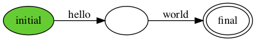

Table of Contents
- Chapter 1: On Concurrent Programming
- Chapter 2: Hello World!
- Chapter 3: The Problem of Concurrent Programming
- Chapter 4: The Harmony Virtual Machine
- Chapter 5: Critical Sections
- Chapter 6: Peterson's Algorithm
- Chapter 7: Harmony Methods and Pointers
- Chapter 8: Specification
- Chapter 9: Spinlock
- Chapter 10: Lock Implementations
- Chapter 11: Concurrent Data Structures
- Chapter 12: Fine-Grained Locking
- Chapter 13: Testing: Checking Behaviors
- Chapter 14: Debugging
- Chapter 15: Conditional Waiting
- Chapter 16: Split Binary Semaphores
- Chapter 17: Starvation
- Chapter 18: Monitors
- Chapter 19: Deadlock
- Chapter 20: Actors and Message Passing
- Chapter 21: Barrier Synchronization
- Chapter 22: Example: A Concurrent File Service
- Chapter 23: Interrupts
- Chapter 24: Non-Blocking Synchronization
- Chapter 25: Alternating Bit Protocol
- Chapter 26: Leader Election
- Chapter 27: Transactions and Two Phase Commit
- Chapter 28: Chain Replication
- Chapter 29: Working with Actions
- Chapter 30: Replicated Atomic Read/Write Register
- Chapter 31: Distributed Consensus
- Chapter 32: Paxos
- Chapter 33: Needham-Schroeder Authentication Protocol
- Bibliography
- Appendix A: Harmony Language Details
- Section A.1: Value Types and Operators
- Section A.2: Statements
- Section A.3: Harmony is not object-oriented
- Section A.4: Constants, Global and Local Variables
- Section A.5: Operator Precedence
- Section A.6: Tuples, Lists, and Pattern Matching
- Section A.7: Dynamic Allocation
- Section A.8: Comments
- Section A.9: Type Checking
- Appendix B: Modules
- Section B.1: The action module
- Section B.2: The alloc module
- Section B.3: The bag module
- Section B.4: The fork module
- Section B.5: The hoare module
- Section B.6: The list module
- Section B.7: The set module
- Section B.8: The synch module
- Appendix C: The Harmony Virtual Machine
- Section C.1: Machine Instructions
- Section C.2: Addresses and Method Calls
- Section C.3: Contexts and Threads
- Section C.4: Formal Specification
- Appendix D: How Harmony Works
- Appendix E: Simplified Grammar
- Appendix F: Directly checking linearizability
- Appendix G: Manual Pages
- Acknowledgments
- Index
- Glossary
List of Figures
| Figure 2.1 | [code/hello1.hny] Hello World! | |
| Figure 2.2 | [code/hello3.hny] Harmony program with two possible outputs | |
| Figure 2.3 | [code/hello4.hny] Harmony program with an infinite number of possible outputs | |
| Figure 2.4 | Demonstrating Harmony methods and threads | |
| Figure 2.5 | [code/hello7.hny] Various interleavings of threads | |
| Figure 2.6 | [code/hello8.hny] Making groups of operations atomic reduces interleaving | |
| Figure 2.7 | [code/triangle.hny] Computing triangle numbers | |
| Figure 2.8 | Running the code in Figure 2.7 | |
| Figure 2.9 | Running the code in Figure 2.7 for N = 100 | |
| Figure 3.1 | A sequential and a concurrent program | |
| Figure 3.2 | The output of running the code in Figure 3.1(b) | |
| Figure 3.3 | [code/Up.hny] Incrementing the same variable twice in parallel | |
| Figure 3.4 | [code/Upr.hny] What actually happens in Figure 3.3 | |
| Figure 3.5 | The output of running the code in Figure 3.3 | |
| Figure 3.6 | [code/Upf.hny] Demonstrating the finally clause. | |
| Figure 3.7 | [python/Up.py] Python implementation of Figure 3.3 | |
| Figure 3.8 | [python/UpMany.py] Using Python to increment N times | |
| Figure 4.1 | The first part of the HVM bytecode corresponding to Figure 3.3 | |
| Figure 4.2 | The HTML output of running Harmony on Figure 3.3 | |
| Figure 4.3 | [code/UpEnter.hny] Incorrect attempt at fixing the code of Figure 3.3 | |
| Figure 5.1 | [code/csbarebones.hny] Modeling a critical section | |
| Figure 5.2 | [code/cs.hny] Harmony model of a critical section | |
| Figure 5.3 | [code/naiveLock.hny] Naïve implementation of a shared lock and the markdown output of running Harmony | |
| Figure 5.4 | [code/naiveFlags.hny] Naïve use of flags to solve mutual exclusion | |
| Figure 5.5 | [code/naiveTurn.hny] Naïve use of turn variable to solve mutual exclusion | |
| Figure 6.1 | [code/Peterson.hny] Peterson's Algorithm | |
| Figure 6.2 | Venn diagram classifying all states and a trace | |
| Figure 6.3 | [code/csonebit.hny] Mutual exclusion using a flag per thread | |
| Figure 7.1 | [code/PetersonMethod.hny] Peterson's Algorithm accessed through methods | |
| Figure 7.2 | [code/hanoi.hny] Towers of Hanoi | |
| Figure 7.3 | [code/clock.hny] Harmony program that finds page replacement anomalies | |
| Figure 8.1 | [code/lock.hny] Specification of a lock | |
| Figure 8.2 | [code/lock_demo.hny] Using a lock to implement a critical section | |
| Figure 8.3 | [code/UpLock.hny] Figure 3.3 fixed with a lock | |
| Figure 9.1 | [code/spinlock.hny] Mutual Exclusion using a "spinlock" based on test-and-set | |
| Figure 10.1 | [code/lock_tas.hny] Implementation of the lock specification in Figure 8.1 using a spinlock based on test-and-set | |
| Figure 10.2 | [code/lock_ticket.hny] Implementation of the lock specification in Figure 8.1 using a ticket lock | |
| Figure 10.3 | [code/lock_test1.hny] A test program for locks (based on \autoref{fig:cs}) | |
| Figure 10.4 | [modules/lock_susp.hny] Lock implementation using suspension | |
| Figure 10.5 | [code/xy.hny] Incomplete code for Exercise 10.2 with desired invariant x + y = 100 | |
| Figure 10.6 | [code/atm.hny] Withdrawing money from an ATM | |
| Figure 11.1 | A sequential and a concurrent specification of a queue | |
| Figure 11.2 | [code/queue_test1.hny] Using a concurrent queue | |
| Figure 11.3 | [code/queue_lock.hny] An implementation of a concurrent queue data structure and a depiction of a queue with three elements | |
| Figure 11.4 | [code/queue_MS.hny] A queue with separate locks for enqueuing and dequeuing items and a depiction of a queue with two elements | |
| Figure 12.1 | [code/setobj.hny] Specification of a concurrent set object | |
| Figure 12.2 | [code/setobj_test1.hny] Test code for set objects | |
| Figure 12.3 | [code/setobj_linkedlist.hny] Implementation of a set of values using a linked list with fine-grained locking | |
| Figure 13.1 | [code/queue_test_seq.hny] Sequential queue test | |
| Figure 13.2 | [code/queue_btest1.hny] Concurrent queue test. The behavior DFA is for NOPS = 2 . | |
| Figure 13.3 | [python/queue_btest1.py] Python implementation of Figure 13.2 | |
| Figure 13.4 | [code/queue_nonatom_seq.hny] Sequential but not a concurrent queue implementation | |
| Figure 14.1 | [code/queue_broken.hny] Another buggy queue implementation | |
| Figure 14.2 | Running Figure 13.2 against Figure 14.1 | |
| Figure 14.3 | HTML output of Figure 14.2 but for NOPS=3 | |
| Figure 14.4 | [code/queue_fix.hny] Queue implementation with hand-over-hand locking | |
| Figure 15.1 | [code/rwlock.hny] Specification of reader/writer locks | |
| Figure 15.2 | [code/rwlock_test1.hny] Test code for reader/writer locks | |
| Figure 15.3 | [code/rwlock_cheat.hny] "Cheating" reader/writer lock | |
| Figure 15.4 | [code/rwlock_btest.hny] A behavioral test of reader/writer locks | |
| Figure 15.5 | [code/rwlock_busy.hny] Busy waiting reader/writer lock | |
| Figure 15.6 | [code/boundedbuffer.hny] Bounded buffer specification | |
| Figure 16.1 | [code/rwlock_sbs.hny] Reader/Writer Lock using Split Binary Semaphores | |
| Figure 16.2 | [code/gpu.hny] A thread-unsafe GPU allocator | |
| Figure 17.1 | [code/rwlock_fair.hny] Reader/Writer Lock SBS implementation addressing fairness | |
| Figure 18.1 | [modules/hoare.hny] Implementation of Hoare monitors | |
| Figure 18.2 | [code/boundedbuffer_hoare.hny] Bounded Buffer implemented using a Hoare monitor | |
| Figure 18.3 | [modules/synch.hny] Implementation of condition variables in the synch module | |
| Figure 18.4 | [code/rwlock_cv.hny] Reader/Writer Lock using Mesa-style condition variables | |
| Figure 18.5 | [code/qsort.hny] Iterative qsort() implementation | |
| Figure 18.6 | [code/qsorttest.hny] Test program for Figure 18.5 | |
| Figure 19.1 | [code/Diners.hny] Dining Philosophers | |
| Figure 19.2 | [code/DinersCV.hny] Dining Philosophers that grab both forks at the same time | |
| Figure 19.3 | [code/DinersAvoid.hny] Dining Philosophers that carefully avoid getting into a deadlock scenario | |
| Figure 19.4 | [code/bank.hny] Bank accounts | |
| Figure 20.1 | Depiction of three actors. The producer does not receive messages. | |
| Figure 20.2 | [code/counter.hny] An illustration of the actor approach | |
| Figure 21.1 | [code/barrier_test1.hny] Test program for Figure 21.2 | |
| Figure 21.2 | [code/barrier.hny] Barrier implementation | |
| Figure 21.3 | [code/barrier_test2.hny] Demonstrating the double-barrier pattern | |
| Figure 21.4 | [code/bsort.hny] Parallel bubble sort | |
| Figure 22.1 | [code/file.hny] Specification of the file system | |
| Figure 22.2 | [code/file_btest.hny] Test program for a concurrent file system | |
| Figure 22.3 | [code/disk.hny] Specification of a disk | |
| Figure 22.4 | The file system data structure: (a) disk layout (1 superblock, n blocks, b bitmap blocks, m inode blocks, 4 inodes per block); (b) inode for a file with 3 data blocks | |
| Figure 22.5 | [code/file_inode.hny] File system implementation preamble | |
| Figure 22.6 | [code/file_inode.hny] File system interface implementation | |
| Figure 22.7 | [code/file_inode.hny] File server and worker threads | |
| Figure 22.8 | [code/file_inode.hny] File system initialization | |
| Figure 22.9 | [code/file_inode.hny] File system bitmap maintenance | |
| Figure 22.10 | [code/file_inode.hny] Handling of read-only file requests | |
| Figure 22.11 | [code/file_inode.hny] Handling of write requests | |
| Figure 22.12 | [code/wal.hny] Specification of a Write Ahead Log | |
| Figure 23.1 | [code/trap.hny] How to use trap | |
| Figure 23.2 | [code/trap2.hny] A race condition with interrupts | |
| Figure 23.3 | [code/trap3.hny] Locks do not work with interrupts | |
| Figure 23.4 | [code/trap4.hny] Disabling and enabling interrupts | |
| Figure 23.5 | [code/trap5.hny] Example of an interrupt-safe method | |
| Figure 23.6 | [code/trap6.hny] Code that is both interrupt-safe and thread-safe | |
| Figure 24.1 | [code/hw.hny] Non-blocking queue | |
| Figure 25.1 | [code/abp.hny] Alternating Bit Protocol | |
| Figure 25.2 | [code/abptest.hny] Test code for alternating bit protocol | |
| Figure 26.1 | [code/leader.hny] A leader election protocol on a ring | |
| Figure 27.1 | [code/2pc.hny] Two Phase Commit protocol: code for banks | |
| Figure 27.2 | [code/2pc.hny] Two Phase Commit protocol: code for transaction coordinators | |
| Figure 28.1 | [code/rsm.hny] Replicated State Machine | |
| Figure 28.2 | The DFA generated by Figure 28.1 when NOPS=2 and NREPLICAS=2 | |
| Figure 28.3 | [code/chain.hny] Chain Replication (part 1) | |
| Figure 28.4 | [code/chain.hny] Chain Replication (part 2) | |
| Figure 29.1 | [code/chainaction.hny] Chain Replication specification using actions (part 1) | |
| Figure 29.2 | [code/chainaction.hny] Chain Replication specification using actions (part 2) | |
| Figure 30.1 | [code/register.hny] An atomic read/write register | |
| Figure 30.2 | [code/abdtest.hny] Behavioral test for atomic read/write registers and the output for the case that NREADERS = NWRITERS = 1 | |
| Figure 30.3 | [code/abd.hny] An implementation of a replicated atomic read/write register | |
| Figure 31.1 | [code/consensus.hny] Distributed consensus code and behavior DFA | |
| Figure 31.2 | [code/bosco.hny] A crash-tolerant consensus protocol | |
| Figure 31.3 | The behavior DFA for Figure 31.2 | |
| Figure 31.4 | [code/bosco2.hny] Reducing the state space | |
| Figure 32.1 | [code/paxos.hny] A version of the Paxos protocol | |
| Figure 33.1 | [code/needhamschroeder.hny] Needham-Schroeder protocol and an attack | |
| Figure B.1 | Using save and go to implement fork() | |
| Figure B.2 | [code/stacktest.hny] Testing a stack implementation. | |
| Figure B.3 | [code/stack1.hny] Stack implemented using a dynamically updated list. | |
| Figure B.4 | [code/stack2.hny] Stack implemented using static lists. | |
| Figure B.5 | [code/stack3.hny] Stack implemented using a recursive tuple data structure. | |
| Figure B.6 | [code/stack4.hny] Stack implemented using a linked list. | |
| Figure G.1 | [code/queuelin.hny] Queue implementation with linearization points | |
| Figure G.2 | [code/qtestconc.hny] Concurrent queue test |
Chapter 1. On Concurrent Programming
Programming with concurrency is hard. On the one hand concurrency can make programs faster than sequential ones, but having multiple threads read and update shared variables concurrently and synchronize with one another makes programs more complicated than programs where only one thing happens at a time. Why are concurrent programs more complicated than sequential ones? There are, at least, two reasons:
- The execution of a sequential program is mostly deterministic. If you run it twice with the same input, the same output will be produced. Bugs are typically easily reproducible and easy to track down, for example by instrumenting the program. On the other hand, the output of running concurrent programs depends on how the execution of the various threads are interleaved. Some bugs may occur only occasionally and may never occur when the program is instrumented to find them (so-called Heisenbugs---overhead caused by instrumentation leads to timing changes that makes such bugs less likely to occur).
- In a sequential program, each statement and each function can be thought of as happening atomically (indivisibly) because there is no other activity interfering with their execution. Even though a statement or function may be compiled into multiple machine instructions, they are executed back-to-back until completion. Not so with a concurrent program, where other threads may update memory locations while a statement or function is being executed.
This book is intended to help people with understanding and developing concurrent code, which includes programs for distributed systems. In particular, it uses a tool called Harmony that helps with testing concurrent code. The approach is based on model checking [8]: instead of relying on luck, Harmony will run all possible executions of a particular test program. So, even if a bug is unlikely to occur, if the test can expose the bug it will. Moreover, if the bug is found, the model checker precisely shows how to trigger the bug in the smallest number of steps.
Model checking is not a replacement for formal verification. Formal verification proves that a program is correct. Model checking only verifies that a program is correct for some model. Think of a model as a test program. Because model checking tries every possible execution, the test program needs to be simple---otherwise it may take longer than we care to wait for or run out of memory. In particular, the model needs to have a relatively small number of reachable states.
If model checking does not prove a program correct, why is it useful? To answer that question, consider a sorting algorithm. Suppose we create a test program, a model, that tries sorting all lists of up to five numbers chosen from the set {1, 2, 3, 4, 5 }. Model checking proves that for those particular scenarios the sorting algorithm works: the output is a sorted permutation of the input. In some sense it is an excellent test: it will have considered all corner cases, including lists where all numbers are the same, lists that are already sorted or reversely sorted, etc. If there is a bug in the sorting algorithm, most likely it would be triggered and the model checker would produce a scenario that would make it easy to find the source of the bug.
However, if the model checker does not find any bugs, we do not know for sure that the algorithm works for lists of more than five numbers or for lists that have values other than the numbers 1 through 5. Still, we would expect that the likelihood that there are bugs remaining in the sorting algorithm is small. That said, it would be easy to write a program that sorts all lists of up to five numbers correctly but fails to do so for a list of 6 numbers. (Hint: simply use an if statement.)
While model checking does not in general prove an algorithm correct, it can help with proving an algorithm correct. The reason is that many correctness properties can be proved using invariants: predicates that must hold for every state in the execution of a program. A model checker can find violations of proposed invariants when evaluating a model and provide valuable early feedback to somebody who is trying to construct a proof, even an informal one. We will include examples of such invariants as they often provide excellent insight into why a particular algorithm works.
So, what is Harmony? Harmony is a concurrent programming language. It was designed to teach the basics of concurrent and distributed programming, but it is also useful for testing new concurrent algorithms or even sequential and distributed algorithms. Harmony programs are not intended to be "run" like programs in most other programming languages---instead Harmony programs are model checked to test that the program has certain desirable properties and does not suffer from bugs.
The syntax and semantics of Harmony is similar to that of Python. Python is familiar to many programmers and is easy to learn and use. We will assume that the reader is familiar with the basics of Python programming. We also will assume that the reader understands some basics of machine architecture and how programs are executed. For example, we assume that the reader is familiar with the concepts of CPU, memory, register, stack, and machine instructions.
Harmony is heavily influenced by Leslie Lamport's work on TLA+, TLC, and PlusCal [30, 31], Gerard Holzmann's work on Promela and SPIN [26], and University of Washington's DSLabs system [36]. Some of the examples in this book are derived from those sources. Harmony is designed to have a lower learning curve than those systems, but is not as powerful. When you finish this book and want to learn more, we strongly encourage checking those out. Another excellent resource is Fred Schneider's book ``On Concurrent Programming'' [41]. (This chapter is named after that book.)
The book proceeds as follows:
- Chapter 2 introduces the Harmony programming language, as it provides the language for presenting synchronization problems and solutions.
- Chapter 3 illustrates the problem of concurrent programming through a simple example in which two threads are concurrently incrementing a counter.
- Chapter 4 presents the Harmony virtual machine to understand the problem underlying concurrency better.
- Chapter 5 introduces the concept of a critical section and presents various flawed implementations of critical sections to demonstrate that implementing a critical section is not trivial.
- Chapter 6 introduces Peterson's Algorithm, an elegant (although not very efficient or practical) solution to implementating a critical section.
- Chapter 7 gives some more details on the Harmony language needed for the rest of the book.
- Chapter 8 talks about how Harmony can be used as a specification language. It introduces how to specify atomic constructs.
- Chapter 9 introduces atomic locks for implemented critical sections.
- Chapter 10 looks at various ways in which the lock specification in Chapter 8 can be implemented.
- Chapter 11 gives an introduction to building concurrent data structures.
- Chapter 12 gives an example of fine-grained locking methods that allow more concurrency than coarse-grained approaches..
- Chapter 13 discusses approaches to testing concurrent code in Harmony.
- Chapter 14 instead goes into how to find a bug in concurrent code using the Harmony output.
- Chapter 15 talks about threads having to wait for certain conditions. As examples, it presents the reader/writer lock problem and the bounded buffer problem.
- Chapter 16 presents Split Binary Semaphores, a general technique for solving synchronization problems.
- Chapter 17 talks about starvation: the problem that in some synchronization approaches threads may not be able to get access to a resource they need.
- Chapter 18 presents monitors and condition variables, another approach to thread synchronication.
- Chapter 19 describes deadlock where a set of threads are indefinitely waiting for one another to release a resource.
- Chapter 20 presents the actor model and message passing as an approach to synchronization.
- Chapter 21 describes barrier synchronization, useful in high-performance computing applications such as parallel simulations.
- Chapter 22 presents a concurrent file system as as larger example of a concurrent program.
- Chapter 23 discusses how to handle interrupts, a problem closely related to---but not the same as---synchronizing threads.
- Chapter 24 introduces non-blocking or wait-free synchronization algorithms, which prevent threads waiting for one another more than a bounded number of steps.
- Chapter 25 presents a problem and a solution to the distributed systems problem of having two threads communicate reliably over an unreliable network.
- Chapter 26 presents a protocol for electing a leader on a ring of processors, where each processor is uniquely identified and only knows its successor on the ring.
- Chapter 27 describes atomic database transactions and the two-phase commit protocol used to implement them.
- Chapter 28 describes state machine replication and the chain replication protocol to support replication.
- Chapter 29 describes an alternative way to write concurrent and distributed specifications in Harmony, using chain replication as an example.
- Chapter 30 presents a protocol for a fault-tolerant replicated object that supports only read and write operations.
- Chapter 31 demonstrates a fault-tolerant distributed consensus algorithm (aka protocol) expressed in Harmony.
- Chapter 32 shows how one can specify and check the well-known Paxos consensus protocol.
- Chapter 33 demonstrates using Harmony to find a (known) bug in the original Needham-Schroeder authentication protocol.
Chapter 2. Hello World!
The first programming book that I read cover to cover was The C Programming Language (first edition) by Brian W. Kernighan and Dennis M. Ritchie, which was around 1980. I did not know at the time that 10 years later Dennis, the designer of the C programming language, would be my boss at AT&T Bell Labs in Murray Hill, NJ, while Brian would be my colleague in the same lab. The first C program in the book printed the string "hello, world". Since then, most programming tutorials for pretty much any programming language start with that example.

Harmony, too, has a Hello World program. Figure 2.1 shows the program and the corresponding output. After installation (see https://harmony.cs.cornell.edu), you can run it as follows from the command line:
$ represents a shell prompt).
For this to work, make sure harmony is in your command shell's
search path.
The code for examples in this book can be found in the code
folder under the name listed in the caption of the example.
If you need to, you can download the sources separately from
https://harmony.cs.cornell.edu/sources.zip.
In this case, the file code/hello1.hny contains the
code in Figure 2.1.
The output is a Deterministic State Machine (DFA). The green circle
represents the initial state and the double circle represents the final
state. There is one transition, labeled with the string
"hello world". The DFA describes (or recognizes) all possible
outputs that the program can generate. In this case, there is only one.But programs can usually have more than one execution and produce multiple different outputs as a result. This is usually as a result of different inputs, but Harmony programs do not have inputs. Instead, Figure 2.2 demonstrates nondetermistic choice in Harmony programs. In this case, the program chooses to print either "hello" or "world". The corresponding DFA captures both possibilities. You can think of the choose operator as enumerating all possible inputs to the program.
Figure 2.3 shows a program that has an infinite number of possible outputs by using a loop with a non-deterministic stopping condition. Harmony usually requires that any program must be able to terminate, so the loop is conditioned on a nondeterministic choice between False and True. The possible outputs consist of zero or more copies of the string "hello world". Note that this single state DFA (where the initial state and the final state happen to be the same) captures an infinite number of possible executions of the program.

print choose { "hello", "world" }
Figure 2.2. [code/hello3.hny] Harmony program with two possible outputs

while choose { False, True }:
print "hello world"
Figure 2.3. [code/hello4.hny] Harmony program with an infinite number of possible outputs
|  | |
|
|
| (a) [code/hello5.hny] | [code/hello6.hny] |
Figure 2.4. Demonstrating Harmony methods and threads
def hello(name):
print "hello"
print name
spawn hello("Lesley")
spawn hello("Robbert")
Figure 2.5. [code/hello7.hny] Various interleavings of threads
def hello(name):
atomically:
print "hello"
print name
spawn hello("Lesley")
spawn hello("Robbert")
Figure 2.6. [code/hello8.hny] Making groups of operations atomic reduces interleaving
Harmony is a programming language that borrows much of Python's syntax. Like Python, Harmony is an imperative, dynamically typed programming language. There are also some important differences:
- Harmony purposely only supports basic operator precedence or associativity. Use parentheses liberally to remove ambiguity.
- Harmony does not support floating point;
- Python is object-oriented, supporting classes with methods and inheritance; Harmony has objects but does not support classes. Harmony supports pointers, allowing construction of complicated data structures.
- In Python, lists, dictionaries, and sets are objects. In Harmony, they are values.
const N = 10
def triangle(n) returns result: # computes the n'th triangle number
result = 0
for i in {1..n}: # for each integer from 1 to n inclusive
result += i # add i to result
x = choose {0..N} # select an x between 0 and N inclusive
assert triangle(x) == ((x * (x + 1)) / 2)
Figure 2.7. [code/triangle.hny] Computing triangle numbers
$ harmony --noweb code/triangle.hny
- Phase 1: compile Harmony program to bytecode
- Phase 2: run the model checker (nworkers = 8)
- 13 states (time 0.00s, mem=0.000GB)
- Phase 3: analysis
- 13 components (0.00 seconds)
- Check for data races
- No issues found
- Phase 4: write results to code/triangle.hco
- Phase 5: loading code/triangle.hco
open file:///.../code/triangle.htm for detailed information
$Figure 2.8. Running the code in Figure 2.7
- Phase 1: compile Harmony program to bytecode
- Phase 2: run the model checker (nworkers = 8)
- 103 states (time 0.00s, mem=0.000GB)
- Phase 3: analysis
- 103 components (0.00 seconds)
- Check for data races
- No issues found
- Phase 4: write results to code/triangle.hco
- Phase 5: loading code/triangle.hco
open file:///.../code/triangle.htm for detailed information
$Figure 2.9. Running the code in Figure 2.7 for N = 100
range operator like Python.)
The last two lines in the program are the most interesting.
The first assigns to x some unspecified value in the range 0..N
and the second verifies that triangle(x) equals x(x + 1)∕2 .Running this Harmony program (Figure 2.8)
will try all possible executions, which
includes all possible values for x. The --noweb
flag tells Harmony not to automatically pop up the web browser window.
The text output from running Harmony is in Markdown format.
The assert statement checks that the output is correct. If the program is correct, Harmony reports the size of the "state graph" (13 states in this case). If not, Harmony also reports what went wrong, typically by displaying a summary of an execution in which something went wrong.
In Harmony, constants have a default specified value,
but those can be overridden on the command
line using the -c option.
Figure 2.9 shows how to
test the code for N = 100.
Exercises
- [Ex. 2.1]: Write a Harmony program that uses choose instead of spawn to create the same output DFA as Figure 2.4(b).
- [Ex. 2.2]: Add the line print(x, triangle(x)) to the end of the program and create an output png file. Before you look at it, what do you think it should look like?
- [Ex. 2.3]: See what happens if, instead of initializing result to 0, you initialize it to 1. (You do not need to understand the error report at this time. They will be explained in more detail in Chapter 4.)
- [Ex. 2.4]: Write a Harmony program that computes squares by repeated adding. So, the program should compute the square of x by adding x to an initial value of 0 x times.
Chapter 3. The Problem of Concurrent Programming
|
|
| (a) [code/prog1.hny] Sequential | (b) [code/prog2.hny] Concurrent |
Figure 3.1. A sequential and a concurrent program
- Phase 1: compile Harmony program to bytecode
- Phase 2: run the model checker (nworkers = 8)
- 10 states (time 0.00s, mem=0.000GB)
- Phase 3: analysis
- Safety Violation
- Phase 4: write results to code/prog2.hco
- Phase 5: loading code/prog2.hco
Summary: something went wrong in an execution
Here is a summary of an execution that exhibits the issue:
- Schedule thread T0: init()
- Line 1: Initialize shared to True
- Thread terminated
- Schedule thread T2: g()
- Line 4: Set shared to False (was True)
- Thread terminated
- Schedule thread T1: f()
- Line 3: Harmony assertion failed
Figure 3.2. The output of running the code in Figure 3.1(b)
Concurrent programming, aka multithreaded programming, involves multiple threads running in parallel while sharing variables. Figure 3.1 shows two programs. Program (a) is sequential. It sets shared to True, asserts that shared = True and finally sets shared to False. If you run the program through Harmony, it will not find any problems because there is only one execution possible and 1) in that execution the assertion does not fail and 2) the execution terminates. Program (b) is concurrent---it executes methods f() and g() in parallel. If method g() runs and completes before f(), then the assertion in f() will fail when f() runs. This problem is an example of non-determinism: methods f() and g() can run in either order. In one order, the assertion fails, while in the other it does not. But since Harmony checks all possible executions, it will find the problematic one.
Figure 3.2 shows the output of running Figure 3.1(b) through Harmony. Underneath the line, there is a summary of what happened in one of the executions. First, the initialization thread runs and sets the global variable shared to True. Then, the thread running g() runs to completion, setting shared to False. Finally, the thread running f() runs, and the assertion fails.
Figure 3.3 presents a more subtle example that illustrates non-atomicity. The program initializes two shared variables: an integer count and an array done with two booleans. The program then spawns two threads. The first runs incrementer(0); the second runs incrementer(1).
Method incrementer takes a parameter called self. It increments count and sets done[self] to True. It then waits until the other thread is done. (await c is shorthand for while not c: pass.) After that, method incrementer verifies that the value of count equals 2.
Note that although the threads are spawned one at a time,
they will execute concurrently. It is, for example, quite possible
that incrementer(1) finishes before incrementer(0)
even gets going.
And because Harmony tries every possible execution, it will consider
that particular execution as well.
What would the value of count be at the end of that execution?
count = 0
done = [ False, False ]
def incrementer(self):
count = count + 1
done[self] = True
await done[1 - self]
assert count == 2
spawn incrementer(0)
spawn incrementer(1)
Figure 3.3. [code/Up.hny] Incrementing the same variable twice in parallel
- Before you run the program, what do you think will happen? Is the program correct in that count will always end up being 2? (You may assume that
loadandstoreinstructions of the underlying virtual machine architecture are atomic (indivisible)---in fact they are.)
count = 0
done = [ False, False ]
def incrementer(self):
var register = count # load shared variable count into a private register
register += 1 # increment the register
count = register # store its value into variable count
done[self] = True
await done[1 - self]
assert count == 2
spawn incrementer(0)
spawn incrementer(1)
Figure 3.4. [code/Upr.hny] What actually happens in Figure 3.3
What is going on is that the Harmony program is compiled to machine instructions, and it is the machine instructions that are executed by the underlying Harmony machine. The details of this appear in Chapter 4, but suffice it to say that the machine has instructions that load values from memory and store values into memory. Importantly, it does not have instructions to atomically increment or decrement values in shared memory locations. So, to increment a value in memory, the machine must do at least three machine instructions. Figure 3.4 illustrates this. (The var statement declares a new local variable register.) Conceptually, the machine
- loads the value of count from its memory location into a register;
- adds 1 to the register;
- stores the new value into the memory location of count.
If the threads run one at a time, then count will be incremented
twice and ends up being 2. However, the following is also
a possible interleaving of incrementer(0) and incrementer(1):
- incrementer(1) loads the value of count, which is 0;
-
incrementer(0)loads the value of count, which is still 0; -
incrementer(0)adds 1 to the value that it loaded (0), and stores 1 into count; - incrementer(1) adds 1 to the value that it loaded (0), and stores 1 into count;
- incrementer(1) sets done[1] to True;
-
incrementer(0)sets done[0] to True.
- Phase 1: compile Harmony program to bytecode
- Phase 2: run the model checker (nworkers = 8)
- 42 states (time 0.00s, mem=0.000GB)
- Phase 3: analysis
- Safety Violation
- Phase 4: write results to code/Up.hco
- Phase 5: loading code/Up.hco
Summary: something went wrong in an execution
Here is a summary of an execution that exhibits the issue:
- Schedule thread T0: init()
- Line 1: Initialize count to 0
- Line 2: Initialize done to [ False, False ]
- Thread terminated
- Schedule thread T2: incrementer(1)
- Preempted in incrementer(1) about to store 1 into count in line 5
- Schedule thread T1: incrementer(0)
- Line 5: Set count to 1 (was 0)
- Line 6: Set done[0] to True (was False)
- Preempted in incrementer(0)
- Schedule thread T2: incrementer(1)
- Line 5: Set count to 1 (unchanged)
- Line 6: Set done[1] to True (was False)
- Line 8: Harmony assertion failed
Figure 3.5. The output of running the code in Figure 3.3
count = 0
finally count == 2
def incrementer():
count = count + 1
spawn incrementer()
spawn incrementer()
Figure 3.6. [code/Upf.hny] Demonstrating the finally clause.
The exercises below have you try the same thing (having threads concurrently increment an integer variable) in Python. As you will see, the bug is not easily triggered when you run a Python version of the program. But in Harmony Murphy's Law applies: if something can go wrong, it will. Usually that is not a good thing, but in Harmony it is. It allows you to find bugs in your concurrent programs much more easily than with a conventional programming environment.
Exercises
- [Ex. 3.1]: Harmony programs can usually be easily translated into
Python by hand. For example,
Figure 3.7 is a Python version of Figure 3.3.
- Run Figure 3.7 using Python. Does the assertion fail?
- Using a script, run Figure 3.7 1000 times.
For example, if you are using the bash shell (in Linux or Mac OS X, say), you can do the following:
for i in {1..1000} do python Up.py doneFOR /L %%i IN (1, 1, 1000) DO python Up.py PAUSE
- [Ex. 3.2]: Figure 3.8 is a version of Figure 3.7 that has each incrementer thread increment count N times. Run Figure 3.8 10 times (using Python). Report how many times the assertion fails and what the value of count was for each of the failed runs. Also experiment with lower values of N. How large does N need to be for assertions to fail? (Try powers of 10 for N.)
- [Ex. 3.3]: Can you think of a fix to Figure 3.3? Try one or two different fixes and run them through Harmony. Do not worry about having to come up with a correct fix at this time---the important thing is to develop an understanding of concurrency. (Also, you do not get to use the atomically keyword or a lock, yet.)
import threading
count = 0
done = [ False, False ]
def incrementer(self):
global count
count = count + 1
done[self] = True
while not done[1 - self]:
pass
assert count == 2
threading.Thread(target=incrementer, args=(0,)).start()
threading.Thread(target=incrementer, args=(1,)).start()
Figure 3.7. [python/Up.py] Python implementation of Figure 3.3
import threading
N = 1000000
count = 0
done = [ False, False ]
def incrementer(self):
global count
for i in range(N):
count = count + 1
done[self] = True
while not done[1 - self]:
pass
assert count == 2*N, count
threading.Thread(target=incrementer, args=(0,)).start()
threading.Thread(target=incrementer, args=(1,)).start()
Figure 3.8. [python/UpMany.py] Using Python to increment N times
Chapter 4. The Harmony Virtual Machine
Harmony programs are compiled to Harmony bytecode
(a list of machine instructions for a virtual machine),
which in turn is executed by the Harmony virtual machine (HVM).
The Harmony compiler, harmony, places the bytecode for file
x.hny in file x.hvm.
The model checker (called Charm) executes the code in
x.hvm and places its output in a file
called x.hco.
From the x.hco file, harmony creates a
detailed human-readable output file in x.hvb and
an interactive HTML file called x.htm.
The x.htm file is automatically opened in your default web
browser unless you specify the --noweb flag to harmony.
To understand the problem of concurrent computing, it is important to have a basic understanding of machine instructions, and in our case those of the HVM.
Harmony Values
Harmony programs, and indeed the HVM, manipulate Harmony values. Harmony values are recursively defined: they include booleans (False and True), integers (but not floating point numbers), strings (enclosed by single or double quotes), sets and lists of Harmony values, and dictionaries that map Harmony values to other Harmony values. Strings that start with a letter or an underscore and only contain letters, digits, and underscores can be written without quotes by preceding it with a dot. So, .example is the same string as "example".
A dictionary maps keys to values. Unlike Python, which requires that keys must be hashable, any Harmony value can be a key, including another dictionary. Dictionaries are written as {k0 : v0, k1 : v1, ...} . The empty dictionary is written as {:}. If d is a dictionary, and k is a key, then the following expression retrieves the Harmony value that k maps to in d:
In Harmony (unlike Python), lists and tuples are the same type. As in Python, you can create a singleton tuple (or list) by including a comma. For example, (1,) is a tuple consisting just of the number 1. Importantly, (1) = 1≠(1,) . Because, square brackets and parentheses work the same in Harmony, [a, b, c] (which looks like a Python list) is the same Harmony value as (a, b, c) (which looks like a Python tuple). So, if x = [False, True], then x[0] = False and x[1] = True, just like in Python. However, when creating a singleton list, make sure you include the comma, as in [False,]. The expression [False] just means False.
Harmony is not an object-oriented language, so objects don't have built-in methods. However, Harmony does have some powerful operators to make up for some of that. For example, dictionaries have two handy unary operators. If d is a dictionary, then keys d (or equivalently keys(d)) returns the set of keys and len d returns the size of this set.
Section A.1 provides details on all the types of values that Harmony currently supports.
Harmony Bytecode
A Harmony program is translated into HVM bytecode. To make it amenable to efficient model checking, the HVM is not an ordinary virtual machine, but its architecture is nonetheless representative of conventional computers and virtual machines such as the Java Virtual Machine.
Instead of bits and bytes, a HVM manipulates Harmony values. A HVM has the following components:
- Code: This is an immutable and finite list of HVM instructions, generated from a Harmony program. The types of instructions will be described later.
- Shared memory: A HVM has just one memory location containing a Harmony value.
- Threads: Any thread can spawn an unbounded number of other threads and threads may terminate. Each thread has a program counter that indexes into the code, a stack of Harmony values, and a private register that contains a Harmony value.[footnote: Currently, another thread register contains thread-local data. We do not use it (yet) in this book.]
0 Frame __init__ ()
code/Up.hny:1 count = 0
1 Push 0
2 Store count
code/Up.hny:2 done = [ False, False ]
3 Push [False, False]
4 Store done
code/Up.hny:4 def incrementer(self):
5 Jump 35
6 Frame incrementer self
code/Up.hny:5 count = count + 1
7 Load count
8 Push 1
9 2-ary +
10 Store count
Figure 4.1. The first part of the HVM bytecode corresponding to Figure 3.3
Compiling the code in Figure 3.3 results in the HVM bytecode
listed in Figure 4.1.
You can obtain this code by invoking harmony with the -a flag
like so:
harmony -a Up.hny
__init__,
which initializes the state.
It starts executing at instruction 0 and keeps executing until
it reaches the last instruction in the program.
In this case, it executes instructions 0 through 5 first.
The last instruction in that sequence is a JUMP
instruction that sets the program counter to 35
(skipping over the code for incrementer method).
The __init__ thread then executes the
remaining instructions and finishes.
Once initialization completes, any threads that were spawned
(in this case incrementer(0) and incrementer(1))
can run.At program counter 6 is the code for the incrementer method.
All methods start with a Frame instruction and end with a
Return instruction.
Section C.1 provides a list of all HVM machine instructions,
in case you want to read about the details.
The Frame instruction lists the name of the method and the
names of its arguments.
The code generated from count := count + 1 in Line 5 of
Up.hny is as follows (see Figure 4.1):
- The
Loadinstruction pushes the value of the count variable onto the stack. - The
Pushinstruction pushes the constant 1 onto the stack of the thread. -
2-aryis a+operation with 2 arguments. It pops two values from the stack (the value of count and 1), adds them, and pushes the result back onto the stack. - The
Storeinstruction pops a Harmony value (the sum of the count variable and 1) and stores it in the count variable.
-
Safety violation: This means something went wrong with at least one of the executions of the program that it tried. This can include a failing assertion, behavior violations, divide by zero, using an uninitialized or non-existent variable, dividing a set by an integer, and so on. Harmony will print a trace of the shortest bad execution that it found. -
Non-terminating State: Harmony found one or more states from which there does not exist an execution such that all threads terminate. Harmony will not only print the non-terminating state with the shortest trace, but also the list of threads at that state, along with their program counters. -
Behavior Violation: The program can terminate in a state not allowed by the behavioral specification (Chapter 13). -
Active Busy Waiting: There are states in which some thread cannot make progress without the help of another thread, but does not block (Chapter 15). -
Data Race: There are states in which two or more threads concurrently access a shared variable, at least one of which is a store operation (Chapter 10).
Figure 4.2. The HTML output of running Harmony on Figure 3.3
code/Up.hvb) and
an interactive HTML file that allows exploring more details
of the execution.
Open the suggested HTML file and you should see something like
Figure 4.2.In the top right, the HTML file contains the reported issue in red. Underneath it, a table shows the four turns in the execution. Instead of listing explicitly the program counters of the executed instructions, the HTML file contains a list of blocks for each executed instruction. We call this the timeline. You can click on such a block to see the state of the Harmony virtual machine just after executing the corresponding instruction. If a thread has finished its turn, there is also information on the status of that thread. For example, at the end of turn 2, incrementer[0] is about to store the value 1 in variable count, but at that point is preempted by incrementer[1]. The table also lists the program counter of the thread at each turn, the values of the shared variables, and any values the thread may have printed (none in this case). Underneath the table it shows the line of Harmony source code that is being executed in blue (with the specific part of the line that is being evaluated in green), and the HVM instruction that is about to be executed in green (along with an explanation in parentheses).
The bottom left shows the bytecode of the program being executed. It has alternating grey and white sections. Each section corresponds to a line of Harmony code. The instruction that is about to be executed, if any, is highlighted in red. (In this case, the state shown is a failed state and no instruction will be executed next.) If you hover the mouse over a machine instruction, it provides a brief explanation of what the instruction does.
The bottom right contains a table with the state of each thread. Status information for a thread can include:
-
runnable: the thread is runnable but not currently running. In Harmony, threads are interleaved and so at most one thread is actually running; -
running: the thread is currently executing instructions; -
terminated: the thread has completed all its instructions; -
failed: the thread has encountered an error, such as violating an assertion or divide by zero; -
blocked: the thread cannot make progress until another thread has updated the shared state. For example, this occurs when one of the implementers is waiting for the other to set its done flag; -
atomic: the thread is in atomic mode, not allowing other threads to be scheduled. This is, for example, the case when an assertion is being checked; -
read-only: the thread is in read-only mode, not able to modify shared state. Assertions can execute arbitrary code including methods, but they are not allowed to modify the shared state.
When you load the HTML file, it shows the state after executing the last instruction. As mentioned above, you can go to any point in the execution by clicking on one of the blocks in the timeline. When you do so, the current turn and thread will be highlighted in green. There are also various handy keyboard shortcuts:
| Right arrow: | go to the next instruction; |
| Left arrow: | go to the previous instruction; |
| Down arrow: | go to the next turn; |
| Up arrow: | go to the previous turn; |
| Enter (aka Return): | go to the next line of Harmony code; |
| 0: | go to the initial state. |
Exercises
- [Ex. 4.1]: Figure 4.3 shows an attempt at trying to fix the code of Figure 3.3. Run it through Harmony and see what happens. Based on the error output, describe in English what is wrong with the code by describing, in broad steps, how running the program can get into a bad state.
- [Ex. 4.2]: What if we moved Line 5 of Figure 4.3 to after the if statement (between Lines 7 and 8)? Do you think that would work? Run it through Harmony and describe either why it works or why it does not work.
count = 0
entered = done = [ False, False ]
def incrementer(self):
entered[self] = True
if entered[1 - self]: # if the other thread has already started
await done[1 - self] # wait until it is done
count = count + 1
done[self] = True
await done[1 - self]
assert count == 2
spawn incrementer(0)
spawn incrementer(1)
Figure 4.3. [code/UpEnter.hny] Incorrect attempt at fixing the code of Figure 3.3
Chapter 5. Critical Sections
def thread():
while True:
# Critical section is here
pass
spawn thread()
spawn thread()
Figure 5.1. [code/csbarebones.hny] Modeling a critical section
Critical sections are useful when accessing a shared data structure, particularly when that access requires multiple underlying machine instructions. A counter is a very simple example of a data structure (it is an array of bits), but---as we have seen---incrementing it requires multiple instructions. A more involved one would be accessing a binary tree. Adding a node to a binary tree, or re-balancing a tree, often requires multiple operations. Maintaining "consistency" is certainly much easier if during this time no other thread also tries to access the binary tree. Typically, you want some invariant property of the data structure to hold at the beginning and at the end of the critical section, but in the middle the invariant may be temporarily broken---this is not a problem as critical sections guarantee that no other thread will be able to see it. An implementation of a data structure that can be safely accessed by multiple threads and is free of race conditions is called thread-safe.
A critical section is often modeled as threads in an infinite loop entering and exiting the critical section. Figure 5.1 shows the Harmony code. We need to ensure is that there can never be two threads in the critical section. This property is called mutual exclusion. Mutual exclusion by itself is easy to ensure. For example, we could insert the following code to enter the critical section:
# number of threads in the critical section
in_cs = 0
invariant in_cs in { 0, 1 }
def thread():
while choose { False, True }:
# Enter critical section
atomically in_cs += 1
# Critical section is here
pass
# Exit critical section
atomically in_cs -= 1
spawn thread()
spawn thread()
Figure 5.2. [code/cs.hny] Harmony model of a critical section
In order to detect violations of progress, and other liveness problems in algorithms in general, Harmony requires that every execution must be able to reach a state in which all threads have terminated. Clearly, even if mutual exclusion holds in Figure 5.1, the spawned threads never terminate.
We will instead model threads in critical sections using the framework in Figure 5.2: a thread can choose to enter a critical section more than once, but it can also choose to terminate, even without entering the critical section ever. (Recall that Harmony will try every possible execution, and so it will evaluate both choices.) As it turns out, there is an advantage to doing it this way: we can also test if a thread can enter when there is no other thread trying to enter the critical section. As we will see below, this is not always obvious.
Moreover, this code specifies that at most one thread can be executing in the critical section. It does this using a counter in_cs that is atomically incremented when entering the critical section and atomically decremented when leaving the critical section. The code specifies the invariant that in_cs must be either 0 or 1. You can think of this as the type of in_cs.
We will now consider various approaches toward implementing this specification.
in_cs = 0
invariant in_cs in { 0, 1 }
lockTaken = False
def thread(self):
while choose({ False, True }):
# Enter critical section
await not lockTaken
lockTaken = True
atomically in_cs += 1
# Critical section
atomically in_cs -= 1
# Leave critical section
lockTaken = False
spawn thread(0)
spawn thread(1)
Summary: something went wrong in an execution
Here is a summary of an execution that exhibits the issue:
- Schedule thread T0: init()
- Line 1: Initialize in_cs to 0
- Line 4: Initialize lockTaken to False
- Thread terminated
- Schedule thread T3: thread(1)
- Line 7: Choose True
- Preempted in thread(1) about to store True into lockTaken in line 10
- Schedule thread T2: thread(0)
- Line 7: Choose True
- Line 10: Set lockTaken to True (was False)
- Line 12: Set in_cs to 1 (was 0)
- Preempted in thread(0) about to execute atomic section in line 14
- Schedule thread T3: thread(1)
- Line 10: Set lockTaken to True (unchanged)
- Line 12: Set in_cs to 2 (was 1)
- Preempted in thread(1) about to execute atomic section in line 14
- Schedule thread T1: invariant()
- Line 2: Harmony assertion failed
Figure 5.3. [code/naiveLock.hny] Naïve implementation of a shared lock and the markdown output of running Harmony
in_cs = 0
invariant in_cs in { 0, 1 }
flags = [ False, False ]
def thread(self):
while choose({ False, True }):
# Enter critical section
flags[self] = True
await not flags[1 - self]
atomically in_cs += 1
# Critical section
atomically in_cs -= 1
# Leave critical section
flags[self] = False
spawn thread(0)
spawn thread(1)
Summary: some execution cannot terminate
Here is a summary of an execution that exhibits the issue:
- Schedule thread T0: init()
- Line 1: Initialize in_cs to 0
- Line 4: Initialize flags to [ False, False ]
- Thread terminated
- Schedule thread T1: thread(0)
- Line 7: Choose True
- Line 9: Set flags[0] to True (was False)
- Preempted in thread(0) about to load variable flags[1] in line 10
- Schedule thread T2: thread(1)
- Line 7: Choose True
- Line 9: Set flags[1] to True (was False)
- Preempted in thread(1) about to load variable flags[0] in line 10
Final state (all threads have terminated or are blocked):
- Threads:
- T1: (blocked) thread(0)
- about to load variable flags[1] in line 10
- T2: (blocked) thread(1)
- about to load variable flags[0] in line 10
- T1: (blocked) thread(0)
Figure 5.4. [code/naiveFlags.hny] Naïve use of flags to solve mutual exclusion
in_cs = 0
invariant in_cs in { 0, 1 }
turn = 0
def thread(self):
while choose({ False, True }):
# Enter critical section
turn = 1 - self
await turn == self
atomically in_cs += 1
# Critical section
atomically in_cs -= 1
# Leave critical section
spawn thread(0)
spawn thread(1)
Summary: some execution cannot terminate
Here is a summary of an execution that exhibits the issue:
- Schedule thread T0: init()
- Line 1: Initialize in_cs to 0
- Line 4: Initialize turn to 0
- Thread terminated
- Schedule thread T2: thread(1)
- Line 7: Choose False
- Thread terminated
- Schedule thread T1: thread(0)
- Line 7: Choose True
- Line 9: Set turn to 1 (was 0)
- Preempted in thread(0) about to load variable turn in line 10
Final state (all threads have terminated or are blocked):
- Threads:
- T1: (blocked) thread(0)
- about to load variable turn in line 10
- T2: (terminated) thread(1)
- T1: (blocked) thread(0)
Figure 5.5. [code/naiveTurn.hny] Naïve use of turn variable to solve mutual exclusion
You may already have heard of the concept of a lock and have realized that it could be used to implement a critical section. The idea is that the lock is like a baton that at most one thread can own (or hold) at a time. A thread that wants to enter the critical section at a time must obtain the lock first and release it upon exiting the critical section. Using a lock is a good thought, but how does one implement one? Figure 5.3 presents an attempt at mutual exclusion based on a naïve (and, as it turns out, incorrect) implementation of a lock. Initially the lock is not owned, indicated by lockTaken being False. To enter the critical section, a thread waits until lockTaken is False and then sets it to True to indicate that the lock has been taken. The thread then executes the critical section. Finally, the thread releases the lock by setting lockTaken back to False.
Unfortunately, if we run the program through Harmony, we find that the assertion fails. Figure 5.3 also shows the Harmony output. thread(1) finds that the lock is available, but just before it stores True in lockTaken, thread(0) gets to run. (Recall that you can hover your mouse over a machine instruction in order to see what it does.) Because lockTaken is still False, it too believes it can acquire the lock, and stores True in lockTaken and moves on to the critical section. Finally, thread(1) moves on, also stores True into lockTaken and also moves into the critical section. The lockTaken variable suffers from the same sort of race condition as the count variable in Figure 3.3: testing and setting the lock consists of several instructions. It is thus possible for both threads to believe the lock is available and to obtain the lock at the same time.
Preventing multiple threads from updating the same variable, Figure 5.4 presents a solution based on each thread having a flag indicating that it is trying to enter the critical section. A thread can write its own flag and read the flag of its peer. After setting its flag, the thread waits until the other thread ( 1 - self ) is not trying to enter the critical section. If we run this program, the assertion does not fail. In fact, this solution does prevent both threads being in the critical section at the same time.
To see why, first note the following invariant: if thread i is in the critical section, then flags[i] = True. Without loss of generality, suppose that thread 0 sets flags[0] at time t0 . Thread 0 can only reach the critical section if at some time t1 , t1 > t0 , it finds that flags[1] = False. Because of the invariant, flags[1] = False implies that thread 1 is not in the critical section at time t1 . Let t2 be the time at which thread 0 sets flags[0] to False. Thread 0 is in the critical section sometime between t1 and t2 . It is easy to see that thread 1 cannot enter the critical section between t1 and t2 , because flags[1] = False at time t1 . To reach the critical section between t1 and t2 , it would first have to set flags[1] to True and then wait until flags[0] = False. But that does not happen until time t2 .
However, if you run the program through Harmony, it turns out the solution does have a problem: if both try to enter the critical section at the same time, they may end up waiting for one another indefinitely. (This is a form of deadlock, which will be discussed in Chapter 19.) Thus the solution violates progress.
The final naïve solution that we propose is based on a variable called turn. Each thread politely lets the other thread have a turn first. When turn = i, thread i can enter the critical section, while thread 1 - i has to wait. An invariant of this solution is that while thread i is in the critical section, turn = i. Since turn cannot be 0 and 1 at the same time, mutual exclusion is satisfied. The solution also has the nice property that the thread that has been waiting the longest to enter the critical section can go next.
Run the program through Harmony. It turns out that this solution also violates progress, albeit for a different reason: if thread i terminates instead of entering the critical section, thread 1 - i , politely, ends up waiting indefinitely for its turn. Too bad, because it would have been a great solution if both threads try to enter the critical section ad infinitum.
Exercises
- [Ex. 5.1]: Run Figure 5.2 using Harmony. As there is no protection of the critical
section, mutual exclusion is violated,
the assertion should fail, and a trace should be reported.
Now insert
await False just before entering the critical section in Figure 5.2 and run Harmony again. Mutual exclusion is guaranteed but progress is violated. Harmony should print a trace to a state from which a terminating state cannot be reached. Describe in English the difference in the failure reports before and after inserting the code. - [Ex. 5.2]: See if you can come up with some different approaches that satisfy both mutual exclusion and progress. Try them with Harmony and see if they work or not. If they don't, try to understand why. If you get active busy waiting or data race reports, you probably found a correct solution; you'll learn later how to suppress those. Do not despair if you can't figure out how to develop a solution that satisfies both mutual exclusion and progress---as we will find out, it is possible but not obvious.
Chapter 6. Peterson's Algorithm
in_cs = 0
invariant in_cs in { 0, 1 }
sequential flags, turn
flags = [ False, False ]
turn = choose({0, 1})
def thread(self):
while choose({ False, True }):
# Enter critical section
flags[self] = True
turn = 1 - self
await (not flags[1 - self]) or (turn == self)
atomically in_cs += 1
# Critical section
atomically in_cs -= 1
# Leave critical section
flags[self] = False
spawn thread(0)
spawn thread(1)
Figure 6.1. [code/Peterson.hny] Peterson's Algorithm
A thread first indicates its interest in entering the critical section by setting its flag. It then politely gives way to the other thread should it also want to enter the critical section---if both do so at the same time one will win because writes to memory in Harmony are atomic. The thread continues to be polite, waiting until either the other thread is nowhere near the critical section (flag[1 - self] = False) or has given way (turn = self). Running the algorithm with Harmony shows that it satisfies both mutual exclusion and progress.

Figure 6.2. Venn diagram classifying all states and a trace
Why does it work? We will focus here on how one might go about proving mutual exclusion for an algorithm such as Peterson's. It turns out that doing so is not easy. If you are interested in learning more about concurrent programming but not necessarily in how to prove concurrent programs correct, you may choose to skip the rest of this chapter. If you are still here, you have to understand a little bit more about how the Harmony virtual machine (HVM) works. In Chapter 4 we talked about the concept of state: at any point in time the HVM is in a specific state. A state is comprised of the values of the shared variables as well as the values of the thread variables of each thread, including its program counter and the contents of its stack. Each time a thread executes a HVM machine instruction, the state changes (if only because the program counter of the thread changes). We call that a step. Steps in Harmony are atomic.
The HVM starts in an initial state in which there is only one thread (__init__()) and its program counter is 0. A trace is a sequence of steps starting from the initial state, resulting in a sequence of states. When making a step, there are two sources of non-determinism in Harmony. One is when there is more than one thread that can make a step. The other is when a thread executes a choose operation and there is more than one choice. Because there is non-determinism, there are multiple possible traces. We call a state reachable if it is either the initial state or it can be reached from the initial state through a finite trace. A state is final when there are no threads left to make state changes.
It is often useful to classify states. Initial, final, and reachable, and unreachable are all examples of classes of states. Figure 6.2 depicts a Venn diagram of various classes of states and a trace. One way to classify states is to define a predicate over states. All states in which x = 1, or all states where there are two or more threads executing, are examples of such predicates. For our purposes, it is useful to define a predicate that says that at most one thread is in the critical section. We shall call such states exclusive.
An invariant of a program is a predicate that holds over all states that are reachable by that program. We want to show that exclusivity is an invariant because mutual exclusion means that all reachable states are exclusive. In other words, we want to show that the set of reachable states of executing the program is a subset of the set of states where there is at most one thread in the critical section.
One way to prove that a predicate is an invariant is through induction on the number of steps. First you prove that the predicate holds over the initial state. Then you prove that for every reachable state, and for every step from that reachable state, the predicate also holds over the resulting state. For this to work you would need a predicate that describes exactly which states are reachable. But we do not have such a predicate: we know how to define the set of reachable states inductively, but---given an arbitrary state---it is not easy to see whether it is reachable or not.
To solve this problem, we will use what is called an
inductive invariant.
An inductive invariant  is a predicate over states that satisfies the following:
is a predicate over states that satisfies the following:
- holds in the initial state.
- For any state in which holds (including unreachable ones) and for any
thread in the state, if the thread takes a step, then also holds in the
resulting state.
We are looking for an inductive invariant that implies exclusivity. In other words, the set of states where the inductive invariant holds must be a subset of the set of states where there is at most one thread in the critical section.
Let us begin with considering the following important property:
 (i) = thread(i)@[10
(i) = thread(i)@[10 17] ⇒ flags[i]
,
that is, if thread i is executing in lines 10 through 17, then flags[i]
is set.
Although it does not, by itself, imply exclusivity, we can show that
(i) is an inductive invariant (for both threads 0 and 1).
To wit, it holds in the initial state, because in the initial state thread i does
not even exist yet.
Now we have to show that if (i) holds in some state, then
(i) also holds in a next state.
Since only thread i ever changes flags[i]
, we only need to
consider steps by thread i.
Since (i) holds, there are two cases to consider:
17] ⇒ flags[i]
,
that is, if thread i is executing in lines 10 through 17, then flags[i]
is set.
Although it does not, by itself, imply exclusivity, we can show that
(i) is an inductive invariant (for both threads 0 and 1).
To wit, it holds in the initial state, because in the initial state thread i does
not even exist yet.
Now we have to show that if (i) holds in some state, then
(i) also holds in a next state.
Since only thread i ever changes flags[i]
, we only need to
consider steps by thread i.
Since (i) holds, there are two cases to consider:
- states in which flags[i] = true
- states in which thread(i)@[10
 17]
(because false implies anything)
17]
(because false implies anything)
(i) still holds.
In the first case, there is only one step that thread i can take that would
set flags[i] to false: the step from line 17 to line 18. But executing the line
would also take the thread out of lines 10 17 , so (i)
continues to hold.
In the second case (thread i is not executing in lines 1017 ), the only step
that would cause thread i to execute in lines 10
17 , so (i)
continues to hold.
In the second case (thread i is not executing in lines 1017 ), the only step
that would cause thread i to execute in lines 10 17 would be the step in line 9.
But in that case flags[i] would end up being true, so
(i) continues to hold as well.
So, (i)
is an inductive invariant (for both threads 0 and 1).
17 would be the step in line 9.
But in that case flags[i] would end up being true, so
(i) continues to hold as well.
So, (i)
is an inductive invariant (for both threads 0 and 1).While (i) does not imply mutual exclusion, it does imply the following useful
invariant: thread(i)@cs ⇒ flags[i]
: when thread i is
at the critical section, flags[i] is set. This seems obvious from the code,
but now you know how to prove it.
We will use a similar technique to prove the exclusivity is invariant.
We need a stronger inductive invariant than (i) to prove mutual exclusion.
What else do we know when thread i is in the critical section?
Let  (i) = flags[1 - i] ∨ turn = i , that is,
the condition on the await statement for thread i.
In a sequential program, (i)
would clearly hold if thread i is in
the critical section: thread(i)@cs ⇒(i) .
However, because thread 1 - i
is executing concurrently, this property does not
hold.
You can use Harmony to verify this. Just place the following command
in the critical section of the program:
(i) = flags[1 - i] ∨ turn = i , that is,
the condition on the await statement for thread i.
In a sequential program, (i)
would clearly hold if thread i is in
the critical section: thread(i)@cs ⇒(i) .
However, because thread 1 - i
is executing concurrently, this property does not
hold.
You can use Harmony to verify this. Just place the following command
in the critical section of the program:
(i) ∨thread(1 - i)@12 .
That is, if thread i is at the critical section, then
either (i)
holds or thread 1 - i is about to execute line 12.
(i) is an invariant for
i = 0,1 .
Moreover, if (i) and (i) both hold for i = 0,1 ,
then mutual exclusion holds. We can show this using proof by
contradiction. Suppose mutual exclusion is violated and thus both threads are in
the critical section. By it must be the case that both
flags are true. By and the fact that neither thread
is about to execute Line 12, we know that both C(0) and C(1) must hold.
This then implies that
turn = 0 ∧ turn = 1 , providing
the desired contradiction.
We claim that (i) is an inductive invariant. First, since neither thread in in the critical section in the initial state, it is clear that (i) holds in the initial state. Without loss of generality, suppose i = 0 (a benefit from the fact that the algorithm is symmetric for both threads). We still have to show that if we are in a state in which (0) holds, then any step will result in a state in which (0) still holds.
First consider the case that thread 0 is at label cs. If thread 0 were to take a step, then in the next state thread 0 would be no longer at that label and (0) would hold trivially over the next state. Therefore we only need to consider a step by thread 1. From we know that one of the following three cases must hold before thread 1 takes a step:
- flags[1] = False;
- turn = 0;
- thread 1 is about to execute Line 12.
Now consider the case where thread 0 is not in the critical section, and therefore (0) holds trivially because false implies anything. There are three cases to consider:
- Thread 1 takes a step. But then thread 0 is still not in the critical section and (0) continues to hold;
- Thread 0 takes a step but still is not in the critical section. Then again (0) continues to hold.
- Thread 0 takes a step and ends up in the critical section.
Because thread 0 entered the critical section, we know that
flags}[1] = False or turn = 0 because
of the
awaitcondition. And hence (0) continues to hold in that case as well.
Even though they are not strictly necessary, we encourage you to include invariants in your Harmony code. They can provide important insights into why the code works.
A cool anecdote is the following. When the author of Harmony had to teach
Peterson's Algorithm, he refreshed his memory by looking at the Wikipedia
page. The page claimed that the following predicate is invariant:
if thread i is in the critical section, then (i) (i.e.,
without the disjunct that thread 1 - i is about to execute Line 12.
We already saw that this is not an invariant.
(The author fixed the Wikipedia page with the help of Fred B. Schneider.)
This anecdote suggests the following. If you need to do a proof by induction of an algorithm, you have to come up with an inductive invariant. Before trying to prove the algorithm, you can check that the predicate is at least invariant by testing it using Harmony. Doing so could potentially avoid wasting your time on a proof that will not work because the predicate is not invariant, and therefore not an inductive invariant either. Moreover, analyzing the counterexample provided by Harmony may well suggest how to fix the predicate.
Exercises
- [Ex. 6.1]: Figure 6.3 presents another solution to the mutual exclusion problem. It is similar to the one in Figure 5.4, but has a thread back out and try again if it finds that the other thread is either trying to enter the critical section or already has. Compare this algorithm with Peterson's. Why does Harmony complain about active busy waiting? Does the algorithm guarantee that at least one thread can enter the critical section?
- [Ex. 6.2]: Can you find one or more inductive invariants for the algorithm in
Figure 6.3 to prove it correct?
Here's a pseudo-code version of the algorithm to help you. Each line
is an atomic action:
initially: flagX = flagY = False thread X: thread Y: X0: flagX = True Y0: flagY = True X1: if not flagY goto X4 Y1: if not flagX goto Y4 X2: flagX = False Y2: flagY = False X3: goto X0 Y3: goto Y0 X4: ...critical section... Y4: ...critical section... X5: flagX = False Y5: flagY = False - [Ex. 6.3]: A colleague of the author asked if the first two assignments in Peterson's algorithm (setting flags[self] to True and turn to 1 - self can be reversed. After all, they are different variables assigned independent values---in a sequential program one could surely swap the two assignments. See if you can figure out for yourself if the two assignments can be reversed. Then run the program in Figure 6.1 after reversing the two assignments and describe in English what happens.
- [Ex. 6.4]: Bonus question: Can you generalize Peterson's algorithm to more than two threads?
- [Ex. 6.5]: Bonus question: Implement Dekker's Algorithm, Dijkstra's Algorthm [15], Eisenstein and McGuire's Algorithm, Szymański's Algorithm, or Lamport's Bakery Algorithm. Note that the last one uses unbounded state, so you should modify the threads so they only try to enter the critical section a bounded number of times.
in_cs = 0
invariant in_cs in { 0, 1 }
sequential flags
flags = [ False, False ]
def thread(self):
while choose({ False, True }):
# Enter critical section
flags[self] = True
while flags[1 - self]:
flags[self] = False
flags[self] = True
atomically in_cs += 1
# Critical section
atomically in_cs -= 1
# Leave critical section
flags[self] = False
spawn thread(0)
spawn thread(1)
Figure 6.3. [code/csonebit.hny] Mutual exclusion using a flag per thread
Chapter 7. Harmony Methods and Pointers
A method m with argument a is invoked in its most basic form as follows (assigning the result to r).
You may note that all this looks familiar. Indeed, the syntax is the same as that for dictionaries and lists (see Chapter 4). Dictionaries, lists, and methods all map Harmony values to Harmony values, and their syntax is indistinguishable. If f is a method, list, or dictionary, and x is some Harmony value, then f x, f(x), and f[x] are all the same expression in Harmony.
def P_enter(pm, pid):
pm->flags[pid] = True
pm->turn = 1 - pid
await (not pm->flags[1 - pid]) or (pm->turn == pid)
def P_exit(pm, pid):
pm->flags[pid] = False
def P_mutex() returns result:
result = { .turn: choose({0, 1}), .flags: [ False, False ] }
#### The code above can go into its own Harmony module ####
in_cs = 0
invariant in_cs in { 0, 1 }
sequential mutex
mutex = P_mutex()
def thread(self):
while choose({ False, True }):
P_enter(?mutex, self)
atomically in_cs += 1
# Critical section
atomically in_cs -= 1
P_exit(?mutex, self)
spawn thread(0)
spawn thread(1)
Figure 7.1. [code/PetersonMethod.hny] Peterson's Algorithm accessed through methods
Harmony also does not support break or continue statements in loops. One reason for their absence is that, particularly in concurrent programming, such control flow directions are highly error-prone. It's too easy to forget to, say, release a lock when returning a value in the middle of a method---a major source of bugs in practice.
Harmony is not an object-oriented language like Python is. In Python,
you can pass a reference to an object to a method, and that method
can then update the object. In Harmony, it is also sometimes convenient
to have a method update a shared variable specified as an argument.
For this, as mentioned in Chapter 4,
each shared variable has an address, itself a Harmony value.
If x is a shared variable, then the expression ?x is the address of x.
If a variable contains an address, we call that variable a pointer.
If p is a pointer to a shared variable, then the
expression !p is the value of the shared variable.
In particular, !?x = x.
This is similar to how C pointers work (*&x = x).
Often, pointers point to dictionaries, and so if p is such a pointer, then (!p).field would evaluate to the specified field in the dictionary. Note that the parentheses in this expression are needed, as !p.field would wrongly evaluate !(p.field). (!p).field is such a common expression that, like C, Harmony supports the shorthand p->field, which greatly improves readability.
Figure 7.1 again shows Peterson's algorithm,
but this time with methods defined to enter and exit the critical
section.
The name mutex is often used to denote a variable or value
that is used for mutual exclusion.
P_mutex is a method that returns a "mutex," which, in this
case, is a dictionary that contains Peterson's Algorithm's shared memory state:
a turn variable and two flags.
Both methods P_enter and P_exit take two arguments:
a pointer to a mutex and the thread identifier (0 or 1).
pm->turn is the value of the .turn key
in the dictionary that pm points to.
You can put the first three methods in its own Harmony source file and include it using the Harmony import statement. This would make the code usable by multiple applications.
Finally, methods can have local variables. Method variables are either mutable (writable) or immutable (read-only). The arguments to a method and the bound variable (or variables) within a for statement are immutable; the result variable is mutable. Using the var statement, new mutable local variables can be declared. For example, var x = 3 declares a new mutable local variable x. The let statement allows declaring new immutable local variables. For example: let x = 3: y += x adds 3 to the global variable y. See Section A.4 for more information.
current = [ [1, 2, 3], [], [] ]
while current[2] != [1, 2, 3]:
let moves = { (s, d) for s in {0..2} for d in {0..2}
where current[s] != []
where (current[d] == []) or (current[s][0] < current[d][0]) }
let (src,dst) = choose moves:
print str(src) + " -> " + str(dst)
current[dst] = [current[src][0],] + current[dst]
del current[src][0]
assert False
Figure 7.2. [code/hanoi.hny] Towers of Hanoi
It is even cooler to remove that assertion and let Harmony generate all possible solutions to the problem.
const FIFO = False
def CLOCK(n) returns result:
result = { .entries: [None,] * n, .recent: {}, .hand: 0, .misses: 0 }
def ref(clock, x):
if x not in clock->entries:
while clock->entries[clock->hand] in clock->recent:
clock->recent -= {clock->entries[clock->hand]}
clock->hand = (clock->hand + 1) % len(clock->entries)
clock->entries[clock->hand] = x
clock->hand = (clock->hand + 1) % len(clock->entries)
clock->misses += 1
if not FIFO:
clock->recent |= {x}
clock3, clock4, refs = CLOCK(3), CLOCK(4), []
const VALUES = { 1..5 }
var last = {}
for i in {1..100}:
let x = i if i < 5 else choose(VALUES - last):
refs = refs + [x,]
ref(?clock3, x); ref(?clock4, x)
assert(clock4.misses <= clock3.misses)
last = {x}
Figure 7.3. [code/clock.hny] Harmony program that finds page replacement anomalies
In this program, CLOCK maintains the state of a cache (in practice, typically pages in memory). The set recent maintains whether an access to the cache for a particular reference was recent or not. (It is not used if FIFO is True.) The integer misses maintains the number of cache misses. Method ref(ck, x) is invoked when x is referenced and checked against the cache ck.
The program declares two caches: one with 3 entries (clock3) and one with 4 entries (clock4). The interesting part is in the last block of code. It runs every sequence of references of up to 100 entries, using references in the range 1 through 5. Note that all the constants chosen in this program (3, 4, 5, 100) are the result of some experimentation---you can try other ones. To reduce the search space, the first four references are pinned to 1, 2, 3, and 4. Further reducing the search space, the program never repeats the same reference twice in a row (using the local variable last).
The two things to note here is the use of the choose
expression and the assert statement. Using choose,
we are able to express searching through all possible strings of
references without a complicated nested iteration.
Using assert, we are able to express the anomaly we are
looking for.
In case you want to check if you get the right results. For FIFO, the program finds the same anomaly that Bélády et al. found: 1 2 3 4 1 2 5 1 2 3 4 5. For the CLOCK algorithm the program actually finds a shorter reference string: 1 2 3 4 2 1 2 5 1 2.
Exercises
- [Ex. 7.1]: (This is just for fun or exercise as it is not a concurrent or distributed problem.) Implement a Harmony program that finds solutions to the "cabbage, goat, and wolf" problem. In this problem, a person accompanied by these three items has to cross a stream in a small boat, but can only take one item at a time. So, the person has to cross back and forth several times, leaving two items on one or the other shore by themselves. Unfortunately, if left to themselves, the goat would eat the cabbage and the wolf would eat the goat. What crossings does the person need to make in order not to lose any items?
Chapter 8. Specification
def Lock() returns result:
result = False
def acquire(lk):
atomically when not !lk:
!lk = True
def release(lk):
atomically:
assert !lk
!lk = False
Figure 8.1. [code/lock.hny] Specification of a lock
from lock import Lock, acquire, release
const NTHREADS = 5
thelock = Lock()
def thread():
acquire(?thelock)
pass # critical section is here
release(?thelock)
for i in {1..NTHREADS}:
spawn thread()
Figure 8.2. [code/lock_demo.hny] Using a lock to implement a critical section
from synch import Lock, acquire, release
sequential done
count = 0
countlock = Lock()
done = [ False, False ]
def thread(self):
acquire(?countlock)
count = count + 1
release(?countlock)
done[self] = True
await done[1 - self]
assert count == 2
spawn thread(0)
spawn thread(1)
Figure 8.3. [code/UpLock.hny] Figure 3.3 fixed with a lock
acquire() and release().
The acquire() operation waits until the lock is False
and then sets it to True in an atomic operation.
The release() operation sets the lock back to False.
The code is similar to Figure 5.3, except that waiting
for the lock to become available and taking it is executed as an
atomic operation.The code in Figure 8.1 is similar to the code in Harmony's synch module. (The module generalizes locks to binary semaphores (Chapter 16), but the lock interface is the same.) Figure 8.2 shows how locks may be used to implement a critical section. Figure 8.3 gives an example of how locks may be used to fix the program of Figure 3.3.
Note that the code of Figure 8.1 is executable in Harmony. However, the atomically keyword is not available in general programming languages and should not be used for implementation. Peterson's algorithm is an implementation of a lock, although only for two processes. In the following chapters, we will look at more general ways of implementing locks using atomic constructions that are usually available in the underlying hardware.
In Harmony, any statement can be preceded by the atomically keyword. It means that statement as a whole is to be executed atomically. The atomically keyword can be used to specify the behavior of methods such as acquire and release. But an actual executable program should not use the atomically keyword because---on a normal machine---it cannot be directly compiled into machine code. If we want to make the program executable on hardware, we have to show how Lock, acquire, and release are implemented, not just how they are specified. Chapter 9 presents such an implementation.
The code in Figure 8.1 also uses the Harmony when statement. A when statement waits until a time in which condition holds (not necessarily the first time) and then executes the statement block. The "await condition" statement is the same as "when condition: pass". Combined with the atomically keyword, the entire statement is executed atomically at a time that the condition holds.
It is important to appreciate the difference between an atomic section (the statements executed within an atomic block of statements) and a critical section (protected by a lock of some sort). The former ensures that while the statements are executing no other thread can execute. The latter allows multiple threads to run concurrently, just not within the critical section. The former is rarely available to a programmer (e.g., none of Python, C, or Java support it), while the latter is very common.
Atomic statements are not intended to replace locks or other synchonization primitives. When implementing synchronization solutions you should not directly use atomic statements but use the synchronization primitives that are available to you. But if you want to specify a synchronization primitive, then use atomically by all means. You can also use atomic statements in your test code. In fact, as mentioned before, assert statements are included to test if certain conditions hold in every execution and are executed atomically.
Chapter 9. Spinlock
const N = 3
in_cs = 0
invariant in_cs in { 0, 1 }
shared = False
private = [ True, ] * N
invariant len(x for x in [shared,] + private where not x) <= 1
def test_and_set(s, p):
atomically:
!p = !s
!s = True
def clear(s):
assert !s
atomically !s = False
def thread(self):
while choose({ False, True }):
# Enter critical section
while private[self]:
test_and_set(?shared, ?private[self])
atomically in_cs += 1
assert not private[self]
atomically in_cs -= 1
# Leave critical section
private[self] = True
clear(?shared)
for i in {0..N-1}:
spawn thread(i)
Figure 9.1. [code/spinlock.hny] Mutual Exclusion using a "spinlock" based on test-and-set
- Variables may have more bits than the processor's data bus. For example, variables may have 32 bits, but the data bus may only have 16 bits. Thus to store or load a variable takes two 16-bit operations each. Take, for example, a variable that has value 0xFFFFFFFF, and consider a concurrent load and store operation on the variable. The store operation wants to clear the variable, but because it takes two store operations on the bus, the load operation may return either 0xFFFF0000 or 0x0000FFFF, a value that the variable never was supposed to have. This is the case even if the processor supports a 32-bit load or store machine instruction: on the data bus it is still two operations.
- Modern processors sometimes re-orders load and store operations (out-of-order execution) for improved performance. On a sequential processor, the re-ordering is not a problem as the processor only re-orders operations on independent memory locations. However, as Exercise 6.3 showed, Peterson's algorithm breaks down if such seemingly independent operations are re-ordered. Some memory caches can also cause non-atomic behavior of memory when shared among multiple cores.
- Even compilers, in their code generation, may make optimizations that can reorder operations, or even eliminate operations, on variables. For example, a compiler may decide that it is unnecessary to read the same variable more than once, because how could it possibly change if there are no store operations in between?
volatile keyword
was borrowed from C and C++.
However, in C and C++, they do not provide sequential
consistency, and one cannot implement Peterson's algorithm in
C or C++ directly.For proper synchronization, multi-core processors provide so-called atomic instructions: special machine instructions that can read memory and then write it in an indivisible step. While the HVM does not have any specific built-in atomic instructions besides loading and storing variables, it does have support for executing multiple instructions atomically. Any Harmony statement can be made atomic using the atomically keyword. We can use atomic statements to implement a wide variety of atomic operations. For example, we could fix the program in Figure 3.3 by constructing an atomic increment operation for a counter, like so:
def atomic_inc(ptr):
atomically !ptr += 1
count = 0
atomic_inc(?count)
Figure 9.1 goes on to implement mutual exclusion for a set of N threads. The approach is called spinlock, because each thread is "spinning" (executing a tight loop) until it can acquire the lock. The program uses N + 1 boolean variables. Variable shared is initialized to False while private[i] for each thread i is initialized to True.
An important invariant, 1 , of the program is that at any time at most
one of these variables is False.
Another invariant,
2(i) , is that if thread i is
in the critical section, then private[i] = False.
Between the two (i.e., 1 ∧∀i : 2(i) ),
it is clear that only one thread can be in the
critical section at the same time.
To see that invariant 1
is maintained, note that
!p = True upon entry of test_and_set
(because of the condition on the while loop that the
test_and_set method is invoked in).
There are two cases:
- !s is False upon entry to test_and_set. Then upon exit !p = False and !s = True, maintaining the invariant.
- !s is True upon entry to test_and_set. Then upon exit nothing has changed, maintaining the invariant.
1 is also easy to verify for exiting the critical section
because we can assume, by the induction hypothesis, that private[i] is
True just before exiting the critical section.
Invariant 2(i) is obvious as (i) thread i only proceeds to the critical
section if private(i] is False, and (ii) no other thread modifies
private(i].Harmony can check these invariants.
1(i) is specified in Line 8, while
2(i) is checked by the assert statement in the
critical section.
The expression in Line 8 counts the number of False values and
checks that the result is less than or equal to 1.
Exercises
- [Ex. 9.1]: Implement an atomic swap operation. It should take two pointer arguments and swap the values.
- [Ex. 9.2]: Implement a spinlock using the atomic swap operation.
- [Ex. 9.3]: For the solution to Exercise 9.2, write out the invariants that need to hold and check them using Harmony.
Chapter 10. Lock Implementations
def test_and_set(s) returns result:
atomically:
result = !s
!s = True
def atomic_store(p, v):
atomically !p = v
def Lock() returns result:
result = False
def acquire(lk):
while test_and_set(lk):
pass
def release(lk):
atomic_store(lk, False)
Figure 10.1. [code/lock_tas.hny] Implementation of the lock specification in Figure 8.1 using a spinlock based on test-and-set
const MAX_THREADS = 8
def fetch_and_increment(p) returns result:
atomically:
result = !p
!p = (!p + 1) % MAX_THREADS
def atomic_load(p) returns result:
atomically result = !p
def Lock():
result = { .counter: 0, .dispenser: 0 }
def acquire(lk):
let my_ticket = fetch_and_increment(?lk->dispenser):
while atomic_load(?lk->counter) != my_ticket:
pass
def release(lk):
fetch_and_increment(?lk->counter)
Figure 10.2. [code/lock_ticket.hny] Implementation of the lock specification in Figure 8.1 using a ticket lock
import lock
const NTHREADS = 5
in_cs = 0
invariant in_cs in { 0, 1 }
thelock = lock.Lock()
def thread():
while choose({ False, True }):
lock.acquire(?thelock)
atomically in_cs += 1
# Critical section
atomically in_cs -= 1
lock.release(?thelock)
for i in {1..NTHREADS}:
spawn thread()
Figure 10.3. [code/lock_test1.hny] A test program for locks (based on \autoref{fig:cs})
When there is a bug in a program because some code omitted obtaining a lock before accessing a shared data structure, that is known as a data race. More precisely, a data race happens when there is a state in which multiple threads are trying to access the same variable, and at least one of those accesses updates the variable. In many environments, including C and Java programs, the behavior of concurrent load and store operations have tricky or even undefined semantics. One should therefore avoid data races, which is why Harmony reports them even though Harmony has sequentially consistent memory.
Harmony does not report data races in two cases. First, using the sequential statement, you can specify that concurrent access to the specified variables is intended. Second, if the accesses are within an atomic statement block, then they are not considered part of a data race.
Figure 9.1 shows a lock implementation based on a shared variable and a private variable for each thread. The private variables themselves are actually implemented as shared variables, but they are accessed only by their respective threads. A thread usually does not keep explicit track of whether it has a lock or not, because it is implied by the control flow of the program---a thread implicitly knows that when it is executing in a critical section it has the lock. There is no need to keep private as a shared variable---we only did so to be able to show and check the invariants. Figure 10.1 shows a more straightforward implementation of a spinlock. The lock is also cleared in an atomic statement to prevent a data race. This approach is general for any number of threads.
You can test the spinlock with the program in Figure 10.3
using the command harmony -m synch=lock_tas code/lock_test1.hny.
The -m flag tells Harmony to use the taslock.hny file
for the synch module rather than the standard synch module
(which contains only a specification of the lock methods).
The test program has a collection of threads repeatedly enter a critical
section and testing that there is at most one thread in the critical section
at any time.
The spinlock implementation suffers potentially from starvation: an unlucky thread may never be able to get the lock while other threads successfully acquire the lock one after another. It could even happen with just two threads: one thread might successfully acquire the lock repeatedly in a loop, while another thread is never lucky enough to acquire the lock in between. A ticket lock (Figure 10.2 is an implementation of a lock that prevents starvation using an atomic fetch-and-increment operator. It is inspired by European bakeries. A European bakery often has a clearly displayed counter (usually just two digits) and a ticket dispenser. Tickets are numbered 0 through 99 and repeat over and over again (in the case of a two digit counter). When a customer walks into the bakery, they draw a number from the dispenser and wait until their number comes up. Every time a customer has been helped, the counter is incremented. (Note that this only works if there can be no more than 100 customers in the bakery at a time.)
Figure 10.2 similarly uses two variables for a lock,
counter and dispenser. When a thread acquires the
lock, it fetches the current dispenser value and increments it
modulo MAX_THREADS, all in one atomic operation.
In practice, MAX_THREADS would
be a number like 232 or 264 , but since the Harmony model checker
checks every possible state, limiting MAX_THREADS
to a small number
significantly reduces the time to model check a Harmony program.
Plus it is easier to check that it fails when you run it with more than
MAX_THREADS threads.
Note that loading the counter must also be done atomically in order to
avoid a data race.
You can test the implementation using the command
harmony -m synch=lock_ticket code/lock_test1.hny.
To see it fail, try
harmony -c NTHREADS=10 -m synch=lock_ticket code/lock_test1.hny.
We now turn to a radically different way of implementing locks, one that is commonly provided by operating systems to user processes. We call a thread blocked if a thread cannot change the state or terminate unless another thread changes the state first. A thread trying to acquire a lock held by another thread is a good example of a thread being blocked. The only way forward is if the other thread releases the lock. A thread that is in an infinite loop is also considered blocked.
import list
def Lock() returns result:
result = { .acquired: False, .suspended: [] }
def acquire(lk):
atomically:
if lk->acquired:
stop ?lk->suspended[len lk->suspended]
assert lk->acquired
else:
lk->acquired = True
def release(lk):
atomically:
assert lk->acquired
if lk->suspended == []:
lk->acquired = False
else:
go (list.head(lk->suspended)) ()
lk->suspended = list.tail(lk->suspended)
Figure 10.4. [modules/lock_susp.hny] Lock implementation using suspension
Figure 10.4 shows the lock interface using suspension. It is implemented as follows:
- A lock maintains both a boolean indicating whether the lock is currently acquired and a list of contexts of threads that want to acquire the lock.
- acquire() acquires the lock if available and suspends the invoking thread if not. In the latter case, the context of the thread is added to the end of the list of contexts. Note that stop is called within an atomic statement block---this is the only exception to such an atomic statement block running to completion. While the thread is running no other threads can run, but when the thread suspends itself other threads can run.
- release()
checks to see if any threads are waiting to acquire the lock.
If so, it uses the head and tail
methods from the
listmodule (see Section B.6) to resume the first thread that got suspended and to remove its context from the list.
You will find that using the implementation of a lock instead of the specification of a lock (in the synch module) often leads to the model checker searching a significantly larger state space. Thus it makes sense to model check larger programs in a modular fashion: model check one module implementation at a time, using specifications for the other modules.
Exercises
- [Ex. 10.1]: Run Figure 8.3 using (i) synch and (ii) synchS. Report how many states were explored by Harmony for each module.
- [Ex. 10.2]: Figure 10.5 shows a Harmony program with two variables x
(initially 0) and y (initially 100) that can be accessed through methods
setXandgetXY. An application invariant is thatgetXYshould return a pair that sums to 100. Add the necessary synchronization code. - [Ex. 10.3]: Implement tryAcquire(b) as an additional interface for both the synch and synchS modules. This interface is like acquire(b) but never blocks. It returns True if the lock was available (and now acquired) or False if the lock was already acquired. Hint: you do not have to change the existing code.
- [Ex. 10.4]: People who use an ATM often first check their balance and then withdraw
a certain amount of money not exceeding their balance. A negative balance
is not allowed. Figure 10.6 shows two operations on bank accounts:
one to check the balance and one to withdraw money.
Note that all operations on accounts are carefully protected by a lock
(i.e., there are no data races).
The
customermethod models going to a particular ATM and withdrawing money not exceeding the balance. Running the code through Harmony reveals that there is a bug. It is a common type of concurrency bug known as Time Of Check Time Of Execution (TOCTOE). In this case, by the time the withdraw operation is performed, the balance can have changed. Fix the code in Figure 10.6. Note, you should leave the customer code the same. You are only allowed to change theatm_methods, and you cannot use the atomically keyword.
x, y = 0, 100
def setX(a):
x = a
y = 100 - a
def getXY() returns xy:
xy = [x, y]
def checker():
let xy = getXY():
assert (xy[0] + xy[1]) == 100, xy
spawn checker()
spawn setX(50)
Figure 10.5. [code/xy.hny] Incomplete code for Exercise 10.2 with desired invariant x + y = 100
from synch import Lock, acquire, release
const N_ACCOUNTS = 2
const N_CUSTOMERS = 2
const N_ATMS = 2
const MAX_BALANCE = 1
accounts = [ { .lock: Lock(), .balance: choose({0..MAX_BALANCE})}
for i in {1..N_ACCOUNTS} ]
invariant min(accounts[acct].balance for acct in {0..N_ACCOUNTS-1}) >= 0
def atm_check_balance(acct) returns balance: # return the balance on acct
acquire(?accounts[acct].lock)
balance = accounts[acct].balance
release(?accounts[acct].lock)
def atm_withdraw(acct, amount) returns success: # withdraw amount from acct
assert amount >= 0
acquire(?accounts[acct].lock)
accounts[acct].balance -= amount
release(?accounts[acct].lock)
success = True
def customer(atm, acct, amount):
assert amount >= 0
let bal = atm_check_balance(acct):
if amount <= bal:
atm_withdraw(acct, amount)
for i in {1..N_ATMS}:
spawn customer(i, choose({0..N_ACCOUNTS-1}),
choose({0..MAX_BALANCE}))
Figure 10.6. [code/atm.hny] Withdrawing money from an ATM
Chapter 11. Concurrent Data Structures
|
|
| (a) [code/queue_nonatom.hny] Sequential | (b) [code/queue.hny] Concurrent |
Figure 11.1. A sequential and a concurrent specification of a queue
import queue
def sender(q, v):
queue.put(q, v)
def receiver(q):
let v = queue.get(q):
assert v in { None, 1, 2 }
demoq = queue.Queue()
spawn sender(?demoq, 1)
spawn sender(?demoq, 2)
spawn receiver(?demoq)
spawn receiver(?demoq)
Figure 11.2. [code/queue_test1.hny] Using a concurrent queue
queue module can be used as follows:
- x = Queue(): initialize a new queue x;
- put(?x, v): add v to the tail of x;
- r = get(?x): returns r = None if x is empty or r = v if v was at the head of x.
We will first implement the queue as a linked list. The implementation in Figure 11.3 uses the alloc module for dynamic allocation of nodes in the list using malloc() and free(). malloc(v) returns a new memory location initialized to v, which should be released with free() when it is no longer in use. The queue maintains a head pointer to the first element in the list and a tail pointer to the last element in the list. The head pointer is None if and only if the queue is empty. (None is a special address value that is not the address of any memory location.)
Queue() returns the initial value for a queue object consisting of a None head and tail pointer and a lock. The put(q, v) and get(q) methods both take a pointer q to the queue object because both may modify the queue. Before they access the value of the head or tail of the queue they first obtain the lock. When they are done, they release the lock.
An important thing to note in Figure 11.2 is Lines 7 and 8. It would be incorrect to replace these by:
queue.get() changes the state by
acquiring a lock, but the expressions in assert
statements (or invariant and finally statements)
are not allowed to change the state.Figure 11.4 shows another concurrent queue implementation [35]. It is well-known, but what is not often realized is that it requires sequentially consistent memory, which is not said explicitly in the paper. As a result, the algorithm must be coded very carefully to work correctly with modern programming languages and computer hardware. The implementation uses separate locks for the head and the tail, allowing a put and a get operation to proceed concurrently. To avoid contention between the head and the tail, the queue uses a dummy node at the head of the linked list. Except initially, the dummy node is the last node that was dequeued. Note that neither the head nor tail pointer are ever None. The problem is when the queue is empty and there are concurrent get and put operations. They obtain separate locks and then concurrently access the next field in the dummy node---a data race with undefined semantics in most environments. To get around this problem, the implementation in Figure 11.4 uses atomic_load and atomic_store from the synch module.
from synch import Lock, acquire, release
from alloc import malloc, free
def Queue() returns empty:
empty = { .head: None, .tail: None, .lock: Lock() }
def put(q, v):
let node = malloc({ .value: v, .next: None }):
acquire(?q->lock)
if q->tail == None:
q->tail = q->head = node
else:
q->tail->next = node
q->tail = node
release(?q->lock)
def get(q) returns next:
acquire(?q->lock)
let node = q->head:
if node == None:
next = None
else:
next = node->value
q->head = node->next
if q->head == None:
q->tail = None
free(node)
release(?q->lock)
Figure 11.3. [code/queue_lock.hny] An implementation of a concurrent queue data structure and a depiction of a queue with three elements
from synch import Lock, acquire, release, atomic_load, atomic_store
from alloc import malloc, free
def Queue() returns empty:
let dummy = malloc({ .value: (), .next: None }):
empty = { .head: dummy, .tail: dummy, .hdlock: Lock(), .tllock: Lock() }
def put(q, v):
let node = malloc({ .value: v, .next: None }):
acquire(?q->tllock)
atomic_store(?q->tail->next, node)
q->tail = node
release(?q->tllock)
def get(q) returns next:
acquire(?q->hdlock)
let dummy = q->head
let node = atomic_load(?dummy->next):
if node == None:
next = None
release(?q->hdlock)
else:
next = node->value
q->head = node
release(?q->hdlock)
free(dummy)
Figure 11.4. [code/queue_MS.hny] A queue with separate locks for enqueuing and dequeuing items and a depiction of a queue with two elements
Exercises
- [Ex. 11.1]: Add a method contains(q, v) to Figure 11.1(b) that checks to see if v is in queue q.
- [Ex. 11.2]: Add a method length(q) to Figure 11.3 that returns the length of the given queue. The complexity of the method should be O(1) , which is to say that you should maintain the length of the queue as a field member and update it in put and get.
- [Ex. 11.3]: Write a method check(q)
that checks the integrity of the queue in Figure 11.3.
In particular, it should check the following integrity properties:
- If the list is empty, q->tail should be None. Otherwise, the last element in the linked list starting from q->head should equal q->head. Moreover, q->tail->next should be None;
- The length field that you added in Exercise 11.3 should equal the length of the list.
assert check() - [Ex. 11.4]: Add a method remove(q,v) to Figure 11.3 that removes all occurrences of v, if any, from queue q.
- [Ex. 11.5]: The test program in Figure 11.2 is not a thorough test program. Design and implement a test program for Figure 11.2. Make sure you test the test program by trying it out against some buggy queue implementations. (You will learn more about testing concurrent programs in Chapter 13.)
Chapter 12. Fine-Grained Locking
from alloc import malloc
def SetObject() returns object:
object = malloc({})
def insert(s, v):
atomically !s |= {v}
def remove(s, v):
atomically !s -= {v}
def contains(s, v) returns present:
atomically present = v in !s
Figure 12.1. [code/setobj.hny] Specification of a concurrent set object
from setobj import *
myset = SetObject()
def thread1():
insert(myset, 1)
let x = contains(myset, 1):
assert x
def thread2(v):
insert(myset, v)
remove(myset, v)
spawn thread1()
spawn thread2(0)
spawn thread2(2)
Figure 12.2. [code/setobj_test1.hny] Test code for set objects
from synch import Lock, acquire, release
from alloc import malloc, free
def _node(v, n) returns node: # allocate and initialize a new list node
node = malloc({ .lock: Lock(), .value: v, .next: n })
def _find(lst, v) returns pair:
var before = lst
acquire(?before->lock)
var after = before->next
acquire(?after->lock)
while after->value < (0, v):
release(?before->lock)
before = after
after = before->next
acquire(?after->lock)
pair = (before, after)
def SetObject() returns object:
object = _node((-1, None), _node((1, None), None))
def insert(lst, v):
let before, after = _find(lst, v):
if after->value != (0, v):
before->next = _node((0, v), after)
release(?after->lock)
release(?before->lock)
def remove(lst, v):
let before, after = _find(lst, v):
if after->value == (0, v):
before->next = after->next
free(after)
release(?before->lock)
def contains(lst, v) returns present:
let before, after = _find(lst, v):
present = after->value == (0, v)
release(?after->lock)
release(?before->lock)
Figure 12.3. [code/setobj_linkedlist.hny] Implementation of a set of values using a linked list with fine-grained locking
Figure 12.1 gives the specification of a concurrent set object.
SetObject() returns a pointer to a variable that
contains an empty set, rather than returning an empty set value.
As such, it is more like an object in an object-oriented language than
like a value in its own right.
Values can be added to the set object using
insert() or deleted using remove().
Method contains() checks if a particular value is in the list.
Figure 12.2 contains a simple (although not very thorough)
test program to demonstrate the use of set objects.
Figure 12.3 implements a concurrent set object using an ordered linked list without duplicates. The list has two dummy "book-end" nodes with values (-1, None) and (1, None). A value v is stored as (0, v)---note that for any value v, (-1, None) < (0, v) < (1, None). An invariant of the algorithm is that at any point in time the list is "valid," starting with a (-1, None) node and ending with an (1, None) node.
Each node has a lock, a value, and next, a pointer to the next node
(which is None for the (1, None) node to mark the end of the list).
The _find(lst, v) helper method first
finds and locks two consecutive nodes before and after
such that before->data.value < (0, v) <= after->data.value.
It does so by performing something called hand-over-hand locking.
It first locks the first node, which is the (-1, None) node.
Then, iteratively, it obtains a lock on the next node and release the
lock on the last one, and so on, similar to climbing a rope
hand-over-hand.
Using _find, the insert, remove, and contains
methods are fairly straightforward to implement.
Exercises
- [Ex. 12.1]: Add methods to the data structure in Figure 12.3 that report the size of the list, the minimum value in the list, the maximum value in the list, and the sum of the values in the list. (All these should ignore the two end nodes.)
- [Ex. 12.2]: Create a thread-safe sorted binary tree. Implement a module
bintreewith methods BinTree() to create a new binary tree, insert(t,v) that inserts v into tree t, and contains(t,v) that checks if v is in tree t. Use a single lock per binary tree. - [Ex. 12.3]: Create a binary tree that uses, instead of a single lock per tree, a lock for each node in the tree.
Chapter 13. Testing: Checking Behaviors
import queue, queueconc
const NOPS = 4
const VALUES = { 1..NOPS }
specq = queue.Queue()
implq = queueconc.Queue()
for i in {1..NOPS}:
let op = choose({ "get", "put" }):
if op == "put":
let v = choose(VALUES):
queueconc.put(?implq, v)
queue.put(?specq, v)
else:
let v = queueconc.get(?implq)
let w = queue.get(?specq):
assert v == w
Figure 13.1. [code/queue_test_seq.hny] Sequential queue test
As with critical sections---when testing a concurrent data structure---we need a specification. For example, Figure 11.1(a) shows a sequential specification of a queue in Harmony. First, we can check if the queue implementation in Figure 11.3 meets the sequential queue specification in Figure 11.1(a). To check if the queue implementation meets the specification, we need to see if any sequence of queue operations in the implementation matches a corresponding sequence in the specification. We say that the implementation and the specification have the same behaviors or are behaviorally equivalent.
Behaviors say something about how we got to a state. The same state can be reached by multiple behaviors, and the behaviors are often an integral part of whether a program is correct or not. Just because a state satisfies some invariant---however important---does not mean that the state is valid given the sequence of operations. For example, a state in which the queue is empty is certainly a valid state in its own right, but if the last operation to get there was an enqueue operation, there must be a bug in the program. It can therefore be important to capture the behaviors. We could store behaviors in the state itself by adding what is known as a history variable that keeps track of all the operations. While this can be useful for correctness proofs, for model checking this approach presents a problem: introducing this additional state can lead to state explosion or even turn a finite model (a model with a finite number of states) into an infinite one. We therefore use a different approach: composing an implementation with its specification to ensure they accept the same behaviors.
Figure 13.1 presents a test program that does exactly this, for sequences of up to NOPS queue operations. It maintains two queues:
- specq: the queue of the specification;
- implq: the queue of the implementation.
Test programs themselves should be tested. Just because a test program works with a particular implementation does not mean the implementation is correct---it may be that the implementation is incorrect but the test program does not have enough coverage to find any bugs in the implementation. So, run a test program like this with a variety of queue implementations that have known bugs in them and make sure that the test program finds them. Conversely, a test program may be broken in that it finds bugs that do not exist. In my experience, it is often harder to implement the test program than the algorithm that the test program tests.
As with any other test program, Figure 13.1 may not trigger extant bugs, but it nonetheless inspires reasonable confidence that the queue implementation is correct, at least sequentially. The higher NOPS, the higher the confidence. It is possible to write similar programs in other languages such as Python, but the choose expression in Harmony makes it relatively easy to explore all corner cases. For example, a common programming mistake is to forget to update the tail pointer in get() in case the queue becomes empty. Normally, it is a surprisingly tricky bug to find. You can comment out those lines in Figure 11.3 and run the test program---it should easily find the bug and explain exactly how the bug manifests itself, adding confidence that the test program is reasonably thorough.
The test program also finds some common mistakes in using
locks, such as forgetting to release a lock when the queue
is empty, but it is not designed to find concurrency bugs
in general. If you remove all acquire() and
release() calls from Figure 11.3,
the test program will not (and should not)
find any errors, but it would be an incorrect implementation
of a concurrent queue.

import queue
const NOPS = 4
q = queue.Queue()
def put_test(self):
print("call put", self)
queue.put(?q, self)
print("done put", self)
def get_test(self):
print("call get", self)
let v = queue.get(?q):
print("done get", self, v)
nputs = choose {1..NOPS-1}
for i in {1..nputs}:
spawn put_test(i)
for i in {1..NOPS-nputs}:
spawn get_test(i)
Figure 13.2. [code/queue_btest1.hny] Concurrent queue test. The behavior DFA is for NOPS = 2 .
import queue, threading, random
NOPS = 4
q = queue.Queue()
def put_test(self):
print("call put", self)
q.put(self)
print("done put", self)
def get_test(self):
print("call get", self)
try:
v = q.get(block=False)
print("done get", self, v)
except queue.Empty:
print("done get empty", self)
nputs = random.randint(1, NOPS - 1)
for i in range(nputs):
threading.Thread(target=put_test, args=(i,)).start()
for i in range(NOPS - nputs):
threading.Thread(target=get_test, args=(i,)).start()
Figure 13.3. [python/queue_btest1.py] Python implementation of Figure 13.2
def Queue() returns empty:
empty = { .data: [], .head: 0, .tail: 0 }
def put(q, v):
let i = q->tail:
q->data[i] = v
q->tail = i + 1
def get(q) returns next:
let i = q->head:
if i == q->tail:
next = None
else:
next = q->data[i]
q->head = i + 1
Figure 13.4. [code/queue_nonatom_seq.hny] Sequential but not a concurrent queue implementation
We would like a way that---similar to the sequential test---systematically compares behaviors of the concurrent queue implementation with behaviors of the concurrent queue specification. But we cannot do this by composing the specification and the implementation and simply run the same test operations on both as we did before---concurrency make the operations non-determistic and thus the specification and implementation of a single execution might produce different results, even if both are correct. Instead, we will create a test program that tries various concurrent combinations of queue operations, and run it twice: once against the specification of the concurrent queue and once against the implementation. We will then check if the behaviors obtained from running the implementation are also behaviors obtained from the specification.
We will start with a test program that tries concurrent combinations of various queue operations. Figure 13.2 shows the test program. It starts NOPS threads doing either a put or a get operation. It selects the fraction of put over get operations nondetermistically, although avoiding the uninteresting case in which there are none of one of them. In case of a put operation, the thread enqueues its own name (which is provided as an argument to the thread). In order to capture the behaviors, each thread prints what operation it is about to perform, and afterwards it prints that the operation has completed (including the return value if any).
This is probably much like you would do if you were trying to find a bug in a program. Figure 13.3 shows a Python implementation of the same test program. You can run it a bunch of times and manually check the output. There are, however, two problems with this approach. First, it is often difficult to check if the behaviors you find are correct ones, and it is easy to overlook problems in the output. Second, the test program many not check all possible behaviors.
Using Harmony, these problems can be avoided. Figure 13.2 also shows the deterministic finite automaton that describes the possible outputs when the test program is run against the specification in the case NOPS = 2---for NOPS = 4 it would be much too large to print here. Since there are no cycles in the DFA, you can follow some paths through this DFA and see that they are valid interleavings of the threads. You can obtain this output yourself by running
Harmony does have a way to check the behaviors of one program against
the behaviors of another. In particular, we want to check if the
behaviors of the implementations we have match behaviors of the
specification. The following shows, for example, how to check the
queueconc.hny implementation on the command line:
$ harmony -o queue4.hfa code/queue_btest1.hny
$ harmony -B queue4.hfa -m queue=queue_lock code/queue_btest1.hny
code/qtestpar.hny program (with the
default 4 threads)
and writes a representation of the output DFA in the file queue4.hfa.
The second command runs the same test program, but using the queue
implementation in the file code/queueconc.hny. Moreover, it reads
the DFA in queue4.hfa to check if every behavior of the second
run of the test program is also a behavior of the first run.
You can try the same using the code/queueseq.hny implementation
and find that this implementation has behaviors that are not allowed by
the specification.Exercises
- [Ex. 13.1]: Figure 8.1 shows a specification of a lock. Write a program that checks the behaviors of lock implementations such as Figure 10.1 and Figure 10.2. That is, it should not rely on assertions such as in Figure 5.2.
- [Ex. 13.2]: Write a Harmony program that checks if Figure 12.3 satisfies the specification of Figure 12.1 sequentially.
- [Ex. 13.3]: Write a Harmony program that checks if Figure 12.3 satisfies the specification of Figure 12.1 concurrently.
- [Ex. 13.4]: Rewrite Figure 13.1 so it only imports
queueand runs NOPS nondeterministically chosen operations against it (similar in style to Figure 13.2 but without threads). Then use behaviors to check that Figure 11.3 and Figure 13.4 are correct sequential implementations of the queue. Check your test program by also trying it on one or two buggy queue implementations.
Chapter 14. Debugging
from synch import Lock, acquire, release
from alloc import malloc, free
def Queue() returns empty:
empty = { .next: None, .value: None, .lock: Lock() }
def put(q, v):
let node = malloc({ .next: None, .value: v, .lock: Lock() }):
var nq = q
while nq != None:
acquire(?nq->lock)
let n = nq->next:
if n == None:
nq->next = node
release(?nq->lock)
nq = n
def get(q) returns next:
acquire(?q->lock)
if q->next == None:
next = None
else:
let node = q->next:
q->next = node->next
next = node->value
free(node)
release(?q->lock)
Figure 14.1. [code/queue_broken.hny] Another buggy queue implementation
- Phase 1: compile Harmony program to bytecode
- Phase 2: run the model checker (nworkers = 8)
- 21423 states (time 0.01s, mem=0.002GB)
- Phase 3: analysis
- Safety Violation
- Phase 4: write results to code/queue_btest1.hco
- Phase 5: loading code/queue_btest1.hco
Summary: something went wrong in an execution
Here is a summary of an execution that exhibits the issue:
- Schedule thread T0: init()
- Line alloc/1: Initialize alloc$pool to {:}
- Line alloc/2: Initialize alloc$next to 0
- Line 4: Initialize q to { "lock": False, "next": None, "value": None }
- Line 16: Choose 2
- Line 16: Initialize nputs to 2
- Terminated
- Schedule thread T1: puttest(1)
- Current values of global variables:
- alloc$next: 0
- alloc$pool: {:}
- nputs: 2
- q: { "lock": False, "next": None, "value": None }
- Line 7: Print [ "call put", 1 ]
- Line alloc/5: Set alloc$next to 1
- Line alloc/5: Initialize alloc$pool[0] to { "lock": False, "next": None, "value": 1 }
- Line synch/36: Set q["lock"] to True
- Line queue/14: Set q["next"] to ?alloc$pool[0]
- Line synch/41: Set q["lock"] to False
- Preempted in put
- Current values of global variables:
- Current values of global variables:
- alloc$next: 1
- alloc$pool: [ { "lock": False, "next": None, "value": 1 } ]
- nputs: 2
- q: { "lock": False, "next": ?alloc$pool[0], "value": None }
- Line 7: Print [ "call put", 2 ]
- Line alloc/5: Set alloc$next to 2 ...
Figure 14.2. Running Figure 13.2 against Figure 14.1
Figure 14.3. HTML output of Figure 14.2 but for NOPS=3
Figure 14.1 contains an attempt at a queue implementation
where the queue is implemented by a linked list, with the first node
being a dummy node to prevent data races. Each node in the
list contains a lock. The put() method walks the list until
it gets to the last node, each time acquiring the lock to access the
node's fields. When put() gets to the last node in the list,
it appends a new one. The get() method locks the first (dummy)
node, removes the second from the list and frees it. The method returns
the value from the removed node.
Let us run the code through the test programs in the last
chapter. Harmony does not detect any issues with the sequential test
in Figure 13.1.
(Run this using the -m flag like this:
harmony -m queue=queue_broken code/qtestseq.hny)
However, when we run
the new queue code through the test in Figure 13.2, Harmony
reports a safety violation (even without specifying a behavior).
Figure 14.2 shows the command line to reproduce this and
the first few lines of markdown output.
Before we go look at the details of what went wrong, we want to make
sure that we generate the simplest scenario. So, first we want to explore
what the smallest NOPS (number of operations or number of
threads) that causes the bug to occur. With some experimentation,
we find that NOPS = 2 does not find a problem, but
NOPS = 3 does
(harmony -m queue=queue_broken -c NOPS=3 code/queue_btest1.hny)).
Figure 14.3 shows the HTML output.
There is quite a bit of information in the HTML output, and while it may seem intimidating, we have to learn to navigate through it step-by-step. Let's start with looking at the red text. Harmony found a safety violation (something bad happened during one of the possible executions), and in particular thread(2) (thread T2) was trying to dereference the address ?alloc$pool[0]["lock"].
The alloc module maintains a shared array pool that it uses for dynamic allocation. Apparently T2 tried to access pool[0], but it does not exist, meaning that either it was not yet allocated, or it had been freed since it was allocated. When we look at the top half of the figure, we see that in fact thread T1 allocated pool[0] in turn 2, but T3 freed it in turn 4. Looking back down, we see that T1 executed thread(1) and has since terminated, while T3 is executing thread(3).
Looking further at the stack traces, we can see that
T3 was in the process of executing
release(?q.lock) within get(?q).
T1 is currently executing acquire(?alloc.pool[0].lock)
within put(?q, 2), but
alloc.pool[0] does not exist.
The corresponding line of Harmony code is
atomically when not !binsema
in line 25 of the sync module.
So, how did we get there? In the top we can see that the order of events was the following:
- 0: initialization completed, with q being { .lock: False, .next: None, .value: None };
- 1: thread T1 (thread(1)) ran and finished executing put(1) (see the output column for that clue: the thread printed that). We can see that q.next now points to alloc.pool[0], which the thread must have allocated. The contents is { .lock: False, .next: None, .value: 1 }, as expected;
- 2: thread T2 (thread(1)) started running, calling put(?q, 2). We can see it got as far as putting 2 on the queue, but it is not yet done. It is currently trying to acquire alloc.pool[0].lock;
- 3: thread T3 (thread(1)) started running, calling get(?q). We can also see that it freed pool[0], and is now releasing q.lock;
- 4: thread T2 resumes and tries to access pool[0], which no longer exists (because T3 just freed it).
It is time to start stepping through the code that has been executed before this happened. This is sometimes known as reverse debugging. In fact, Harmony allows you to step through an execution forwards and backwards. In this case, we first want to see what T2 is doing. You can click on its first (top-left) orange box to time-travel to that part in the execution. Now by hitting ⟨return⟩ repeatedly, we can quickly skip through the code. T2 first calls put(?q, 1) and then allocates a new node initialized with a lock. Keep stepping until it executes nq = q. Hit ⟨return⟩ once more and inspect the state of T2 in the lower-right corner. You can see that variable nq is initialized to ?q. T2 then enters into the while loop and tries to acquire nq->lock. This succeeds, and next T2 executes let n = nq->next. Now n = ?alloc.pool[0], which is not None. It then releases nq->lock (nq points to q). It then sets nq to n, which is still alloc.pool[0]. Finally, it calls acquire(?nq->lock). But before it can complete that operation, T3 runs next.
T3 chooses "get" and then goes on to invoke get(?q). This first successfully acquires q}->lock. T3 then finds out that q->next points to alloc.pool[0]. T3 sets node to alloc.pool[0] as well and sets q->next to node->next. T3 sets the method result next to node->value (which is 1) and then frees node. This is where the problem is---T2 is about to acquire the lock in that same node.
To fix the code without changing the data structure, we can use hand-over-hand locking (Chapter 12). Figure 14.4 shows an implementation that uses hand-over-hand locking both for put() and for get(). It passes all tests.
from synch import Lock, acquire, release
from alloc import malloc, free
def Queue() returns empty:
empty = { .next: None, .value: None, .lock: Lock() }
def put(q, v):
var nq = q
let node = malloc({ .next: None, .value: v, .lock: Lock() }):
acquire(?nq->lock)
var n = nq->next
while n != None:
acquire(?n->lock)
release(?nq->lock)
nq = n
n = n->next
nq->next = node
release(?nq->lock)
def get(q) returns next:
acquire(?q->lock)
if q->next == None:
next = None
else:
let node = q->next:
acquire(?node->lock)
q->next = node->next
next = node->value
release(?node->lock)
free(node)
release(?q->lock)
Figure 14.4. [code/queue_fix.hny] Queue implementation with hand-over-hand locking
Chapter 15. Conditional Waiting
Critical sections enable multiple threads to easily share data structures whose modification requires multiple steps. A critical section only allows one thread to execute the code of the critical section at a time. Therefore, when a thread arrives at a critical section, the thread blocks until there is no other thread in the critical section.
Sometimes it is useful for a thread to block waiting for additional conditions. For example, when dequeuing from an empty shared queue, it may be useful for the thread to block until the queue is non-empty instead of returning an error. The alternative would be busy waiting (aka spin-waiting), where the thread repeatedly tries to dequeue an item until it is successful. Doing so wastes CPU cycles and adds contention to queue access. A thread that is busy waiting until the queue is non-empty cannot make progress until another thread enqueues an item. However, the thread is not considered blocked because it is changing the shared state by repeatedly acquiring and releasing the lock. A process that is waiting for a condition without changing the state (like in a spinlock) is blocked. A process that is waiting for a condition while changing the state (such as repeatedly trying to dequeue an item, which requires acquiring a lock) is actively busy waiting.
We would like to find a solution to conditional waiting so that a thread blocks until the condition holds---or at least most of the time. Before we do so, we will give two classic examples of synchronization problems that involve conditional waiting: reader/writer locks and bounded buffers.
def RWlock() returns lock:
lock = { .nreaders: 0, .nwriters: 0 }
def read_acquire(rw):
atomically when rw->nwriters == 0:
rw->nreaders += 1
def read_release(rw):
atomically rw->nreaders -= 1
def write_acquire(rw):
atomically when (rw->nreaders + rw->nwriters) == 0:
rw->nwriters = 1
def write_release(rw):
atomically rw->nwriters = 0
Figure 15.1. [code/rwlock.hny] Specification of reader/writer locks
import rwlock
nreaders = nwriters = 0
invariant ((nreaders >= 0) and (nwriters == 0)) or
((nreaders == 0) and (0 <= nwriters <= 1))
const NOPS = 3
rw = rwlock.RWlock()
def thread():
while choose({ False, True }):
if choose({ "read", "write" }) == "read":
rwlock.read_acquire(?rw)
atomically nreaders += 1
atomically nreaders -= 1
rwlock.read_release(?rw)
else: # write
rwlock.write_acquire(?rw)
atomically nwriters += 1
atomically nwriters -= 1
rwlock.write_release(?rw)
for i in {1..NOPS}:
spawn thread()
Figure 15.2. [code/rwlock_test1.hny] Test code for reader/writer locks
Section 15.1. Reader/Writer Locks
Locks are useful when accessing a shared data structure. By preventing more than one thread from accessing the data structure at the same time, conflicting accesses are avoided. However, not all concurrent accesses conflict, and opportunities for concurrency may be lost, hurting performance. One important case is when multiple threads are simply reading the data structure. In many applications, reads are the majority of all accesses, and read operations do not conflict with one another. Allowing reads to proceed concurrently can significantly improve performance.
What we want is a special kind of lock that allows either (i) one writer or (ii) one or more readers to acquire the lock. This is called a reader/writer lock [11]. A reader/writer lock is an object whose abstract (and opaque) state contains two integer counters (see Figure 15.1):
- nreaders: the number of readers
- nwriters: the number of writers
- (nreaders ≥ 0 ∧ nwriters = 0) ∨ (nreaders = 0 ∧ 0 ≤ nwriters ≤ 1)
- read_acquire(rw): waits until nwriters = 0 and then increments nreaders;
- read_release(rw): decrements nreaders;
- write_acquire(rw): waits until nreaders = nwriters = 0 and then sets nwriters to 1;
- write_release(rw): sets nwriters to 0.
import synch
def RWlock() returns lock:
lock = synch.Lock()
def read_acquire(rw):
synch.acquire(rw)
def read_release(rw):
synch.release(rw)
def write_acquire(rw):
synch.acquire(rw)
def write_release(rw):
synch.release(rw)
Figure 15.3. [code/rwlock_cheat.hny] "Cheating" reader/writer lock
import rwlock
const NOPS = 3
rw = rwlock.RWlock()
def thread(self):
while choose({ False, True }):
if choose({ "read", "write" }) == "read":
print(self, "enter ra")
rwlock.read_acquire(?rw)
print(self, "exit ra")
print(self, "enter rr")
rwlock.read_release(?rw)
print(self, "exit rr")
else: # write
print(self, "enter wa")
rwlock.write_acquire(?rw)
print(self, "exit wa")
print(self, "enter wr")
rwlock.write_release(?rw)
print(self, "enter wr")
for i in {1..NOPS}:
spawn thread(i)
Figure 15.4. [code/rwlock_btest.hny] A behavioral test of reader/writer locks
from synch import Lock, acquire, release
def RWlock() returns lock:
lock = { .lock: Lock(), .nreaders: 0, .nwriters: 0 }
def read_acquire(rw):
acquire(?rw->lock)
while rw->nwriters > 0:
release(?rw->lock)
acquire(?rw->lock)
rw->nreaders += 1
release(?rw->lock)
def read_release(rw):
acquire(?rw->lock)
rw->nreaders -= 1
release(?rw->lock)
def write_acquire(rw):
acquire(?rw->lock)
while (rw->nreaders + rw->nwriters) > 0:
release(?rw->lock)
acquire(?rw->lock)
rw->nwriters = 1
release(?rw->lock)
def write_release(rw):
acquire(?rw->lock)
rw->nwriters = 0
release(?rw->lock)
Figure 15.5. [code/rwlock_busy.hny] Busy waiting reader/writer lock
Figure 15.4 is the same test as Figure 15.2 but prints identifying information before and every lock operation. Now we can compare behaviors as follows:
$ harmony -o rw.hfa -cNOPS=2 code/rwlock_btest.hny
$ harmony -B rw.hfa -cNOPS=2 -m rwlock=rwlock_cheat code/rwlock_btest.hny
Figure 15.5 illustrates an implementation of a reader/writer lock that uses active busy waiting. This is an undesirable solution, as it wastes CPU cycles. Harmony complains about this solution.
def BoundedBuffer(size) returns buffer:
buffer = { .buffer: [], .size: size }
def put(bb, v):
atomically when len(bb->buffer) < bb->size:
bb->buffer += [v,]
def get(bb) returns next:
atomically when bb->buffer != []:
next = bb->buffer[0]
del bb->buffer[0]
Figure 15.6. [code/boundedbuffer.hny] Bounded buffer specification
Section 15.2. Bounded Buffer
A bounded buffer is
a queue with the usual put/get interface,
but implemented using a buffer
of a certain maximum length.
If the buffer is full, an enqueuer must wait; if the buffer is empty,
a dequeuer must wait.
Figure 15.6 specifies a bounded buffer.
It is similar to the implementation in Figure 11.1(b) but adds
checking for bounds.
Coming up with a good implementation is known as the
"Producer/Consumer Problem" and was
proposed by Dijkstra [17].
Multiple producers and multiple consumers may all share
the same bounded buffer.
The producer/consumer pattern is common. Threads may be arranged in pipelines, where each upstream thread is a producer and each downstream thread is a consumer. Or threads may be arranged in a manager/worker pattern, with a manager producing jobs and workers consuming and executing them in parallel. Or, in the client/server model, some thread may act as a server that clients can send requests to and receive responses from. In that case, there is a bounded buffer for each client/server pair. Clients produce requests and consume responses, while the server consumes requests and produces responses.
Unlike an ordinary queue, where queues can grow arbitrarily, bounded buffers provide flow control: if the consumer runs faster than the producer (or producers), it will automatically block until there are new requests. Similarly, if the producers add requests at a rate that is higher than the consumers can deal with, the producers are blocked. While a buffer of size 1 already provides those properties, a larger buffer is able to deal with short spikes without blocking anybody.
Chapter 16. Split Binary Semaphores
from synch import BinSema, acquire, release
def RWlock() returns lock:
lock = {
.nreaders: 0, .nwriters: 0, .mutex: BinSema(False),
.r_gate: { .sema: BinSema(True), .count: 0 },
.w_gate: { .sema: BinSema(True), .count: 0 }
}
def _release_one(rw):
if (rw->nwriters == 0) and (rw->r_gate.count > 0):
release(?rw->r_gate.sema)
elif ((rw->nreaders + rw->nwriters) == 0) and (rw->w_gate.count > 0):
release(?rw->w_gate.sema)
else:
release(?rw->mutex)
def read_acquire(rw):
acquire(?rw->mutex)
if rw->nwriters > 0:
rw->r_gate.count += 1; _release_one(rw)
acquire(?rw->r_gate.sema); rw->r_gate.count -= 1
rw->nreaders += 1
_release_one(rw)
def read_release(rw):
acquire(?rw->mutex); rw->nreaders -= 1; _release_one(rw)
def write_acquire(rw):
acquire(?rw->mutex)
if (rw->nreaders + rw->nwriters) > 0:
rw->w_gate.count += 1; _release_one(rw)
acquire(?rw->w_gate.sema); rw->w_gate.count -= 1
rw->nwriters += 1
_release_one(rw)
def write_release(rw):
acquire(?rw->mutex); rw->nwriters -= 1; _release_one(rw)
Figure 16.1. [code/rwlock_sbs.hny] Reader/Writer Lock using Split Binary Semaphores
The Split Binary Semaphore (SBS) approach is a general technique for implementing conditional waiting. It was originally proposed by Tony Hoare and popularized by Edsger Dijkstra [18]. A binary semaphore is a generalization of a lock. While a lock is always initialized in the released state, a binary semaphore---if so desired---can be initialized in the acquired state. SBS is an extension of a critical section that is protected by a lock. If there are n waiting conditions, then SBS uses n + 1 binary semaphores to protect the critical section. An ordinary critical section has no waiting conditions and therefore uses just one binary semaphore (because n = 0 ). But, for example, a bounded buffer has two waiting conditions:
- consumers waiting for the buffer to be non-empty;
- producers waiting for an empty slot in the buffer.
Think of each of these binary semaphores as a gate that a thread must go through in order to enter the critical section. A gate is either open or closed. Initially, exactly one gate, the main gate, is open. Each of the other gates, the waiting gates, is associated with a waiting condition. When a gate is open, one thread can enter the critical section, closing the gate behind it.
When leaving the critical section, the thread must open exactly one of the gates, but it does not have to be the gate that it used to enter the critical section. In particular, when a thread leaves the critical section, it should check for each waiting gate if its waiting condition holds and if there are threads trying to get through the gate. If there is such a gate, then it must select one and open that gate. If there is no such gate, then it must open the main gate.
Finally, if a thread is executing in the critical section and needs to wait for a particular condition, then it leaves the critical section and waits for the gate associated with that condition to open.
The following invariants hold:
- At any time, at most one gate is open;
- If some gate is open, then no thread is in the critical section. Equivalently, if some thread is in the critical section, then all gates are closed;
- At any time, at most one thread is in the critical section.
We will illustrate the technique using the reader/writer problem. Figure 16.1 shows code. The first step is to enumerate all waiting conditions. In the case of the reader/writer problem, there are two: a thread that wants to read may have to wait for a writer to leave the critical section, while a thread that wants to write may have to wait until all readers have left the critical section or until a writer has left. The state of a reader/writer lock thus consists of the following:
- nreaders: the number of readers in the critical section;
- nwriters: the number of writers in the critical section (0 or 1);
- mutex: the main gate binary semaphore;
- r_gate: the waiting gate used by readers, consisting of a binary semaphore and the number of readers waiting to enter;
- w_gate: the waiting gate used by writers, similar to the readers' gate.
release_one), and then blocks until
its waiting gate opens up._release_one() is the function that a thread uses when leaving the critical section. It must check to see if there is a waiting gate that has threads waiting behind it and whose condition is met. If so, it selects one and opens that gate. In the given code, _release_one() first checks the readers' gate and then the writers' gate, but the other way around works as well. If neither waiting gate qualifies, then _release_one() has to open the main gate (i.e., release mutex).
Let us examine read_acquire more carefully.
First, the method acquires mutex.
Then, in the case that the thread
finds that there is a writer in the critical section
(
nwriters > 0 ), it increments the counter associated with
the readers' gate, leaves the critical section (release_one), and
then tries to acquire the binary semaphore associated with the waiting gate.
This causes the thread to block until some other thread opens that gate.
Now consider the case where there is a writer in the critical section and there are two readers waiting. Let us see what happens when the writer calls write_release:
- After acquiring mutex, the writer decrements nwriters, which must be 1 at this time, and thus becomes 0.
- It then calls _release_one(). _release_one() finds that there are no writers in the critical section and there are two readers waiting. It therefore releases not mutex but the readers' gate's binary semaphore.
- One of the waiting readers can now re-enter the critical section. When it does, the reader decrements the gate's counter (from 2 to 1) and increments nreaders (from 0 to 1). The reader finally calls _release_one().
- Again, _release_one() finds that there are no writers and that there are readers waiting, so again it releases the readers' semaphore.
- The second reader can now enter the critical section. It decrements the gate's count from 1 to 0 and increments nreaders from 1 to 2.
- Finally, the second reader calls _release_one(). This time _release_one() does not find any threads waiting, and so it releases mutex. There are now two reader threads that are holding the reader/writer lock.
Exercises
- [Ex. 16.1]: Several of the calls to _release_one() in Figure 16.1 can be replaced by simply releasing mutex. Which ones?
- [Ex. 16.2]: Optimize your solutions to Exercise 11.1 to use reader/writer locks.
- [Ex. 16.3]: Implement a solution to the producer/consumer problem using split binary semaphores.
- [Ex. 16.4]: Using busy waiting, implement a "bound lock" that allows
up to M threads to acquire it at the same time.[footnote:
A bound lock is a restricted version of a counting semaphore.]
A bound lock
with
M = 1is an ordinary lock. You should define a constant M and two methods: acquire_bound_lock() and release_bound_lock(). (Bound locks are useful for situations where too many threads working at the same time might exhaust some resource such as a cache.) - [Ex. 16.5]: Write a test program for your bound lock that checks that no more than M threads can acquire the bound lock.
- [Ex. 16.6]: Write a test program for bound locks that checks that up to M threads can acquire the bound lock at the same time.
- [Ex. 16.7]: Implement a thread-safe GPU allocator by modifying Figure 16.2. There are N GPUs identified by the numbers 1 through N. Method gpuAlloc() returns the identifier of an available GPU, blocking if there is currently no GPU available. Method gpuRelease(gpu) releases the given GPU. It never needs to block.
- [Ex. 16.8]: With reader/writer locks, concurrency can be improved if a thread downgrades its write lock to a read lock when its done writing but not done reading. Add a downgrade method to the code in Figure 16.1. (Similarly, you may want to try to implement an upgrade of a read lock to a write lock. Why is this problematic?)
- [Ex. 16.9]: Cornell's campus features some one-lane bridges.
On a one-lane bridge,
cars can only go in one direction at a time. Consider northbound
and southbound cars wanting to cross a one-lane bridge.
The bridge allows arbitrary many cars, as long as they're going in the
same direction.
Implement a lock that observes this requirement using SBS.
Write methods
OLBlock()to create a new "one lane bridge" lock, nb_enter() that a car must invoke before going northbound on the bridge and nb_leave() that the car must invoke after leaving the bridge. Similarly write sb_enter() and sb_leave() for southbound cars. - [Ex. 16.10]: Extend the solution to Exercise 16.9 by implementing the
requirement that at most n cars are allowed on the bridge. Add n
as an argument to
OLBlock.
const N = 10
availGPUs = {1..N}
def gpuAlloc() returns gpu:
gpu = choose(availGPUs)
availGPUs -= { result }
def gpuRelease(gpu):
availGPUs |= { gpu }
Figure 16.2. [code/gpu.hny] A thread-unsafe GPU allocator
Chapter 17. Starvation
from synch import BinSema, acquire, release
def RWlock() returns lock:
lock = {
.nreaders: 0, .nwriters: 0, .mutex: BinSema(False),
.r_gate: { .sema: BinSema(True), .count: 0 },
.w_gate: { .sema: BinSema(True), .count: 0 }
}
def read_acquire(rw):
acquire(?rw->mutex)
if (rw->nwriters > 0) or (rw->w_gate.count > 0):
rw->r_gate.count += 1; release(?rw->mutex)
acquire(?rw->r_gate.sema); rw->r_gate.count -= 1
rw->nreaders += 1
if rw->r_gate.count > 0:
release(?rw->r_gate.sema)
else:
release(?rw->mutex)
def read_release(rw):
acquire(?rw->mutex)
rw->nreaders -= 1
if (rw->w_gate.count > 0) and (rw->nreaders == 0):
release(?rw->w_gate.sema)
else:
release(?rw->mutex)
def write_acquire(rw):
acquire(?rw->mutex)
if (rw->nreaders + rw->nwriters) > 0:
rw->w_gate.count += 1; release(?rw->mutex)
acquire(?rw->w_gate.sema); rw->w_gate.count -= 1
rw->nwriters += 1
release(?rw->mutex)
def write_release(rw):
acquire(?rw->mutex)
rw->nwriters -= 1
if rw->r_gate.count > 0:
release(?rw->r_gate.sema)
elif rw->w_gate.count > 0:
release(?rw->w_gate.sema)
else:
release(?rw->mutex)
Figure 17.1. [code/rwlock_fair.hny] Reader/Writer Lock SBS implementation addressing fairness
A property is a set of traces. If a program has a certain property, that means that the traces that that program allows are a subset of the traces in the property. So far, we have pursued two properties: mutual exclusion and progress. The former is an example of a safety property---it prevents something "bad" from happening, like a reader and writer thread both acquiring a reader/writer lock. The progress property is an example of a liveness property---guaranteeing that something good eventually happens. Informally (and inexactly), progress states that if no threads are in the critical section, then some thread that wants to enter can.
Progress is a weak form of liveness. It says that some thread can enter, but it does not prevent a scenario such as the following. There are three threads repeatedly trying to enter a critical section using a spinlock. Two of the threads successfully keep entering, alternating, but the third thread never gets a turn. This is an example of starvation. With a spinlock, this scenario could even happen with two threads. Initially both threads try to acquire the spinlock. One of the threads is successful and enters. After the thread leaves, it immediately tries to re-enter. This state is identical to the initial state, and there is nothing that prevents the same thread from acquiring the lock yet again.
Peterson's Algorithm (Figure 6.1)
does not suffer from starvation, thanks to the turn variable
that alternates between 0 and 1 when two threads are contending for
the critical section.
Ticket locks (Figure 10.2) are also free from starvation.
While spinlocks suffer from starvation, it is a uniform random process and each thread has an equal chance of entering the critical section. Thus the probability of starvation is exponentially vanishing. We shall call such a solution fair (although it does not quite match the usual formal nor vernacular concepts of fairness).
Unfortunately, such is not the case for the reader/writer solution that we presented in Chapter 16. Consider this scenario: there are two readers and one writer. One reader is in the critical section while the writer is waiting. Now the second reader tries to enter and is able to. The first reader leaves. We are now in a similar situation as the initial state with one reader in the critical section and the writer waiting, but it is not the same reader. Unfortunately for the writer, this scenario can repeat itself indefinitely. So, even if neither reader was in the critical section all of the time, and the second reader arrived well after the writer, the writer never had a chance.
SBSs allow much control over which type of thread runs next and is therefore a good starting point for developing fair synchronization algorithms. Figure 17.1 is based on Figure 16.1, but there are two important differences:
- When a reader tries to enter the critical section, it yields not only if there are writers in the critical section, but also if there are writers waiting to enter the critical section;
- Instead of a one-size-fits-all
release_onemethod, each method has a custom way of selecting which gate to open. In particular, read_release prefers the write gate, while write_release prefers the read gate.
Exercises
- [Ex. 17.1]: Write a fair solution to the one-lane bridge problem of Exercise 16.9.
Chapter 18. Monitors
import synch
def Monitor() returns monitor:
monitor = synch.Lock()
def enter(mon):
synch.acquire(mon)
def exit(mon):
synch.release(mon)
def Condition() returns condition:
condition = { .sema: synch.BinSema(True), .count: 0 }
def wait(cond, mon):
cond->count += 1
exit(mon)
synch.acquire(?cond->sema)
cond->count -= 1
def signal(cond, mon):
if cond->count > 0:
synch.release(?cond->sema)
enter(mon)
Figure 18.1. [modules/hoare.hny] Implementation of Hoare monitors
import hoare
def BoundedBuffer(size) returns buffer:
buffer = {
.mon: hoare.Monitor(),
.prod: hoare.Condition(), .cons: hoare.Condition(),
.buf: { x:() for x in {1..size} },
.head: 1, .tail: 1,
.count: 0, .size: size
}
def Queue() returns empty:
empty = BoundedBuffer(4)
def put(bb, item):
hoare.enter(?bb->mon)
if bb->count == bb->size:
hoare.wait(?bb->prod, ?bb->mon)
bb->buf[bb->tail] = item
bb->tail = (bb->tail % bb->size) + 1
bb->count += 1
hoare.signal(?bb->cons, ?bb->mon)
hoare.exit(?bb->mon)
def get(bb) returns next:
hoare.enter(?bb->mon)
if bb->count == 0:
hoare.wait(?bb->cons, ?bb->mon)
next = bb->buf[bb->head]
bb->head = (bb->head % bb->size) + 1
bb->count -= 1
hoare.signal(?bb->prod, ?bb->mon)
hoare.exit(?bb->mon)
Figure 18.2. [code/boundedbuffer_hoare.hny] Bounded Buffer implemented using a Hoare monitor
Harmony does not have language support for monitors, but it
has a module called hoare.
Figure 18.1 shows its implementation.
A Hoare monitor uses a hidden split binary semaphore.
The mutex semaphore is acquired when entering a monitor and released
upon exit.
Each condition variable maintains a binary semaphore and a counter for
the number of threads waiting on the condition.
Method wait increments the condition's counter, releases the monitor mutex,
blocks while trying to acquire the condition's semaphore, and upon resuming
decrements the counter---in much the same way as we have seen for SBS.
Method signal checks to see if the condition's count is non-zero, if so
releases the condition's semaphore,
and then blocks by trying to acquire the mutex again.
Figure 18.2 presents a bounded buffer implemented using
Hoare monitors.
It is written in much the same way you would if using
the SBS technique (see Exercise 16.3).
However, there is no release_one method.
Instead, one can conclude
that put guarantees that the queue will be non-empty, and
signal will check if there are any threads waiting for
this event. If so, signal will pass control to one such thread
and, unlike release_one, re-enter the critical
section afterwards by acquiring the mutex.
Implementing a reader/writer lock with Hoare monitors is not quite so straightforward, unfortunately. When a writer releases the lock, it has to choose whether to signal a reader or another writer. For that it needs to know if there is a reader or writer waiting. The simplest solution would be to peek at the counters inside the respective condition variables, but that breaks the abstraction. The alternative is for the reader/writer implementation to keep track of that state explicitly, which complicates the code. Also, it requires a deep understanding of the SBS method to remember to place a call to signal in the read_acquire method that releases additional readers that may be waiting to acquire the lock.
In the late 70s, researchers at Xerox PARC, where among others the desktop and Ethernet were invented, developed a new programming language called Mesa [32]. Mesa introduced various important concepts to programming languages, including software exceptions and incremental compilation. Mesa also incorporated a version of monitors. However, there are some subtle but important differences with Hoare monitors that make Mesa monitors quite unlike split binary semaphores and mostly easier to use in practice.
As in Hoare monitors, there is a hidden mutex associated with each Mesa monitor, and the mutex must be acquired upon entry to a method and released upon exit. Mesa monitors also have condition variables that a thread can wait on. Like in Hoare monitors, the wait operation releases the mutex. The most important difference is in what signal does. To make the distinction more clear, we shall call the corresponding Mesa operation notify rather than signal. Unlike signal, when a thread p invokes notify it does not immediately pass control to a thread that is waiting on the corresponding condition (if there is such a thread). Instead, p continues executing in the critical section until it leaves the monitor (by calling release) or releases the monitor (by calling wait). Either way, any thread that was notified will now have a chance to enter the critical section, but they compete with other threads trying to enter the critical section.
Basically, there is just one gate to enter the critical section, instead of a main gate and a gate per waiting condition. This is a very important difference. In Hoare monitors, when a thread enters through a waiting gate, it can assume that the condition associated with the waiting gate still holds because no other thread can run in between. Not so with Mesa monitors: by the time a thread that was notified enters through the main gate, other threads may have entered first and falsified the condition. So, in Mesa, threads always have to check the condition again after resuming from the wait operation. This is accomplished by wrapping each wait operation in a while statement that loops until the condition of interest becomes valid. A Mesa monitor therefore is more closely related to busy waiting than to split binary semaphores.
Mesa monitors also allow notifying multiple threads.
For example, a thread can invoke notify twice---if there are
two or more threads waiting on the condition variable, two will be resumed.
Operation notifyAll
(aka broadcast))
notifies all threads that are waiting
on a condition.
Signaling multiple threads is not possible with Hoare monitors because with
Hoare monitors control
must be passed immediately to a thread that has been signaled, and that
can only be done if there is just one such thread.
The so-called
"Mesa monitor semantics" or "Mesa condition variable semantics"
have become more popular than Hoare monitor semantics and have been
adopted by all major programming languages.
That said, few programming languages provide full syntactical support
for monitors, instead opting to support monitor semantics through library
calls.
In Java, each object has a hidden lock and a hidden condition variable
associated with it.
Methods declared with the synchronized keyword automatically
obtain the lock. Java objects also support wait, notify,
and notifyAll.
In addition, Java supports explicit allocations of locks
and condition variables.
In Python, locks and condition variables must be explicitly declared.
The with statement makes it easy to acquire and release a lock
for a section of code.
In C and C++, support for locks and condition variables is entirely
through libraries.
def Condition() returns condition:
condition = bag.empty()
def wait(c, lk):
var cnt = 0
let _, ctx = save():
atomically:
cnt = bag.multiplicity(!c, ctx)
!c = bag.add(!c, ctx)
!lk = False
atomically when (not !lk) and (bag.multiplicity(!c, ctx) <= cnt):
!lk = True
def notify(c):
atomically if !c != bag.empty():
!c = bag.remove(!c, bag.bchoose(!c))
def notifyAll(c):
!c = bag.empty()
Figure 18.3. [modules/synch.hny] Implementation of condition variables in the synch module
from synch import *
def RWlock() returns lock:
lock = {
.nreaders: 0, .nwriters: 0, .mutex: Lock(),
.r_cond: Condition(), .w_cond: Condition()
}
def read_acquire(rw):
acquire(?rw->mutex)
while rw->nwriters > 0:
wait(?rw->r_cond, ?rw->mutex)
rw->nreaders += 1
release(?rw->mutex)
def read_release(rw):
acquire(?rw->mutex)
rw->nreaders -= 1
if rw->nreaders == 0:
notify(?rw->w_cond)
release(?rw->mutex)
def write_acquire(rw):
acquire(?rw->mutex)
while (rw->nreaders + rw->nwriters) > 0:
wait(?rw->w_cond, ?rw->mutex)
rw->nwriters = 1
release(?rw->mutex)
def write_release(rw):
acquire(?rw->mutex)
rw->nwriters = 0
notifyAll(?rw->r_cond)
notify(?rw->w_cond)
release(?rw->mutex)
Figure 18.4. [code/rwlock_cv.hny] Reader/Writer Lock using Mesa-style condition variables
In Harmony, a bag is usually represented by a dictionary that maps the elements of the bag to their multiplicities. For example, the value { .a: 2, .b: 3 } represents a bag with two copies of .a and three copies of .b. The bag module (Section B.3) contains a variety of handy functions on bags.
Method wait adds the context of the thread---used as a unique identifier for the thread---to the bag, incrementing the number of threads in the bag with the same context. The Harmony save expression (Section C.3) returns a tuple containing a value (in this case `()') and the context of the thread. wait then loops until that count is restored to the value that it had upon entry to wait. Method notify removes an arbitrary context from the bag, allowing one of the threads with that context to resume and re-acquire the lock associated with the monitor. notifyAll empties out the entire bag, allowing all threads in the bag to resume.
To illustrate how Mesa condition variables are used in practice, we demonstrate using an implementation of reader/writer locks. Figure 18.4 shows the code. mutex is the shared lock that protects the critical region. There are two condition variables: readers wait on r_cond and writers wait on w_cond. The implementation also keeps track of the number of readers and writers in the critical section.
Note that wait is always invoked within a while loop that checks for the condition that the thread is waiting for. It is imperative that there is always a while loop around any invocation of wait containing the negation of the condition that the thread is waiting for. Many implementation of Mesa condition variables depend on this, and optimized implementations of condition variables often allow so-called "spurious wakeups," where wait may sometimes return even if the conditon variable has not been notified. As a rule of thumb, one should always be able to replace wait by release followed by acquire. This turns the solution into a busy-waiting one, inefficient but still correct.
In read_release, notice that notify(?w_cond) is invoked when there are no readers left, without checking if there are writers waiting to enter. This is ok, because calling notify is a no-op if no thread is waiting.
write_release executes notifyAll(?r_cond) as well as notify(?w_cond). Because we do not keep track of the number of waiting readers or writers, we have to conservatively assume that all waiting readers can enter, or, alternatively, up to one waiting writer can enter. So write_release wakes up all potential candidates. There are two things to note here. First, unlike split binary semaphores or Hoare monitors, where multiple waiting readers would have to be signaled one at a time in a baton-passing fashion (see Figure 16.1), with Mesa monitors all readers are awakened in one fell swoop using notifyAll. Second, both readers and writers are awakened---this is ok because both execute wait within a while loop, re-checking the condition that they are waiting for. So, if both type of threads are waiting, either all the readers get to enter next or one of the writers gets to enter next. (If you want to prevent waking up both readers and a writer, then you can keep track of how many threads are waiting in the code.)
When using Mesa condition variables, you have to be careful to invoke notify or notifyAll in the right places. Much of the complexity of programming with Mesa condition variables is in figuring out when to invoke notify and when to invoke notifyAll. As a rule of thumb: be conservative---it is better to wake up too many threads than too few. In case of doubt, use notifyAll. Waking up too many threads may lead to some inefficiency, but waking up too few may cause the application to get stuck. Harmony can be particularly helpful here, as it examines each and every corner case. You can try to replace each notifyAll with notify and see if every possible execution of the application still terminates.
Andrew Birrell's paper on Programming with Threads gives an excellent introduction to working with Mesa-style condition variables [5].
Exercises
- [Ex. 18.1]: Implement a solution to the bounded buffer problem using Mesa condition variables.
- [Ex. 18.2]: Implement a "try lock" module using Mesa condition variables
(see also Exercise 10.3). It should
have the following API:
- tl = TryLock() # create a try lock
- acquire(?tl) # acquire a try lock
- tryAcquire(?tl) # attempt to acquire a try lock
- release(?tl) # release a try lock
- [Ex. 18.3]: Write a new version of the GPU allocator in Exercise 16.7 using Mesa condition variables. In this version, a thread is allowed to allocate a set of GPUs and release a set of GPUs that it has allocated. Method gpuAllocSet(n) should block until n GPUs are available, but it should grant them as soon as they are available. It returns a set of n GPU identifiers. Method gpuReleaseSet(s) takes a set of GPU identifiers as argument. A thread does not have to return all the GPUs it allocated at once. (You may want to try implementing this with Split Binary Semaphores. It is not as easy.)
- [Ex. 18.4]: The specification in the previous question makes the solution unfair. Explain why this is so. Then change the specification and the solution so that it is fair.
- [Ex. 18.5]: Bonus problem: Figure 18.5 shows an iterative implementation of the Qsort algorithm, and Figure 18.6 an accompanying test program. The array to be sorted is stored in shared variable testqs.arr. Another shared variable, testqs.todo, contains the ranges of the array that need to be sorted (initially the entire array). Re-using as much of this code as you can, implement a parallel version of this. You should not have to change the methods swap, partition, or sortrange for this. Create NWORKERS "worker threads" that should replace the qsort code. Each worker loops until todo is empty and sorts the ranges that it finds until then. The main thread needs to wait until all workers are done.
def Qsort(arr) returns state:
state = { .arr: arr, .todo: { (0, len(arr) - 1) } }
def swap(p, q): # swap !p and !q
!p, !q = !q, !p
def partition(qs, lo, hi) returns pivot:
pivot = lo
for i in {lo..hi - 1}:
if qs->arr[i] <= qs->arr[hi]:
swap(?qs->arr[pivot], ?qs->arr[i])
pivot += 1
swap(?qs->arr[pivot], ?qs->arr[hi])
def sortrange(qs, range):
let lo, hi = range let pivot = partition(qs, lo, hi):
if (pivot - 1) > lo:
qs->todo |= { (lo, pivot - 1) }
if (pivot + 1) < hi:
qs->todo |= { (pivot + 1, hi) }
def sort(qs) returns sorted:
while qs->todo != {}:
let range = choose(qs->todo):
qs->todo -= { range }
sortrange(qs, range)
sorted = qs->arr
Figure 18.5. [code/qsort.hny] Iterative qsort() implementation
import qsort, bag
const NITEMS = 4
a = [ choose({1..NITEMS}) for i in {1..choose({1..NITEMS})} ]
testqs = qsort.Qsort(a)
sa = qsort.sort(?testqs)
assert all(sa[i - 1] <= sa[i] for i in {1..len(sa)-1}) # sorted?
assert bag.fromList(a) == bag.fromList(sa) # is it a permutation?
Figure 18.6. [code/qsorttest.hny] Test program for Figure 18.5
Chapter 19. Deadlock
from synch import Lock, acquire, release
const N = 5
forks = [Lock(),] * N
def diner(which):
let left, right = (which, (which + 1) % N):
while choose({ False, True }):
acquire(?forks[left])
acquire(?forks[right])
# dine
release(?forks[left])
release(?forks[right])
# think
for i in {0..N-1}:
spawn diner(i)
Figure 19.1. [code/Diners.hny] Dining Philosophers
Imagine five philosopers sitting around a table, each with a plate of food in front of them and a fork between every two plates. Each philosopher requires two forks to eat. To start eating, a philosopher first picks up the fork on the left, then the fork on the right. Each philosopher likes to take breaks from eating to think for a while. To do so, the philosopher puts down both forks. Each philosopher repeats this procedure. Dijkstra had them repeating this for ever, but for the purposes of this book, philosophers can---if they wish---leave the table when they are not using any forks.
Figure 19.1 implements the dining philosophers in Harmony, using a thread for each philosopher and a lock for each fork. If you run it, Harmony complains that the execution may not be able to terminate, with all five threads being blocked trying to acquire the lock.
- Do you see what the problem is?
- Does it depend on N, the number of philosophers?
- Does it matter in what order the philosophers lay down their forks?
import synch
const N = 5
mutex = synch.Lock()
forks = [False,] * N
conds = [synch.Condition(),] * N
def diner(which):
let left, right = (which, (which + 1) % N):
while choose({ False, True }):
synch.acquire(?mutex)
while forks[left] or forks[right]:
if forks[left]:
synch.wait(?conds[left], ?mutex)
if forks[right]:
synch.wait(?conds[right], ?mutex)
assert not (forks[left] or forks[right])
forks[left] = forks[right] = True
synch.release(?mutex)
# dine
synch.acquire(?mutex)
forks[left] = forks[right] = False
synch.notify(?conds[left])
synch.notify(?conds[right])
synch.release(?mutex)
# think
for i in {0..N-1}:
spawn diner(i)
Figure 19.2. [code/DinersCV.hny] Dining Philosophers that grab both forks at the same time
- Mutual Exclusion: each resource can only be used by one thread at a time:
- Hold and Wait: each thread holds resources it already allocated while it waits for other resources that it needs;
- No Preemption: resources cannot be forcibly taken away from threads that allocated them;
- Circular Wait: there exists a directed circular chain of threads, each waiting to allocate a resource held by the next.
- No Hold and Wait: a thread must request all resources it is going to need at the same time;
- Preemption: if a thread is denied a request for a resource, it must release all resources that it has already acquired and start over;
- No Circular Wait: define an ordering on all resources and allocate resources in a particular order.
A common mistake is to write the following code instead:
while forks[left]:
synch.wait(?conds[left], ?mutex)
while forks[right]:
synch.wait(?conds[right], ?mutex)
The Preemption approach suggested by Havender is to allow threads to back out. While this could be done, this invariably leads to a busy waiting solution where a thread keeps obtaining locks and releasing them again until it finally is able to get all of them.
- Can you see why this does not work? What can go wrong?
- Run it through Harmony in case you are not sure!
The No Circular Waiting approach is to prevent a cycle from forming, with each thread waiting for the next thread on the cycle. We can do this by establishing an ordering among the resources (in this case the forks) and, when needing more than one resource, always acquiring them in order. In the case of the philosopers, they could prevent deadlock by always picking up the lower numbered fork before the higher numbered fork, like so:
if left < right:
synch.acquire(?forks[left])
synch.acquire(?forks[right])
else:
synch.acquire(?forks[right])
synch.acquire(?forks[left])
synch.acquire(?forks[min(left, right)])
synch.acquire(?forks[max(left, right)])
This avoidance technique can be generalized using something called the Banker's Algorithm [14], but it is outside the scope of this book. The problem with these kinds of schemes is that one needs to know ahead of time the set of threads and what the maximum number of resources is that each thread wants to allocate, making them generally quite impractical.
from synch import *
const N = 5
forks = [Lock(),] * N
sema = Semaphore(N - 1) # can be procured up to N-1 times
def diner(which):
let left, right = (which, (which + 1) % N):
while choose({ False, True }):
P(?sema) # procure counting semaphore
acquire(?forks[left])
acquire(?forks[right])
# dine
release(?forks[left])
release(?forks[right])
V(?sema) # vacate counting semaphore
# think
for i in {0..N-1}:
spawn diner(i)
Figure 19.3. [code/DinersAvoid.hny] Dining Philosophers that carefully avoid getting into a deadlock scenario
Exercises
- [Ex. 19.1]: The solution in Figure 19.2 can be simplified by, instead of having a condition variable per fork, having a condition variable per diner. It uses the same number of condition variables, but you will not need to have if statements nested inside the while loop waiting for the forks. See if you can figure it out.
- [Ex. 19.2]: Figure 19.4 shows an implementation of a bank with various accounts and transfers between those accounts. Unfortunately, running the test reveals that it sometimes leaves unterminated threads. Can you fix the problem?
- [Ex. 19.3]: Add a method total() to the solution of the previous question that computes the total over all balances. It needs to obtain a lock on all accounts. Make sure that it cannot cause deadlock.
- [Ex. 19.4]: Add an invariant that checks that the total of the balances never changes. Note that the invariant only holds if none of the locks are held.
from synch import Lock, acquire, release
const MAX_BALANCE = 2
const N_ACCOUNTS = 2
const N_THREADS = 2
accounts = [ { .lock: Lock(), .balance: choose({0..MAX_BALANCE})}
for i in {1..N_ACCOUNTS} ]
def transfer(a1, a2, amount) returns success:
acquire(?accounts[a1].lock)
if amount <= accounts[a1].balance:
accounts[a1].balance -= amount
acquire(?accounts[a2].lock)
accounts[a2].balance += amount
release(?accounts[a2].lock)
success = True
else:
success = False
release(?accounts[a1].lock)
def thread():
let a1 = choose({0..N_ACCOUNTS-1})
let a2 = choose({0..N_ACCOUNTS-1} - { a1 }):
transfer(a1, a2, choose({1..MAX_BALANCE}))
for i in {1..N_THREADS}:
spawn thread()
Figure 19.4. [code/bank.hny] Bank accounts
Chapter 20. Actors and Message Passing
Figure 20.1. Depiction of three actors. The producer does not receive messages.
import synch
const NCLIENTS = 3
server_queue = synch.Queue()
def server():
var counter = 0
while True:
let q = synch.get(?server_queue): # await request
synch.put(q, counter) # send response
counter += 1
spawn eternal server()
sequential done
done = [False,] * NCLIENTS
def client(client_queue):
synch.put(?server_queue, client_queue) # send request
let response = synch.get(client_queue): # await response
done[response] = True
await all(done)
alice_queue = synch.Queue()
spawn client(?alice_queue)
bob_queue = synch.Queue()
spawn client(?bob_queue)
charlie_queue = synch.Queue()
spawn client(?charlie_queue)
Figure 20.2. [code/counter.hny] An illustration of the actor approach
The actor synchronization model is popular in a variety of programming languages, including Erlang and Scala. Actor support is also available through popular libraries such as Akka, which is available for various programming languages. In Python, Java, and C/C++, actors can be easily emulated using threads and synchronized queues (aka blocking queues) for messaging. Each thread would have one such queue for receiving messages. Dequeuing from an empty synchronized queue blocks the thread until another thread enqueues a message on the queue.
The synch library supports a synchronized message queue, similar to the Queue object in Python. Its interface is as follows:
- Queue() returns an empty queue;
- put(q, item) adds item to the queue pointed to by q;
- get(q) waits for and returns an item on the queue pointed to by q.
Figure 20.2 illustrates the actor approach. There are three client threads that each want to be assigned a unique identifier from the set { 0, 1, 2 }. Normally one would use a shared 0-initialized counter and a lock. Each client would acquire the lock, get the value of the counter and increment it, and release the lock. Instead, in the actor approach the counter is managed by a separate server thread. The server never terminates, so it is spawned with the keyword eternal to suppress non-terminating state warnings. Each client sends a request to the server, consisting in this case of simply the queue to which the server must send the response. The server maintains a local, zero-initialized counter variable. Upon receiving a request, it returns a response with the value of the counter and increments the counter. No lock is required.
This illustration is an example of the client/server model. Here a single actor implements some service, and clients send request messages and receive response messages. The model is particularly popular in distributed systems, where each actor runs on a separate machine and the queues are message channels. For example, the server can be a web server, and its clients are web browsers.
Exercises
- [Ex. 20.1]: Actors and message queues are good for building pipelines.
Develop a pipeline that computes Mersenne primes (primes that are one less
than a power of two). Write four actors:
- an actor that generates a sequence of integers 1 through N;
- an actor that receives integers and forwards only those that are prime;
- an actor that receives integers and forwards only those that are one less than a power of two;
- an actor that receives integers but otherwise ignores them.
Chapter 21. Barrier Synchronization
import barrier
const NTHREADS = 3
const NROUNDS = 4
round = [0,] * NTHREADS
invariant (max(round) - min(round)) <= 1
barr = barrier.Barrier(NTHREADS)
def thread(self):
for r in {0..NROUNDS-1}:
barrier.bwait(?barr)
round[self] += 1
for i in {0..NTHREADS-1}:
spawn thread(i)
Figure 21.1. [code/barrier_test1.hny] Test program for Figure 21.2
from synch import *
def Barrier(required) returns barrier:
barrier = {
.mutex: Lock(), .cond: Condition(),
.required: required, .left: required, .cycle: 0
}
def bwait(b):
acquire(?b->mutex)
b->left -= 1
if b->left == 0:
b->cycle = (b->cycle + 1) % 2
b->left = b->required
notifyAll(?b->cond)
else:
let cycle = b->cycle:
while b->cycle == cycle:
wait(?b->cond, ?b->mutex)
release(?b->mutex)
Figure 21.2. [code/barrier.hny] Barrier implementation
import barrier
const NTHREADS = 3
const NROUNDS = 4
round = [0,] * NTHREADS
invariant (max(round) - min(round)) <= 1
phase = 0
barr = barrier.Barrier(NTHREADS)
def thread(self):
for r in {0..NROUNDS-1}:
if self == 0: # coordinator prepares
phase += 1
barrier.bwait(?barr) # enter parallel work
round[self] += 1
assert round[self] == phase
barrier.bwait(?barr) # exit parallel work
for i in {0..NTHREADS-1}:
spawn thread(i)
Figure 21.3. [code/barrier_test2.hny] Demonstrating the double-barrier pattern
from barrier import *
const N = 5 # size of list to be sorted
list = [ choose({ 1 .. N }) for i in { 1 .. N } ]
finally all(list[i-1] <= list[i] for i in { 1 .. N - 1 })
const NTHREADS = N / 2
bar = Barrier(NTHREADS)
count = 0 # to detect termination
def fetch_and_increment(p): # atomic increment
atomically !p += 1
def sorter(i):
var sorted = False
var oldcount = 0
while not sorted:
# Even phase
if list[i - 1] > list[i]:
list[i - 1], list[i] = list[i], list[i - 1]
fetch_and_increment(?count)
bwait(?bar)
# Odd phase
if (i < (N - 1)) and (list[i] > list[i + 1]):
list[i], list[i + 1] = list[i + 1], list[i]
fetch_and_increment(?count)
bwait(?bar)
# Sorted if nobody swapped anything
sorted = count == oldcount
oldcount = count
bwait(?bar)
for k in { 0 .. NTHREADS - 1 }:
spawn sorter((2*k) + 1)
Figure 21.4. [code/bsort.hny] Parallel bubble sort
Barrier synchronization is a problem that comes up in high-performance parallel computing. The Harmony model checker uses it. A barrier is almost the opposite of a critical section: the intention is to get a group of threads to run some code at the same time, instead of having them execute it one at a time. More precisely, with barrier synchronization, the threads execute in rounds. Between each round, there is a so-called barrier where threads wait until all threads have completed the previous round and reached the barrier---before they start the next round. For example, in an iterative matrix algorithm, the matrix may be cut up into fragments. During a round, the threads run concurrently, one for each fragment. The next round is not allowed to start until all threads have completed processing their fragment.
A barrier is used as follows:
- b = Barrier(n): initialize a barrier b for a collection of n threads;
- bwait(?b): wait until all threads have reached the barrier
When implementing a barrier, a complication to worry about is that a barrier can be used over and over again. If this were not the case, then a solution based on a lock, a condition variable, and a counter initialized to the number of threads could be used. The threads would decrement the counter and wait on the condition variable until the counter reaches 0.
Figure 21.2 shows how one might implement a reusable barrier. Besides a counter .left that counts how many threads still have to reach the barrier, it uses a counter .cycle that is incremented after each use of the barrier---to deal with the complication above. The last thread that reaches the barrier restores .left to the number of threads (.required) and increments the cycle counter. The other threads are waiting for the cycle counter to be incremented. The cycle counter is allowed to wrap around---in fact, a single bit suffices for the counter.
A common design pattern with barriers in parallel programs, demonstrated in Figure 21.3, is to use the barrier twice in each round. Before a round starts, one of the threads---let's call it the coordinator---sets up the work that needs to be done while the other threads wait. Then all threads do the work and go on until they reach a second barrier. The second barrier is used so the coordinator can wait for all threads to be done before setting up the work for the next round.
Figure 21.4 shows an implementation of a parallel sorting algorithm based on bubblesort. The threads (one for every two elements) go through three phases. In the first phase, the threads swap entries 0 and 1, 2 and 3, ... as needed. In the second phase, they swap entries 1 and 2, 3 and 4, ... as needed. Finally, they check if any elements were swapped. If so, they repeat the phases.
Exercises
- [Ex. 21.1]: Implement barrier synchronization for N threads with just three binary semaphores. Busy waiting is not allowed. Can you implement barrier synchronization with two binary semaphores? (As always, the Little Book of Semaphores [19] is a good resource for solving synchronization problems with semaphores. Look for the double turnstile solution.)
- [Ex. 21.2]: Imagine a pool hall with N tables. A table is full from the time there are two players until both players have left. When someone arrives, they can join a table that is not full, preferably one that has a player ready to start playing. Implement a simulation of such a pool hall.
Chapter 22. Example: A Concurrent File Service
This chapter presents a concurrent file service to illustrate many of the techniques we have discussed inside a single example. We will cover the specification of such a service as well as that of a disk, and show how the specification can be implemented on top of the disk. The file service implementation will use a collection of worker threads synchronizing using both ordinary locks and reader/writer locks. Clients of the file service implementation (threads themselves) use blocking synchronized queues to communicate with the workers. The example will also illustrate modular model checking, as the disk, the locks, and the queues are only specified.
from alloc import malloc
def File(n_files) returns fs:
fs = malloc([ [], ] * n_files)
def getsize(fs, ino) returns size:
atomically size = len (!fs)[ino]
def read(fs, ino, offset) returns data:
atomically data = (!fs)[ino][offset] if 0 <= offset < len (!fs)[ino] else None
def write(fs, ino, offset, data):
atomically:
let n = len (!fs)[ino]:
if 0 <= offset <= n:
(!fs)[ino][offset] = data
else:
(!fs)[ino] += ([ None, ] * (offset - n)) + [data,]
Figure 22.1. [code/file.hny] Specification of the file system
Figure 22.1 shows the file system interface. Just like in Unix-like file systems, you have to specify the (maximum) number of files when you initialize the file system. File(n) returns a handle that must be passed to file operations, where n is the maximum number of files. For our example, we have only included three operations on files. getsize(fs, ino) returns the size (in blocks) of the file identified by inode number ino. read(fs, ino, offset) returns the block of file ino at the given offset, or None if nothing has been stored at that offset. write(fs, ino, offset, data) stores data at the given offset in file ino. If needed, the file is grown to include the given offset. "Holes" (unwritten blocks) are plugged with None values.
from file import *
const N_FILES = 2
const MAX_FILE_SIZE = 2
const N_READ = 1
const N_WRITE = 1
const N_GETSIZE = 1
system = File(N_FILES)
def getsize_test(i):
let ino = choose { 0 .. N_FILES - 1 }:
print(i, "getsize", ino)
let size = getsize(system, ino):
print(i, "getsize done", ino, size)
def read_test(i):
let ino = choose { 0 .. N_FILES - 1 }
let offset = choose { 0 .. MAX_FILE_SIZE - 1 }:
print(i, "read", ino, offset)
let data = read(system, ino, offset):
print(i, "read done", ino, offset, data)
def write_test(i):
let ino = choose { 0 .. N_FILES - 1 }
let offset = choose { 0 .. MAX_FILE_SIZE - 1 }:
print(i, "write", ino, offset)
write(system, ino, offset, i)
print(i, "write done", ino, offset)
for i in { 1 .. N_GETSIZE }:
spawn getsize_test(i)
for i in { 1 .. N_READ }:
spawn read_test(i)
for i in { 1 .. N_WRITE }:
spawn write_test(i)
Figure 22.2. [code/file_btest.hny] Test program for a concurrent file system
from alloc import malloc
const BITS_PER_BLOCK = 4
def new(n_blocks) returns disk:
disk = malloc([ None, ] * n_blocks)
def getsize(disk) returns size:
size = len !disk
def read(disk, bno) returns block:
block = (!disk)[bno]
def write(disk, bno, block):
(!disk)[bno] = block
Figure 22.3. [code/disk.hny] Specification of a disk
For the implementation, we will use a simplified Unix file system. In a Unix file system, the disk is subdivided into four parts (Figure 22.4(a)):
- The superblock, at offset 0.
- An array of b bitmap blocks with one bit per block to keep track of which blocks are allocated and which are free.
- An array of fixed-sized inodes, stored in a range of m disk blocks starting at block 1 + b . An inode number indexes into this array. Each inode maintains some information about a file, including about where to find the data.
- The remaining blocks, starting at offset 1 + b + m , which will either store data, metadata, or be free. Metadata blocks contain a list of block numbers.
Figure 22.4. The file system data structure: (a) disk layout (1 superblock, n blocks, b bitmap blocks, m inode blocks, 4 inodes per block); (b) inode for a file with 3 data blocks
A bitmap keeps track of the free blocks. The bitmap may be larger than what fits in a block and therefore must also be partitioned, just like the inode table.
Note that the entire file system data structure is essentially a tree of blocks, with the superblock acting as the root of the tree. The superblock points to the bitmap blocks and the inode blocks. The bitmap blocks point to the free blocks and the inode blocks point to the blocks that are allocated. An invariant of the data structure is that all blocks are in the tree and each block (except for the superblock) is pointed to exactly once. The invariant may not hold while the data structure is being updated. For example, temporarily a block may be marked as free in the bitmap but also be part of an inode.
Figure 22.5 shows the modules that the file system implementation will use and some constants. The implementation uses the actor model (Chapter 20)---the synch module provides blocking multi-reader/multi-writer queues that the actors will use for messaging. The file server itself is implemented as a multithreaded actor. The threads synchronize using a plain lock for the bitmap and reader/writer locks for each of the inode blocks. N_BLOCKS specifies the size of the disk to be used in blocks. INODES_PER_BLOCK specifies how many inodes fit in an inode block. INDIR_PER_BLOCK specifies how many block numbers fit in a metadata block. Note that the maximum file size is this simplified file system is 1 + INDIR_PER_BLOCK blocks. In a more realistic Unix file system, indirect blocks can point to other indirect blocks, allowing for much larger files. N_WORKERS specifies the number of worker threads or actors.
from synch import * # shared queue for file server and lock for superblock
from rwlock import * # read/write locks for inode blocks
from alloc import * # malloc/free
from list import subseq # list slicing
import disk # disk interface
import wal # write-ahead-log
const N_BLOCKS = 10 # total number of disk blocks
const INODES_PER_BLOCK = 2 # number of inodes that fit in a block
const INDIR_PER_BLOCK = 4 # number of block pointers per block
Figure 22.5. [code/file_inode.hny] File system implementation preamble
def File(n_files) returns req_q:
req_q = malloc(Queue())
let n_inode_blocks = (n_files + (INODES_PER_BLOCK - 1)) / INODES_PER_BLOCK
let n_workers = 2
let d = disk.new(N_BLOCKS)
let n_bitmap_blocks = (N_BLOCKS + (disk.BITS_PER_BLOCK - 1)) /
disk.BITS_PER_BLOCK:
# Initialize the file system on disk
fs_init(d, n_bitmap_blocks, n_inode_blocks)
# Allocate the in-memory shared state of the file server
let fs_state = malloc({
.disk: d, .req_q: req_q, .bitmap_lock: Lock(),
.n_bitmap_blocks: n_bitmap_blocks,
.n_inode_blocks: n_inode_blocks,
.bitmap: [ i <= (1 + n_bitmap_blocks + n_inode_blocks)
for i in { 0 .. N_BLOCKS - 1 } ],
.ib_locks: [ RWlock(), ] * n_inode_blocks }):
# Start worker threads to handle client requests
for i in { 1 .. n_workers }:
spawn eternal fs_worker(fs_state)
def getsize(req_q, ino) returns size:
let res_q = malloc(Queue()):
put(req_q, { .type: "getsize", .ino: ino, .q: res_q })
size = get(res_q)
free(res_q)
def read(req_q, ino, offset) returns data:
let res_q = malloc(Queue()):
put(req_q, { .type: "read", .ino: ino, .offset: offset, .q: res_q })
data = get(res_q)
free(res_q)
def write(req_q, ino, offset, data):
let res_q = malloc(Queue()):
put(req_q, { .type: "write", .ino: ino, .offset: offset, .data: data, .q: res_q })
let status = get(res_q):
assert status == "ok"
free(res_q)
Figure 22.6. [code/file_inode.hny] File system interface implementation
- .disk: points to the disk object;
- .req_q: the shared queue on which requests from clients arrive;
- .bitmap: an in-memory copy of the bitmap;
- .bitmap_lock: a lock on the in-memory bitmap;
- .ib_locks: an array of reader/writer locks, one for each inode block.
The remaining interfaces simply put a request on the request queue and wait for a response on another queue res_q that is allocated just for this purpose. Note that the request queue has concurrent producers (the clients) and concurrent consumers (the worker threads). The response queues are single use only and have a single producer (a worker thread) and a single consumer (the client).
# A worker thread handles client requests
def fs_worker(fs_state):
while True:
let req = get(fs_state->req_q)
let ib = req.ino / INODES_PER_BLOCK:
if req.type == "write":
write_acquire(?fs_state->ib_locks[ib])
fs_update_request(fs_state, req, ib)
write_release(?fs_state->ib_locks[ib])
put(req.q, "ok")
else:
read_acquire(?fs_state->ib_locks[ib])
let response = fs_query_request(fs_state, req, ib):
read_release(?fs_state->ib_locks[ib])
put(req.q, response)
Figure 22.7. [code/file_inode.hny] File server and worker threads
# Initialize the file system by writing the superblock, the bitmap blocks, and
# the i-node blocks,
def fs_init(d, n_bitmap_blocks, n_inode_blocks):
# Initialize the superblock
disk.write(d, 0,
{ .n_bitmap_block: n_bitmap_blocks, .n_inode_blocks: n_inode_blocks })
# Initialize the bitmap blocks
for bno in { 1 .. n_bitmap_blocks }:
disk.write(d, bno, [ False, ] * disk.BITS_PER_BLOCK)
# Initialize the i-node blocks
for i in { 1 .. n_inode_blocks }:
disk.write(d, n_bitmap_blocks + i, [
{ .direct: None, .indir: None, .size: 0 }, ] * INODES_PER_BLOCK)
Figure 22.8. [code/file_inode.hny] File system initialization
# The file system consists of a superblock, an array of bitmap blocks
# (to track the free blocks), an array of inode blocks, and the
# remaining blocks. The remaining blocks are dynamic and can be of
# the following types:
# - free: not in use (marked False in the bitmap blocks)
# - data: a data block
# - indir: an indirect block, with pointers to other blocks
# An inode has a pointer to a direct block and a pointer to an indirect block,
# so the maximum file size is 1 + INDIR_PER_BLOCK.
# Allocate a disk block. Currently uses first available strategy,
# which is not very efficient but easy. Note, this does not update the
# bitmap on disk, which is done through the WAL.
def fs_alloc(fs_state) returns bno:
acquire(?fs_state->bitmap_lock)
bno = fs_state->n_bitmap_blocks + fs_state->n_inode_blocks
var found = False
while not found:
bno += 1
assert bno < N_BLOCKS
found = not fs_state->bitmap[bno]
fs_state->bitmap[bno] = True
release(?fs_state->bitmap_lock)
Figure 22.9. [code/file_inode.hny] File system bitmap maintenance
# Handle a read-only request. A read lock on i-node block ib has been acquired.
def fs_query_request(fs_state, req, ib) returns result:
# Read the inode block and extract the inode
let inode_block = wal.read(fs_state->disk, 1 + fs_state->n_bitmap_blocks + ib)
let inode = inode_block[req.ino % INODES_PER_BLOCK]:
if req.type == "getsize":
result = inode.size
else:
assert req.type == "read"
# Read the direct block. Return None if there is no direct block.
if req.offset == 0:
if inode.direct == None:
result = None
else:
result = wal.read(fs_state->disk, inode.direct)
# Read indirectly. If there is no indirect block return None
elif inode.indir == None:
result = None
# Read the indirect block and get the pointer to the data block,
# which may be None.
else:
let indir = wal.read(fs_state->disk, inode.indir):
if indir[req.offset - 1] == None:
result = None
else:
result = wal.read(fs_state->disk, indir[req.offset - 1])
Figure 22.10. [code/file_inode.hny] Handling of read-only file requests
# Handle a write request. A write lock on i-node block ib has been acquired.
def fs_update_request(fs_state, req, ib):
assert req.type == "write"
var allocated = {} # set of allocated blocks (on disk bitmap not yet updated)
var write_set = {} # set of (block number, data) pairs to be written
var inode_block = wal.read(fs_state->disk, 1 + fs_state->n_bitmap_blocks + ib)
var inode = inode_block[req.ino % INODES_PER_BLOCK]
if req.offset == 0:
if inode.direct == None:
inode.direct = fs_alloc(fs_state)
allocated |= { inode.direct }
inode.size = max(inode.size, 1)
inode_block[req.ino % INODES_PER_BLOCK] = inode
write_set |= { (1 + fs_state->n_bitmap_blocks + ib, inode_block) }
write_set |= { (inode.direct, req.data) }
else:
if inode.indir == None:
inode.indir = fs_alloc(fs_state)
allocated |= { inode.indir }
inode.size = max(inode.size, req.offset + 1)
inode_block[req.ino % INODES_PER_BLOCK] = inode
write_set |= { (1 + fs_state->n_bitmap_blocks + ib, inode_block) }
let bno = fs_alloc(fs_state)
let indir = [ bno if i == (req.offset - 1) else None
for i in { 0 .. INODES_PER_BLOCK - 1 } ]:
allocated |= { bno }
write_set |= { (bno, req.data), (inode.indir, indir) }
else:
var indir = wal.read(fs_state->disk, inode.indir)
if indir[req.offset - 1] == None:
indir[req.offset - 1] = fs_alloc(fs_state)
allocated |= { indir[req.offset - 1] }
write_set |= { (inode.indir, indir) }
write_set |= { (indir[req.offset - 1], req.data) }
if inode.size <= req.offset:
inode.size = req.offset + 1
inode_block[req.ino % INODES_PER_BLOCK] = inode
write_set |= { (1 + fs_state->n_bitmap_blocks + ib, inode_block) }
wal.update(fs_state->disk, allocated, write_set)
Figure 22.11. [code/file_inode.hny] Handling of write requests
import disk
# Read a block from the disk
def read(d, bno) returns block:
block = disk.read(d, bno)
# All-or-nothing update of the disk
# allocated is a set of block numbers that were allocated.
# write_write is a set of (block number, data) pairs.
def update(d, allocated, write_set):
for alloc in allocated:
let bno = alloc / disk.BITS_PER_BLOCK
let off = alloc % disk.BITS_PER_BLOCK:
var blk = disk.read(d, 1 + bno)
assert not blk[off]
blk[off] = True
disk.write(d, 1 + bno, blk)
for bno, data in write_set:
disk.write(d, bno, data)
Figure 22.12. [code/wal.hny] Specification of a Write Ahead Log
To overcome this problem, the file system uses a Write-Ahead Log (WAL) layered over the disk interface. Figure 22.12 shows the specification. In particular, wal_update takes as argument a disk, a set of numbers identifying blocks that have been allocated, and a set of (block number, new contents) pairs that describe what blocks must be written. wal_update ensures that either all of the disk updates succeed, or none of them. It does this by first logging idempotent updates in a separate log using a checksum, and then replaying the updates in the log after a crash. An update is idempotent if the effect of executing it multiple times is the same as executing it once. For example, writing data to a disk block is idempotent. Here we do not show how the WAL may be implemented in practice. Note that wal_update is aware of the on-disk bitmap. Also note that wal_update is not atomic. Concurrent wal_update operations on the same blocks could cause chaos. However, the file system's locks will prevent this.
Method fs_update_request deals with update requests. It saves up any disk updated operations in the variables allocated and write_set, which are committed to disk using wal_update only when all disk update operations are known. Like fs_query_request, the implementation considers various cases. First it checks if the direct block is updated or an indirect block. If it is the direct block, it checks to see if it has already been allocated. Otherwise it needs to check if the indirect block has already been allocated as well as the data block. Data blocks, indirect blocks, and even the inode block may all have to be updated as part of this operation.
Chapter 23. Interrupts
count = 0
done = False
finally count == 1
def handler():
count += 1
done = True
def main():
trap handler()
await done
spawn main()
Figure 23.1. [code/trap.hny] How to use trap
count = 0
done = False
finally count == 2
def handler():
count += 1
done = True
def main():
trap handler()
count += 1
await done
spawn main()
Figure 23.2. [code/trap2.hny] A race condition with interrupts
from synch import Lock, acquire, release
countlock = Lock()
count = 0
done = False
finally count == 2
def handler():
acquire(?countlock)
count += 1
release(?countlock)
done = True
def main():
trap handler()
acquire(?countlock)
count += 1
release(?countlock)
await done
spawn main()
Figure 23.3. [code/trap3.hny] Locks do not work with interrupts
count = 0
done = False
finally count == 2
def handler():
count += 1
done = True
def main():
trap handler()
setintlevel(True)
count += 1
setintlevel(False)
await done
spawn main()
Figure 23.4. [code/trap4.hny] Disabling and enabling interrupts
Harmony allows modeling interrupts using the trap statement:
But now consider Figure 23.2. The difference with Figure 23.1 is that both the main() and handler() methods increment count. This is not unlike the example we gave in Figure 3.3, except that only a single thread is involved now. And, indeed, it suffers from a similar race condition; run it through Harmony to see for yourself. If the interrupt occurs after main() reads count (and thus still has value 0) but before main() writes the updated value 1, then the interrupt handler will also read value 0 and write value 1. We say that the code in Figure 23.2 is not interrupt-safe (as opposed to not being thread-safe).
You would be excused if you wanted to solve the problem using locks, similar to Figure 8.3. Figure 23.3 shows how one might go about this. But locks are intended to solve synchronization issues between multiple threads. But an interrupt handler is not run by another thread---it is run by the same thread that experienced the interrupt. If you run the code through Harmony, you will find that the code may not terminate. The issue is that a thread can only acquire a lock once. If the interrupt happens after main() acquires the lock but before main() releases it, the handler() method will block trying to acquire the lock, even though it is being acquired by the same thread that already holds the lock.
Instead, the way one fixes interrupt-safety issues is through disabling interrupts temporarily. In Harmony, this can be done by setting the interrupt level of a thread to True using the setintlevel interface. Figure 23.4 illustrates how this is done. Note that it is not necessary to change the interrupt level during servicing an interrupt, because it is automatically set to True upon entry to the interrupt handler and restored to False upon exit. It is important that the main() code re-enables interrupts after incrementing count. What would happen if main() left interrupts disabled?
setintlevel(il) sets the interrupt level to il and returns the prior interrupt level. Returning the old level is handy when writing interrupt-safe methods that can be called from ordinary code as well as from an interrupt handler. Figure 23.5 shows how one might write a interrupt-safe method to increment the counter.
count = 0
done = False
finally count == 2
def increment():
let prior = setintlevel(True):
count += 1
setintlevel(prior)
def handler():
increment()
done = True
def main():
trap handler()
increment()
await done
spawn main()
Figure 23.5. [code/trap5.hny] Example of an interrupt-safe method
from synch import Lock, acquire, release
count = 0
countlock = Lock()
done = [ False, False ]
finally count == 4
def increment():
let prior = setintlevel(True):
acquire(?countlock)
count += 1
release(?countlock)
setintlevel(prior)
def handler(self):
increment()
done[self] = True
def thread(self):
trap handler(self)
increment()
await done[self]
spawn thread(0)
spawn thread(1)
Figure 23.6. [code/trap6.hny] Code that is both interrupt-safe and thread-safe
(Another option is to use synchronization techniques that do not use locks. See Chapter 24 for more information.)
There is another important rule to keep in mind. Just like locks should never be held for long, interrupts should never be disabled for long. With locks the issue is to maximize concurrent performance. For interrupts the issue is fast response to asynchronous events. Because interrupts may be disabled only briefly, interrupt handlers must run quickly and cannot wait for other events.
Exercises
- [Ex. 23.1]: The put method you implemented in Exercise 18.1 cannot be used in interrupt handlers for two reasons: (1) it is not interrupt-safe, and (2) it may block for a long time if the buffer is full. Yet, it would be useful if, say, a keyboard interrupt handler could place an event on a shared queue. Implement a new method i_put(item) that does not block. Instead, it should return False if the buffer is full and True if the item was successfully enqueued. The method also needs to be interrupt-safe.
Chapter 24. Non-Blocking Synchronization
const MAX_ITEMS = 3
sequential back, items
back = 0
items = [None,] * MAX_ITEMS
def inc(pcnt) returns prior:
atomically:
prior = !pcnt
!pcnt += 1
def exch(pv) returns prior:
atomically:
prior = !pv
!pv = None
def produce(item):
items[inc(?back)] = item
def consume() returns next:
next = None
while next == None:
var i = 0
while (i < back) and (next == None):
next = exch(?items[i])
i += 1
for i in {1..MAX_ITEMS}:
spawn produce(i)
for i in {1..choose({0..MAX_ITEMS})}:
spawn consume()
Figure 24.1. [code/hw.hny] Non-blocking queue
As an example, we will revisit the producer/consumer problem. The code in Figure 24.1 is based on code developed by Herlihy and Wing [23]. The code is a "proof of existence" for non-blocking synchronization; it is not necessarily practical. There are two variables. items is an unbounded array with each entry initialized to None. back is an index into the array and points to the next slot where a new value is inserted. The code uses two atomic operations:
- inc(p): atomically increments !p and returns the old value;
- exch(p): sets !p to None and returns the old value.
There is no critical section. If one thread is executing instructions very slowly, this does not negatively impact the other threads, as it would with solutions based on critical sections. On the contrary, it helps them because it creates less contention. Unfortunately, the solution is not practical for the following reasons:
- The items array must be of infinite size if an unbounded number of items may be produced;
- Each slot in the array is only used once, which is inefficient;
- the inc and exch atomic operations are not universally available on existing processors.
Exercises
- [Ex. 24.1]: A seqlock
consists of a lock and a version number.
An update operation acquires the lock, increments the version number, makes the
changes to the data structure, and then releases the lock. A read-only operation
does not use the lock. Instead, it retrieves the version number,
reads the data structure, and then checks if the
version number has changed. If so, the read-only operation is retried.
Use a seqlock to implement a bank much like Exercise 19.2, with
one seqlock for the entire bank (i.e., no locks on individual accounts).
Method
transferis an update operation; methodtotalis a read-only operation. Explain how a seqlock can lead to starvation.
Chapter 25. Alternating Bit Protocol
def net_send(pchan, msg):
atomically:
!pchan = msg if choose({ False, True }) else ()
def net_recv(pchan) returns msg:
atomically:
msg = !pchan
!pchan = ()
def app_send(net, seq, payload):
!seq = 1 - !seq
let m = { .seq: !seq, .payload: payload }:
var blocked = True
while blocked:
net_send(?net->s_chan, m)
let response = net_recv(?net->r_chan):
blocked = (response == ()) or (response.ack != !seq)
def app_recv(net, seq) returns payload:
!seq = 1 - !seq
var blocked = True
while blocked:
let m = net_recv(?net->s_chan):
if m != ():
net_send(?net->r_chan, { .ack: m.seq })
if m.seq == !seq:
payload = m.payload
blocked = False
Figure 25.1. [code/abp.hny] Alternating Bit Protocol
import abp
const NMSGS = 10
invariant s_seq in { 0, 1 }
invariant r_seq in { 0, 1 }
network = { .s_chan: (), .r_chan: () }
s_seq = r_seq = 0
def sender():
for i in {1..NMSGS}:
abp.app_send(?network, ?s_seq, i)
def receiver():
var i = 1
while True:
let payload = abp.app_recv(?network, ?r_seq):
assert payload == i
i += 1
spawn sender()
spawn eternal receiver()
Figure 25.2. [code/abptest.hny] Test code for alternating bit protocol
It is useful to create an abstract network that reliably sends messages between threads, much like the FIFO queue in the synch module. For this, we need a network protocol that Alice and Bob can run. In particular, it has to be the case that if Alice sends application messages m1,...,mn in that order, then if Bob receives an application message m, then m = mi for some i and, unless m is the very first message, Bob will already have received application messages m1,...,mi-1 (safety). Also, if the network is fair and Alice sends application message m, then eventually Bob should deliver m (liveness).
The Alternating Bit Protocol is suitable for our purposes. We assume that there are two unreliable network channels: one from Alice to Bob and one from Bob to Alice. Alice and Bob each maintain a zero-initialized sequence number, s_seq and r_seq resp. Alice sends a network message to Bob containing an application message as payload and Alice's sequence number as header. When Bob receives such a network message, Bob returns an acknowledgment to Alice, which is a network message containing the same sequence number as in the message that Bob received.
In the protocol, Alice keeps sending the same network message until she receives an acknowledgment with the same sequence number. This is called retransmission. When she receives the desired sequence number, Alice increments her sequence number. She is now ready to send the next message she wants to send to Bob. Bob, on the other hand, waits until he receives a message matching Bob's sequence number. If so, Bob delivers the payload in the message and increments his sequence number. Because of the network properties, a one-bit sequence number suffices.
We can model each channel as a variable that either contains a network message or nothing (we use () to represent nothing in the model). Let s_chan be the channel from Alice to Bob and r_chan the channel from Bob to Alice. net_send(pchan, m) models sending a message m to !pchan, where pchan is either ?s_chan or ?r_chan. The method places either m (to model a successful send) or () (to model loss) in !pchan. net_recv}(pchan) models checking !pchan for the next message. If there is a message, it sets !pchan to ().
Method app_send(net, seq, msg) retransmits { .seq: !seq, .payload: msg } until
an acknowledgment for !seq is received.
Method app_recv(net, seq) returns the next successfully received
message (with the given sequence number bit) if any.
Figure 25.2 shows how the methods may be used to send and receive
a stream of NMSGS messages reliably.
It has to be bounded, because model checking requires a finite model.
Note that the receiver() is spawned as eternal because it
does not terminate.
Exercises
- [Ex. 25.1]: Chapter 20 explored the client/server model. It is popular in distributed systems as well. Develop a protocol for a single client and server using the same network model as for the ABP protocol. Hint: the response to a request can contain the same sequence number as the request.
- [Ex. 25.2]: Generalize the solution in the previous exercise to multiple clients. Each client is uniquely identified. You may either use separate channel pairs for each client, or solve the problem using a single pair of channels.
- [Ex. 25.3]: The alternating bit protocol is a special case of a sliding window protocol with a window size of 1 and using 2 sequence numbers. TCP uses a sliding window protocol. Using a window size of W , a client is able to send W messages at the same time before having to wait for an acknowledgment, but you'll need more than W sequence numbers to make it work. After receiving an acknowledgment, the window can be moved up. Implement a sliding window protocol.
Chapter 26. Leader Election
const NIDS = 5 # number of identifiers
network = {} # the network is a set of messages
leader = 0 # used for checking correctness
def send(msg):
atomically network |= { msg }
def receive(self) returns msg:
msg = { (id, found) for (dst, id, found) in network where dst == self }
def processor(self, succ):
send(succ, self, False)
var working = True
while working:
atomically when exists (id, found) in receive(self):
if id == self:
assert self == leader
send(succ, id, True)
elif id > self:
assert self != leader
send(succ, id, found)
if found:
working = False
var ids, nprocs, procs = { 1 .. NIDS }, choose({ 1 .. NIDS }), []
for i in { 0 .. nprocs - 1 }:
let next = choose(ids):
ids -= { next }
procs += [ next, ]
if next > leader:
leader = next
for i in { 0 .. nprocs - 1 }:
spawn processor(procs[i], procs[(i + 1) % nprocs])
Figure 26.1. [code/leader.hny] A leader election protocol on a ring
The protocol that we present elects as leader the processor with the highest identifier [7] and works in two phases: in the first phase, each processor sends its identifier to its successor. When a processor receives an identifier that is larger than its own identifier, it forwards that identifier to its successor as well. If a processor receives its own identifier, it discovers that it is the leader. That processor then starts the second phase by sending a message around the ring notifying the other processors of the leader's identifier.
Figure 26.1 describes the protocol and its test cases in
Harmony. In Harmony, processors can be modeled by threads and there
are a variety of ways in which one can model a network using shared
variables. Here, we model the network as a set of messages. The
send method atomically adds a message to this set. Messages
are tuples with three fields: (dst, id, found). dst
is the identifier of the destination processor; id is the
identifier that is being forwarded; and found is a boolean
indicating the second phase of the protocol. The receive(self)
method looks for all messages destined for the processor with
identifier self.
To test the protocol, the code first chooses the number of processors
and generates an identifier for each
processor, chosen non-deterministically from a set of NIDS
identifiers. It also keeps track in the variable leader of
what the highest identifier is, so it can later be checked.
Method processor(self, succ) is the code for a processor with identifier self and successor succ. It starts simply by sending its own identifier to its successor. The processor then loops until it discovers the identifier of the leader in the second phase of the protocol. A processor waits for a message using the Harmony atomically when exists statement. This statement takes the form
- it waits until s is non-empty;
- it is executed atomically;
- v is selected non-deterministically, like in the choose operator.
Note that there is a lot of non-determinism in the specification, leading
to a lot of executions that must be checked.
First, every possible permutation of identifiers for the processors
is tried. When there are multiple messages to receive by a processor,
every possible order is tried (including receiving the same message
multiple times). Fortunately, the atomically when exists statement
is executed
atomically, otherwise the body of the statement could lead to additional
thread interleavings. Because in practice the different processors do
not share memory, it is not necessary to check those interleavings.
Exercises
- [Ex. 26.1]: Check if the code finds a unique leader if identifiers are not unique.
- [Ex. 26.2]: Messages are added atomically to the network. Is this necessary? What happens if you remove the atomically keyword? Explain what happens.
Chapter 27. Transactions and Two Phase Commit
const NBANKS = 3
const NCOORDS = 2
const MAX_BALANCE = 1
network = {}
def send(msg):
atomically network |= { msg }
def bank(self, _balance):
var balance = _balance
var status, received = (), {}
while True:
atomically when exists req in network - received when req.dst == self:
received |= { req }
if req.request == "withdraw":
if (status != ()) or (req.amount > balance):
send({ .dst: req.src, .src: self, .response: "no" })
else:
status = balance
balance -= req.amount
send({ .dst: req.src, .src: self, .response: "yes", .funds: balance })
elif req.request == "deposit":
if status != ():
send({ .dst: req.src, .src: self, .response: "no" })
else:
status = balance
balance += req.amount
send({ .dst: req.src, .src: self, .response: "yes", .funds: balance })
elif req.request == "commit":
assert status != ()
status = ()
else:
assert (status != ()) and (req.request == "abort")
balance, status = status, ()
Figure 27.1. [code/2pc.hny] Two Phase Commit protocol: code for banks
import list
def transfer(self, b1, b2, amt):
send({ .dst: b1, .src: self, .request: "withdraw", .amount: amt })
send({ .dst: b2, .src: self, .request: "deposit", .amount: amt })
atomically let msgs = { m for m in network where m.dst == self }
when { m.src for m in msgs } == { b1, b2 }:
if all(m.response == "yes" for m in msgs):
for m in msgs where m.response == "yes":
send({ .dst: m.src, .src: self, .request: "commit" })
else:
for m in msgs where m.response == "yes":
send({ .dst: m.src, .src: self, .request: "abort" })
def check(self, total):
let allbanks = { (.bank, i) for i in { 0 .. NBANKS - 1} }:
for b in allbanks:
send({ .dst: b, .src: self, .request: "withdraw", .amount: 0 })
atomically let msgs = { m for m in network where m.dst == self }
when { m.src for m in msgs } == allbanks:
assert all(m.response == "yes" for m in msgs) =>
(list.sum(m.funds for m in msgs) == total)
for m in msgs where m.response == "yes":
send({ .dst: m.src, .src: self, .request: "abort" })
let balances = [ choose({ 0 .. MAX_BALANCE }) for _ in { 0 .. NBANKS - 1} ]:
for i in { 0 .. NBANKS - 1 }:
spawn eternal bank((.bank, i), balances[i])
for i in { 1 .. NCOORDS }:
if choose({ "transfer", "check" }) == .transfer:
let b1 = choose({ (.bank, j) for j in { 0 .. NBANKS - 1}})
let b2 = choose({ (.bank, j) for j in { 0 .. NBANKS - 1}} - { b1 }):
spawn transfer((.coord, i), b1, b2, 1)
else:
spawn check((.coord, i), list.sum(balances))
Figure 27.2. [code/2pc.hny] Two Phase Commit protocol: code for transaction coordinators
In database terminology, a transaction is an operation on a database. The operation can be quite complex, and the execution of a transaction should have the following two properties:
- all-or-nothing: a transaction should either complete, or it should be a no-op. It should never partially execute and then give up because of some kind of error or something. Database people call this atomicity, but it is not the same kind of atomicity that we have been discussing in this book.
- serialized: any two concurrent transactions should appear to execute in some order. Database people call this isolation: one transaction should not be able to witness the intermediate state of another transaction in execution.
Executing such transactions must be done with care. Consider what would happen if transactions are not all-or-nothing or are not serialized. A transfer consists of two operations: withdrawing funds from one account and depositing the same amount of funds in the other. These two operations can be done concurrently, but if the withdrawal fails (for example, because there are not sufficient funds in the source account) then the whole transaction should fail and become a no-op. Even if this is not the case, a concurrent check transaction may accidentally witness a state in which either the withdrawal or the deposit happened, but not both. And matters get more complicated with multiple concurrent transfers.
The Two-Phase Commit protocol [21] is a protocol that can be used to implement transactions across multiple database servers---banks in this case. Each transaction has a coordinator that sends a PREPARE message to each of the servers involved in the transaction, asking them to prepare to commit to their part in a particular transaction. A server can either respond with YES if it is ready to commit and will avoid doing anything that might jeopardize this (like committing a conflicting transaction), or with NO if it does not want to participate in the transaction. If all servers respond with YES, then the coordinator can decide to commit the transaction. Otherwise the coordinator must decide to abort the transaction. In the second phase, the servers that responded with YES (if any) must be notified to inform them of the coordinator's decision.
Different transactions can have different coordinators. In our implementation, each bank and each coordinator is a thread. Figure 27.1 shows the code for a bank. The state of a bank consists of the following local variables:
- self: the bank's identifier;
- balance: the current balance in the account;
- status: either contains () if the bank is not involved in an ongoing transaction or contains the balance just before the transaction started;
- received: the set of messages received and handled so far.
- .dst: identifier of the bank;
- .src: identifier of the coordinator that sent the message;
- .request: request type, which is either .withdraw, .deposit, .commit, or .abort;
- .amount: amount to withdraw or deposit.
Figure 27.2 contains the code for transfers and inquiries, as well
as tests.
The receive() method is used by coordinators in an
atomically when exists
statement to wait for a response from each bank involved in a transaction.
Argument self is the
identifier of the coordinator and sources is the set of banks.
It returns the empty set if there not yet responses from all banks.
Otherwise it returns a singleton set containing the set of responses,
one for each source.
The transfer() method contains the code for the transfer
transaction. Argument self is the identifier of the coordinator,
b1 is the source bank, b2 is the destination bank,
and amt is the amount to transfer.
The coordinator sends a PREPARE message containing a
.withdraw request to b1 and a PREPARE
message containing a .deposit request to b2.
It then waits for responses from each. If both responses are
.yes, then it commits the transaction, otherwise it aborts
the transaction.
The check() method checks if the sum of the balances equals
total, the sum of the initial balances.
The code is similar to transfer, except that it always
aborts the transaction---there is no need to ever commit it.
As a code-saving hack: the balance inquiry is done by withdrawing $0.
As for testing, the initial balances are picked arbitrarily between
0 and MAX_BALANCE (and Harmony as always will try every
possible set of choices).
Each coordinator chooses whether to do a transfer or a check. In
case of a transfer, it also chooses the source bank and the destination
bank.
While the protocol perhaps seems simple enough, there are a lot of if statements in the code, making it hard to reason about correctness. Model checking is useful to see if there are corner cases where the code does not work. While confidence increases by increasing the number of banks or the number of coordinators, doing so quickly increases the number of possible states so that model checking may become infeasible.
Exercises
- [Ex. 27.1]: In Exercise 19.2 the code ran into a deadlock. Can the code in this chapter run into a deadlock? Explain.
- [Ex. 27.2]: Transactions can fail for two reasons: a transfer transaction can fail because of insufficient funds, but in general transaction can fail if there is a conflict with another transaction. The latter can be fixed by retrying the transaction until it commits. Implement this.
- [Ex. 27.3]: One way to reduce the number of conflicts between transactions is to distinguish read and write operations. Two read operations (in our case, operations that withdraw $0 do not conflict, so a bank could have multiple ongoing read operations for different transactions. Implement this.
- [Ex. 27.4]: Two-phase commit can tolerate servers failing. If a server does not respond within some reasonable amount of time, the coordinator can abort the transaction. Implement this.
Chapter 28. Chain Replication
const NREPLICAS = 3 # number of replicas
const NOPS = 2 # number of operations
network = [] # the network is a queue of messages
def crash():
stop()
def send(msg):
atomically network += [msg,]
def replica(self, immortal):
if not immortal:
trap crash()
var delivered = 0
while True:
atomically when len(network) > delivered:
let msg = network[delivered]:
print(self, msg)
delivered += 1
def client(self):
print(self)
send(self)
let immortal = choose {1..NREPLICAS}:
for i in {1..NREPLICAS}:
spawn eternal replica(i, i == immortal)
for i in {1..NOPS}:
spawn client(i)
Figure 28.1. [code/rsm.hny] Replicated State Machine

Figure 28.2. The DFA generated by Figure 28.1 when NOPS=2 and NREPLICAS=2
const NREPLICAS = 3 # number of replicas
const NOPS = 2 # number of operations (or clients)
network = {} # the network is a set of messages
def send(self, dst, msg): # send msg to replica dst
atomically network |= { (dst, (self, msg)) }
def broadcast(self, msg): # broadcast msg to all
atomically for dst in {1..NREPLICAS}:
network |= { (dst, (self, msg)) }
def receive(self) returns msgs: # return messages for me
msgs = { payload for (dst, payload) in network where (dst == self) }
def crash(self): # server 'self' is crashing
broadcast(self, "crash") # notify all other replicas
stop()
def is_prefix(hist1, hist2) returns result: # hist1 is a strict prefix of hist2
result = (len(hist1) < len(hist2)) and
all(hist1[i] == hist2[i] for i in {0..len(hist1)-1})
Figure 28.3. [code/chain.hny] Chain Replication (part 1)
const NREPLICAS = 3 # number of replicas
const NOPS = 2 # number of operations (or clients)
network = {} # the network is a set of messages
def send(self, dst, msg): # send msg to replica dst
atomically network |= { (dst, (self, msg)) }
def broadcast(self, msg): # broadcast msg to all
atomically for dst in {1..NREPLICAS}:
network |= { (dst, (self, msg)) }
def receive(self) returns msgs: # return messages for me
msgs = { payload for (dst, payload) in network where (dst == self) }
def crash(self): # server 'self' is crashing
broadcast(self, "crash") # notify all other replicas
stop()
def is_prefix(hist1, hist2) returns result: # hist1 is a strict prefix of hist2
result = (len(hist1) < len(hist2)) and
all(hist1[i] == hist2[i] for i in {0..len(hist1)-1})
Figure 28.4. [code/chain.hny] Chain Replication (part 2)
Besides availability, it is usually important that the replicated service acts as if it were a single one. This requires that the replicas of the service coordinate their actions. The Replicated State Machine Approach [28, 40] is a general approach to do just this. First, you model your service as a deterministic state machine. The replicas each run a copy of the state machine, started in the same state. As long as the replicas handle the same inputs in the same order, determinism guarantees that they produce the same outputs in the same order.
Figure 28.1 presents a Harmony specification of state machine replication. We model the state machine as a history: a sequence of operations. In a replicated state machine, the abstract network maintains this history as an ordered queue of messages. NOPS clients each place an operation on the network. The replicas process messages from the ordered network.
All but one of the replicas is allowed to crash. Crashes are modeled as interrupts, so we use Harmony's trap clause to schedule one. When crashing, a replica simply stops. The model chooses one of the replicas that is not allowed to crash. Of course, a replica does not know whether it is immortal or not in practice---it should just assume that it is. The immortality of one of the replicas is only used for modeling the assumptions we make about the system.
The behavior is captured as before. Before an operation is added to the network, a client prints the operation (in this case, its own identifier). After a replica processes an operation, it prints a pair consisting of its own identifier and the operation. All replicas print the same operations in the same order until they crash. Figure 28.2 shows the allowed behaviors in case there are just two clients and two replicas. Because one of the replicas is immortal and clients do not crash, at least one of the replicas will print both operations (liveness). If both do, they do so in the same order (safety).
But in reality the network is not an ordered queue and better modeled as a set of messages. The trick now is to ensure that all replicas handle the same requests in the same order and to do so in a way that continues to work even if some strict subset of replicas crash. Chain Replication [42] is such a replication protocol. In Chain Replication, the replicas are organized in a linear chain which may change as replicas crash. Importantly, at any point in time there is only one head and one tail replica.
Only the head is allowed to accept new operations from clients. When it does so, it adds the operation to the end of its history and sends the history to its successor on the chain. When the direct successor receives such a history, it makes sure that the history is an extension of its own and, if so, replaces its own history with the one received. It then sends the history on to its successor, if any. When an operation reaches the tail, the operation is what is known as stable---it has been reliably ordered and persisted.
In order for this to work, each replica needs to know who is its predecessor and who is its successor. So, when a replica fails, its neighbors should find out about it. In practice, one server can detect the failure of another server by pinging it. If a server does not receive a response to its ping within some maximum amount of time, then the server considers its peer crashed. Note that this, in general, is not a safe thing to do---the network or the peer may be temporarily slow but the peer is not necessarily crashed when the timer expires.
Nonetheless, we will assume here that failure detection does not make mistakes and that eventually every failure is detected. This is called the Fail-Stop failure model [39], which is distinct from the often more realistic Crash Failure model where processes can crash but accurate detection is not available. We will consider that more realistic failure model in the upcoming chapters. For chain replication, when a replica crashes, it will reliably notify the other replicas by broadcasting a message over the reliable network. Because failure detection is accurate, at most one replica can think it is the head at any time (and, if so, it is in fact the head). Moreover, when it has detected all its predecessors having failed, eventually some replica thinks it is the head. The same is true for the tail.
Figure 28.3 and Figure 28.4 show an implemenation of chain replication. The network is modeled as a append-only set of messages of the form (destination, (source, payload)). When sending, a message is atomically added to this set. A client broadcasts its operation to all replicas.
Each replica maintains its own history hist and a chain configuration config. The replica executes a loop in which it receives and atomically handles messages until it crashes. As before, one of the replicas cannot crash. Because replicas do not want to handle the same message twice, each replica maintains a set received of messages it has already handled. Each replica then waits for a message on the network it has not already handled before.
When a replica receives a client request, it adds the request to a set requests that it maintains. A replica can only handle such a request if it is the head, but each replica can eventually become the head so it should carefully save all requests. (In theory, it can remove them as soon as they are on its history.) When a replica receives a failure notification, it updates its configuration accordingly. When a non-head replica receives a history that extends its own history, then the replica adopts the received history.
Next, if a replica is the head, it adds any requests it has received to its history unless they are already on there. If a replica is the tail, it "delivers" operations on its history (by printing the operation) that it has not already delivered. For this, it maintains a counter delivered that counts the number of delivered requests. Any replica that is not the tail sends its history to its successor in the chain.
The question is whether chain replication has the same behavior as the replicated state machine specification of Figure 28.1. This can be checked using the following two Harmony commands:
$ harmony -o rsm.hfa code/rsm.hny
$ harmony -B rsm.hfa code/chain.hny
code/rsm.hny
in the file rsm.hfa.
The second command checks that the behavior of code/chain.hny
satisfies the DFA in rsm.hfa.
Note that chain replication does not produce all the possible behaviors
of a replicated state machine, but all its behaviors are valid.The model has each replica send its entire history each time it extends its history. This is fine for modeling, but in practice that would not scale. In practice, a predecessor would set up a TCP connection to its successor and only send updates to its history along the TCP connection. Because TCP connections guarantee FIFO order, this would be identical to the predecessor sending a series of histories, but much more efficient.
Chapter 29. Working with Actions
import list, action
const NREPLICAS = 3
const NOPS = 2
# Global state
let immortal = choose {1..NREPLICAS}:
replicas = { p: { .immortal: immortal == p, .crashed: False,
.requests: {}, .hist: [], .config: {1..NREPLICAS},
.received: {}, .delivered: 0 } for p in {1..NREPLICAS} }
clients = { c: { .sent_request: False } for c in {1..NOPS} }
const is_head = lambda(p): p == min(replicas[p].config) end
const is_tail = lambda(p): p == max(replicas[p].config) end
def is_successor(self, p) returns result:
let succ = { q for q in replicas[self].config where q > self }:
result = False if succ == {} else (p == min(succ))
def do_sendOperation(c):
print(c)
clients[c].sent_request = True
for p in {1..NREPLICAS}:
replicas[p].requests |= { c }
const sendOperation = lambda(): { ?do_sendOperation(c)
for c in {1..NOPS} where not clients[c].sent_request } end
def do_gotOperation(self, op):
replicas[self].hist += [op,]
const gotOperation = lambda(): { ?do_gotOperation(p, op)
for p in {1..NREPLICAS}
where not replicas[p].crashed and is_head(p)
for op in replicas[p].requests
where op not in replicas[p].hist } end
def do_sendHist(self, p):
replicas[p].received |= { replicas[self].hist }
Figure 29.1. [code/chainaction.hny] Chain Replication specification using actions (part 1)
const sendHist = lambda(): { ?do_sendHist(p, q)
for p in {1..NREPLICAS}
where not replicas[p].crashed
for q in {1..NREPLICAS}
where is_successor(p, q) and (replicas[p].hist not in replicas[q].received)
} end
def do_gotHist(self, hist):
replicas[self].hist = hist
const gotHist = lambda(): { ?do_gotHist(p, hist)
for p in {1..NREPLICAS} where not replicas[p].crashed
for hist in replicas[p].received where (len(replicas[p].hist) < len(hist))
and list.startswith(hist, replicas[p].hist) } end
def do_deliver(self):
print(self, replicas[self].hist[replicas[self].delivered])
replicas[self].delivered += 1
const deliver = lambda(): { ?do_deliver(p)
for p in {1..NREPLICAS} where not replicas[p].crashed and
is_tail(p) and (len(replicas[p].hist) > replicas[p].delivered) } end
def do_crash(self):
replicas[self].crashed = True
const crash = lambda(): { ?do_crash(p)
for p in {1..NREPLICAS}
where not replicas[p].crashed and not replicas[p].immortal } end
def do_detect(self, p):
replicas[self].config -= { p }
const detect = lambda(): { ?do_detect(p, q)
for p in {1..NREPLICAS} where not replicas[p].crashed
for q in {1..NREPLICAS} where replicas[q].crashed and
(q in replicas[p].config) } end
action.explore({sendOperation, gotOperation, sendHist,
gotHist, deliver, crash, detect})
Figure 29.2. [code/chainaction.hny] Chain Replication specification using actions (part 2)
Figure 29.1 and Figure 29.2 contain the new specification. The state of the replicas and the clients are stored in the variables replicas and clients respectively. Each type of action is captured using a lambda and a method. The method updates the state, while the lambda enumerates the possible actions of this type.
For example, consider the crash action. All replicas, except the replica that is immortal and the replicas that have already crashed, can crash. There is a lambda crash that generates a set of all possible crashes. Each element in the set is a thunk, that is, a delayed call of a method and an argument [27]. For example, ?do_crash(1) is the action representing replica 1 failing. If we look at the do_crash(p) method, all it does is set the crashed field of the replica. The specification does this for every type of action:
- sendOperation: a client broadcasts an operation to all replicas.
- gotOperation: the head replica adds the operation to its history.
- sendHist: a replica sends its history to its successor.
- gotHist: a replica accepts a history it has received.
- deliver: the tail delivers (prints) an operation.
- crash: a replica crashes.
- detect: a replica detects the crash of a peer.
So, which of the two types of specification do you prefer? One metric is readability, but that is subjective and depends on what you have experience with. Another object is the size of the state space, and in general control over the state space that is being explored. Threads have hidden state such as their stacks, program counters, and local variables, adding to the state space in sometimes unexpected ways. With an action-based specification all state is explicit, and all state changes are explicit. This can be advantageous. On the other hand, the thread-based specification is easier to turn into an actual running implementation.
Chapter 30. Replicated Atomic Read/Write Register
reg = None
def init():
pass
def read(uid) returns contents:
atomically contents = reg
def write(uid, v):
atomically reg = v
Figure 30.1. [code/register.hny] An atomic read/write register
import register
const NREADERS = 2
const NWRITERS = 1
def reader(i):
print(i, "reads")
let v = register.read(i):
print(i, "read", v)
def writer(i):
print(i, "writes")
register.write(i, i)
print(i, "wrote")
register.init()
for i in { 1 .. NREADERS }:
spawn reader(i)
for i in { 1 .. NWRITERS }:
spawn writer(-i)
Figure 30.2. [code/abdtest.hny] Behavioral test for atomic read/write registers and the output for the case that NREADERS = NWRITERS = 1
import bag
const F = 1
const N = (2 * F) + 1
network = bag.empty()
def send(m): atomically network = bag.add(network, m)
def server():
var t, v, received = (0, None), None, {}
while True:
atomically when exists m in { k for k in keys network - received
where k.type in {"read", "write"} }:
received |= { m }
if (m.type == "write") and (m.value[0] > t):
t, v = m.value
send({ .type: .response, .dst: m.src, .value: (t, v) })
def init():
for i in { 1 .. N }: spawn eternal server()
def receive(uid, phase) returns quorums:
let msgs = { m:c for m:c in network
where (m.type == .response) and (m.dst == (uid, phase)) }:
quorums = bag.combinations(msgs, N - F)
def read(uid) returns contents:
send({ .type: "read", .src: (uid, 1) })
atomically when exists msgs in receive(uid, 1):
let (t, v) = max(m.value for m in keys msgs):
send({ .type: "write", .src: (uid, 2), .value: (t, v) })
contents = v
atomically when exists msgs in receive(uid, 2):
pass
def write(uid, v):
send({ .type: "read", .src: (uid, 1) })
atomically when exists msgs in receive(uid, 1):
let (t, _) = max(m.value for m in keys msgs)
let nt = (t[0] + 1, uid):
send({ .type: "write", .src: (uid, 2), .value: (nt, v) })
atomically when exists msgs in receive(uid, 2):
pass
Figure 30.3. [code/abd.hny] An implementation of a replicated atomic read/write register
- All write operations are ordered;
- A read operation returns either the last value written or the value of a concurrent write operation.
- If read operation r1 finishes before read operation r2 starts, then r2 cannot return a value that is older than the value returned by r1 .
Unfortunately, a server is a single point of failure: if it fails, all its clients suffer. We would therefore like to find a solution that can survive the crash of a server. While we could use Chain Replication to replicate the register, in this chapter we will use a solution that does not assume that crashes can be accurately detected.
We will again replicate the register object: maintain multiple copies, but we will not use the replicated state machine approach. One could, for example, imagine that clients write to all copies and read from any single one. While this solves the single-point-of-failure problem, we lose all the nice properties above. For one, it is not guaranteed that all servers receive and process all write operations in the same order.
We present a protocol preserving these properties that is based on the work by Hagit Attiya, Amotz Bar-Noy, and Danny Dolev [2]. In order to tolerate F failures, it uses N = 2F + 1 servers. In other words, the register survives as long as a strict majority of its copies survive. All write operation will be ordered by a unique logical timestamp (see also Chapter 13). Each server maintains not only the value of the object, but also the timestamp of its corresponding write operation.
Each read and write operation consists of two phases. In a phase, a client broadcasts a request to all servers and waits for responses from a majority (N - F or equivalently F + 1 servers). Note that because we are assuming that no more than F servers can fail, doing so is safe, in that a client cannot indefinitely block as long as that assumption holds.
In the first phase, a client asks each server for its current timestamp and value. After receiving N - F responses, the client determines the response with the highest timestamp. In case of a write operation, the client then computes a new unique timestamp that is strictly higher than the highest it has seen. To make this work, timestamps are actually lexicographically ordered tuples consisting of an integer and the unique identifier of the client that writes the value. So, if (t,c) is the highest timestamp observed by client c′ , and c′ needs to create a new timestamp, it can select (t + 1,c′) . After all (t + 1,c′) > (t,u) and no other client will create the same timestamp.
Suppose client c′ is trying to write a value v. In phase 2, client c′ broadcasts a request containing timestamp (t + 1,c′) and v. Each server that receives the request compares (t + 1,c′) against its current timestamp. If (t + 1,c′) is larger than its current timestamp, it adopts the new timestamp and its corresponding value v. In either case, the server responds to the client. Upon c′ receiving a response from N - F servers, the write operation completes. In case of a read operation, client c′ simply writes back the highest timestamp it saw in the first phase along with its corresponding value.
Figure 30.3 contains the code for a server, as well as the code for read and write operations. For efficiency of model checking, the servers are anonymous---otherwise we would have to consider every permutation of states of those servers. Because the servers are anonymous, they may end up sending the same exact message, but clients are waiting for a particular number of messages. Because of this, we will model the network as a bag of messages.
A server initializes its timestamp t to (0,None) and its value to None. Each server also keeps track of all the requests its already received so it doesn't handle the same request twice. The rest of the code is fairly straightforward.
Read and write operations are both invoked with a unique identifier uid. Both start by broadcasting a .read request to all servers and then waiting for a response from N - F servers. The receive() function uses the bag.combinations method to find all combinations of subsets of responses of size N - F. The second phase of each operation is similar.
Figure 30.2 can be used to test this protocol, although
you will notice that the model checker cannot deal with cases involving
more than three client threads.
Three is just enough to check the third property listed above
(using one writer and two readers).
Doing so illustrates the importance of the second phase of the read
operation. You can comment out Lines 34, 36, and 37 in Figure 30.3
and to elide the second phase and see what goes wrong.
One may wonder how failures can occur in this model. They are not explicitly modeled, but Harmony tries every possible execution. This includes executions in which the clients terminate before F of the servers start executing. To the clients, this is indistinguishable from executions in which those servers have failed.
Chapter 31. Distributed Consensus

const N = 4
proposals = [ choose({0, 1}) for i in {0..N-1} ]
decision = choose { x for x in proposals }
def processor(proposal):
if choose { False, True }:
print decision
print proposals
for i in {0..N-1}:
spawn processor(proposals[i])
Figure 31.1. [code/consensus.hny] Distributed consensus code and behavior DFA
Each processor proposes a value, which we assume here to be from the set { 0, 1 }. By the usual definition of consensus, we want the following three properties:
- Validity: a processor can only decide a value that has been proposed;
- Agreement: if two processors decide, then they decide the same value.
- Termination: each processor eventually decides.
Figure 31.1 presents a specification for binary consensus---the proposals are from the set {0, 2} In this case there are four processors. The proposal of processor i is in proposals[i]. The decision is chosen from the set of proposals. Each processor may or may not print the decision---capturing the absence of the Termination property. It may be that no decisions are made, but that does not violate either Validity or Agreement. Thus the behavior of the program is to first print the array of proposals, followed by some subset of processors printing their decision. Notice the following properties:
- there are 16 = 24 possible proposal configurations;
- all processors that decide decide the same value;
- if all processors propose 0, then all processors that decide decide 0;
- if all processors propose 1, then all processors that decide decide 1.
import bag
const F = 1
const N = (3 * F) + 1
const NROUNDS = 3
proposals = [ choose({0, 1}) for i in {0..N-1} ]
network = bag.empty()
def broadcast(msg):
atomically network = bag.add(network, msg)
def receive(round, k) returns quorum:
let msgs = { e:c for (r,e):c in network where r == round }:
quorum = bag.combinations(msgs, k)
def processor(proposal):
var estimate, decided = proposal, False
broadcast(0, estimate)
for round in {0..NROUNDS-1}:
atomically when exists quorum in receive(round, N - F):
let count = [ bag.multiplicity(quorum, i) for i in { 0..1 } ]:
assert count[0] != count[1]
estimate = 0 if count[0] > count[1] else 1
if count[estimate] == (N - F):
if not decided:
print estimate
decided = True
assert estimate in proposals # check validity
broadcast(round + 1, estimate)
print proposals
for i in {0..N-1}:
spawn processor(proposals[i])
Figure 31.2. [code/bosco.hny] A crash-tolerant consensus protocol
Figure 31.3. The behavior DFA for Figure 31.2
The state of a processor consists of its current round number (initially 0)
and an estimate (initially the proposal). Therefore, messages contain
a round number and an estimate. To start things, each processor first
broadcasts its initial round number and initial estimate.
The number of rounds that are necessary to achieve consensus is not bounded. But
Harmony can only check finite models, so there is a constant NROUNDS that
limits the number of rounds.
In Line 21, a processor waits for N - F messages using the Harmony atomically when exists statement. Since Harmony has to check all possible executions of the protocol, the receive(round, k) method returns all subbags of messages for the given round that have size k = N - F. The method uses a dictionary comprehension to filter out all messages for the given round and then uses the bag.combinations method to find all combinations of size k. The atomically when exists statement waits until there is at least one such combination and then chooses an element, which is bound to the quorum variable. The body of the statement is then executed atomically. This is usually how distributed algorithms are modeled, because they can only interact through the network. There is no need to interleave the different processes other than when messages are delivered. By executing the body atomically, a lot of unnecessary interleavings are avoided and this reduces the state space that must be explored by the model checker significantly.
The body of the atomically when exists statement contains the core of the algorithm. Note that N - F = 2F + 1, so that the number of messages is guaranteed to be odd. Also, because there are only 0 and 1 values, there must exist a majority of zeroes or ones. Variable count[0] stores the number of zeroes and count[1] stores the number of ones received in the round. The rules of the algorithm are simple:
- update estimate to be the majority value;
- if the quorum is unanimous, decide the value.
To check for correct behavior, run the following two commands:
$ harmony -o consensus.hfa code/consensus.hny
$ harmony -B consensus.hfa code/bosco.hny
behavior warning: strict subset of specified behavior."
Thus, the set of behaviors that our algorithm generates is a subset
of the behavior that the specification allows.
Figure 31.3 shows the behavior, and indeed it is not the
same as the behavior of Figure 31.1.
This is because in our algorithm the outcome is decided a priori if more than
twothirds of the processors have the same proposal, whereas in the
consensus specification the outcome is only decided a priori if the
processors are initially unanimous. Another difference is that if the
outcome is decided a priori, all processors are guaranteed to decide.import bag
const F = 1
const N = (3 * F) + 1
const NROUNDS = 3
let n_zeroes = choose { 0 .. N / 2 }:
proposals = ([0,] * n_zeroes) + ([1,] * (N - n_zeroes))
network = bag.empty()
def broadcast(msg):
atomically network = bag.add(network, msg)
def receive(round) returns quorum:
let msgs = { e:c for (r,e):c in network where r == round }:
quorum = {} if bag.size(msgs) < N else { msgs }
def processor(proposal):
var estimate, decided = proposal, False
broadcast(0, estimate)
for round in {0..NROUNDS-1}:
atomically when exists msgs in receive(round):
let choices = bag.combinations(msgs, N - F)
let quorum = choose(choices)
let count = [ bag.multiplicity(quorum, i) for i in { 0..1 } ]:
assert count[0] != count[1]
estimate = 0 if count[0] > count[1] else 1
if count[estimate] == (N - F):
if not decided:
print estimate
decided = True
assert estimate in proposals # validity
broadcast(round + 1, estimate)
print proposals
for i in {0..N-1}:
spawn processor(proposals[i])
Figure 31.4. [code/bosco2.hny] Reducing the state space
Another way to reduce the state space to explore is to leverage symmetry. First of all, it does not matter who proposes a particular value. Also, the values 0 and 1 are not important to how the protocol operates. So, with 5 processors (F = 2), say, we only need to explore the cases where no processors propose 1, where exactly one processors proposes 1, and where 2 processors proposes 1.
Figure 31.4 shows the code for this optimized model. Running this with F = 2 does not take very long and this approach is a good blueprint for testing other round-based protocols (of which there are many).
Exercises
- [Ex. 31.1]: The algorithm as given works in the face of crash failures. A more challenging class to tolerate are arbitrary failures in which up to F processors may send arbitrary messages, including conflicting messages to different peers (equivocation). The algorithm can tolerate those failures if you use N = 5F - 1 processors instead of N = 3F - 1. Check that.
- [Ex. 31.2]: In 1983, Michael Ben-Or presented a randomized algorithm that can tolerate crash failures with just N = 2F - 1 processors [4]. Implement this algorithm.
Chapter 32. Paxos
import bag
const F = 1
const NACCEPTORS = (2 * F) + 1
const NLEADERS = F + 1
const NBALLOTS = 2
network = bag.empty()
proposals = [ choose({0, 1}) for i in {0..NLEADERS-1} ]
def send(msg):
atomically network = bag.add(network, msg)
def receive(ballot, phase) returns quorum:
let msgs = { e:c for (b,p,t,e):c in network
where (b,p,t) == (ballot, phase, "B") }:
quorum = bag.combinations(msgs, NACCEPTORS - F)
print proposals
for i in {0..NLEADERS - 1}:
spawn leader(i + 1, proposals[i])
for i in {1..NACCEPTORS}:
spawn eternal acceptor()
def leader(self, proposal):
var ballot, estimate, decided = self, proposal, False
send(ballot, 1, "A", None)
while ballot <= NBALLOTS:
atomically when exists quorum in receive(ballot, 1):
let accepted = { e for e:_ in quorum where e != None }:
if accepted != {}:
_, estimate = max(accepted)
send(ballot, 2, "A", estimate)
atomically when exists quorum in receive(ballot, 2):
if bag.multiplicity(quorum, (ballot, estimate)) == (NACCEPTORS - F):
assert estimate in proposals # validity
if not decided:
print estimate
decided = True
ballot += NLEADERS
if ballot <= NBALLOTS:
send(ballot, 1, "A", None)
def acceptor():
var ballot, last_accepted, received = 0, None, {}
while True:
atomically when exists b,p,e in { (bb,pp,ee) for bb,pp,tt,ee:_ in network
where ((bb,pp) not in received) and (tt == "A") }:
received |= { (b, p) }
if b >= ballot:
ballot = b
if p == 2:
last_accepted = (ballot, e)
send(b, p, "B", last_accepted)
Figure 32.1. [code/paxos.hny] A version of the Paxos protocol
As in the consensus protocol of Chapter 31, Paxos uses rounds of messaging. The communication pattern, however, is different. Similar to the atomic read/write register protocol in Chapter 30, Paxos uses two kinds of rounds: "Phase 1" and "Phase 2" rounds. Rounds are identified by a so-called ballot number combined with the phase number. Different leaders are in charge of different ballot numbers. Leaders broadcast "Type A" messages to the acceptors, which respond point-to-point with "Type B" messages.
Figure 32.1 contains
the code for
this Paxos protocol. Paxos is perhaps best understood starting
with the second phase. At the end of the first phase, the leader
broadcasts a 2.A message (Phase 2, Type A) to the acceptors
containing the ballot number and a proposal and then waits for
N - F matching 2.B responses from the
acceptors. If each response contains the ballot number and the
proposal, then the proposal is deemed decided. But one or more of
the responses can contain a higher ballot number, in which case the
leader has to try again with an even higher ballot number. This is
where the first phase comes in.
It is not possible that an acceptor responds with a smaller ballot number. This is because acceptors maintain two state variables. One is ballot, the highest ballot number they have seen. Second is a variable called last_accepted that, if not None, contains the last proposal the acceptor has accepted and the corresponding ballot number. The acceptor also contains a set received that contains (ballot, phase) tuples identifiying all rounds that the ballot has already participated in. An acceptor waits for a message for a round that is not in received. If its ballot number is higher than what it has seen before, the acceptor moves into that ballot. If the phase is 2, then the acceptor accepts the proposal and remembers when it did so by saving the (ballot, proposal) tuple in last_accepted. In all cases, the acceptor responds with the current values of ballot and last_accepted.
In its first phase, a leader of a ballot must come up with a proposal that
cannot conflict with a proposal of an earlier ballot that may already
have been decided. To this end, the leader broadcasts a 2.A
message to the acceptors and awaits N - F of their last_accepted
values. If all those acceptors responded with None, then the leader
is free to choose its own proposal. Otherwise the leader updates
its proposal with the one corresponding to the highest ballot number.
The leader then moves on to the second round.
To run and check the Paxos code, do the following (leveraging the consensus specification of Figure 31.1):
$ harmony -o consensus.hfa -cN=2 code/consensus.hny
$ harmony -B consensus.hfa code/paxos.hny
Exercises
- [Ex. 32.1]: Perhaps the trickiest detail of the algorithm is that, in
Line 33 of Figure 32.1,
the leader selects the proposal with the highest
ballot number it receives. Replace the
maxoperator in that statement with choose and see if it finds a problem. First try with NBALLOTS = 2 and then with NBALLOTS = 3. (Warning, the latter may take a long time.) If it finds a problem, analyze the output and see what went wrong. - [Ex. 32.2]: [36] discusses a buggy version of Paxos. In this version, the responses to the second phase are matched not by ballot number but by the value of the proposal. Implement this version and, using Harmony, find the problem this causes.
Chapter 33. Needham-Schroeder Authentication Protocol
network = {}
dest = choose({ None, "Bob", "Corey" })
def send(msg):
atomically network |= { msg }
def alice():
if dest != None:
send({ .dst: dest,
.contents: { .type: 1, .nonce: "nonceA", .initiator: "Alice" } })
atomically when exists m in network when (m.dst == "Alice")
and (m.contents.type == 2) and (m.contents.nonce == "nonceA"):
send({ .dst: dest, .contents: { .type: 3, .nonce: m.contents.nonce2 } })
def bob():
atomically when exists m in network when (m.dst == "Bob")
and (m.contents.type == 1) and (m.contents.initiator == "Alice"):
send({ .dst: "Alice",
.contents: { .type: 2, .nonce: m.contents.nonce, .nonce2: "nonceB" } })
atomically when exists m in network when (m.dst == "Bob")
and (m.contents.type == 3) and (m.contents.nonce == "nonceB"):
assert dest == "Bob"
def corey():
var received, nonces, msgs = {}, { "nonceC" }, {}
while True:
atomically when exists m in network - received when m.dst == "Corey":
received |= { m }
nonces |= { m.contents.nonce }
if m.contents.type == 2:
nonces |= { m.contents.nonce2 }
for dst in { "Alice", "Bob" } for n in nonces:
msgs |= {{ .dst: dst, .contents: { .type: 1, .nonce: n, .initiator: ini }}
for ini in { "Alice", "Bob" }}
msgs |= {{ .dst: dst, .contents: { .type: 2, .nonce: n, .nonce2: n2 }}
for n2 in nonces }
msgs |= {{ .dst: dst, .contents: { .type: 3, .nonce: n }}}
send(choose(msgs - network))
spawn alice(); spawn bob()
spawn eternal corey()
Figure 33.1. [code/needhamschroeder.hny] Needham-Schroeder protocol and an attack
Suppose Alice wants to communicate with Bob. The three critical steps in the Needham-Schroeder protocol are as follows:
- Alice creates a new nonce NA and sends ⟨1,A,NA⟩Bob to Bob;
- Upon receipt, Bob creates a new nonce NB and sends ⟨2,NA,NB⟩Alice to Alice;
- Alice sends ⟨3,NB⟩Bob to Bob.
Thus, the intended security properties of this protocol are symmetric. Assuming Alice and Bob are both honest:
- if Alice finishes the protocol with Bob and received BN from Bob, then nobody but Alice and Bob can learn NB .
- if Bob finishes the protocol with Alice and received AN from Alice, then nobody but Bob and Alice can learn NA .
Figure 33.1 shows the protocol implemented in Harmony. A message ⟨m⟩p is encoded in Harmony as a dictionary {.dst : p,.contents : m} . The code for Alice and Bob simply follows the steps listed above.
Unfortunately, the protocol turns out to be incorrect, but it took 17 years before somebody noticed [33]. Model checking can be used to find the bug [34]. To demonstate the bug, we need to model the environment. In particular, we introduce a third party, which we will call Corey. We want to make sure that Corey cannot impersonate Alice or Bob. However, it is possible that Alice tries to set up an authenticated connection to Corey using the Needham-Schroeder protocol. That in itself should not be a problem if the protocol were correct.
The code in Figure 33.1 has Alice either not do anything, or has Alice try to set up a connection to either Bob or Corey. Bob only accepts connections with Alice. Corey, when receiving a message that it can decrypt, will try to find an attack by sending every possible message to every possible destination. In particular, it keeps track of every nonce that it has seen and will try to construct messages with them to send to Alice and Bob. If Bob finishes the protocol, it checks to see if Alice actually tried to connect to Bob. If not, the assertion fails and an attack is found.
Running the code in Figure 33.1 quickly finds a viable attack. The attack goes like this:
- Alice creates a new nonce NA and sends ⟨1,A,NA⟩Corey to Corey;
- Upon receipt, Corey sends ⟨1,A,NA⟩Bob to Bob;
- Upon receipt, Bob, believing it is engaging in the protocol with Alice, creates a new nonce NB and sends ⟨2,NA,NB⟩Alice to Alice;
- Alice thinks the message came from Corey (because it contains NA , which Alice created for Corey and sent to Corey) and sends ⟨3,NB⟩Corey to Corey.
- Corey learns NB and sends ⟨3,NB⟩Bob to Bob.
- Bob receiving ⟨3,NB⟩Bob is identical to the situation in which Alice tried to set up a connection to Bob, so Bob now thinks it is talking to Alice, even though Alice never tried to communicate with Bob.
Exercises
- [Ex. 33.1]: Figure out how to fix the protocol.
- [Ex. 33.2]: There were two versions of the Needham-Schroeder protocol: the Symmetric Key protocol and the Public Key protocol. In this chapter we only discussed the latter, but the former also had a problem. See if you can find it using Harmony.
References
- Gul Agha, "Actors: A Model of Concurrent Computation in Distributed Systems (doctoral dissertation)", 1986.
- Hagit Attiya, Amotz Bar-Noy, and Danny Dolev, "Sharing Memory Robustly in Message-Passing Systems", 1995.
- László A. Bélády, R. A. Nelson, and G. S. Shedler, "An Anomaly in Space-Time Characteristics of Certain Programs Running in a Paging Machine", 1969.
- Michael Ben-Or, "Another Advantage of Free Choice (Extended Abstract): Completely Asynchronous Agreement Protocols", in Proceedings of the 2nd Annual ACM Symposium on Principles of Distributed Computing, 1983.
- Andrew D. Birrell, "An introduction to programming with threads", 1989.
- Per Brinch Hansen, "Operating System Principles", 1973.
- Ernest Chang and Rosemary Roberts, "An Improved Algorithm for Decentralized Extrema-Finding in Circular Configurations of Processes", 1979.
- Edmund M. Clarke, E. Allen Emerson, and A. Prasad Sistla, "Automatic Verification of Finite-State Concurrent Systems Using Temporal Logic Specifications", 1986.
- Edward G. Coffman, Melanie Elphick, and Arie Shoshani, "System Deadlocks", 1971.
- Fernando J. Corbató, "A Paging Experiment with the Multics System", in In Honor of Philip M. Morse, 1969.
- Pierre-Jacques Courtois, Frans Heymans, and David L. Parnas, "Concurrent Control with "Readers" and "Writers"", 1971.
- Whitfield. Diffie and Martin E. Hellman, "New directions in cryptography", 1976.
- Edsger W. Dijkstra, "EWD-35: Over de sequentialiteit van procesbeschrijvingen", 1962.
- Edsger W. Dijkstra, "EWD-108: Een algorithme ter voorkoming van de dodelijke omarming", 1964.
- Edsger W. Dijkstra, "Solution of a Problem in Concurrent Programming Control", 1965.
- Edsger W. Dijkstra, "EWD-123: Cooperating Sequential Processes", 1965.
- Edsger W. Dijkstra, "EWD-329: Information streams sharing a finite buffer", 1972.
- Edsger W. Dijkstra, "EWD-703: A tutorial on the split binary semaphore", 1979.
- Allen B. Downey, "The Little Book Of Semaphores", 2009.
- Michael J. Fischer, Nancy A. Lynch, and Mike Paterson, "Impossibility of Distributed Consensus with One Faulty Process", 1985.
- Jim N. Gray, "Notes on data base operating systems", in Operating Systems: An Advanced Course, 1978.
- James W. Havender, "Avoiding Deadlock in Multitasking Systems", 1968.
- Maurice P. Herlihy and Jeannette M. Wing, "Axioms for Concurrent Objects", in Proceedings of the 14th ACM SIGACT-SIGPLAN Symposium on Principles of Programming Languages, 1987.
- Carl Hewitt, Peter Bishop, and Richard Steiger, "A Universal Modular ACTOR Formalism for Artificial Intelligence", in Proceedings of the 3rd International Joint Conference on Artificial Intelligence, 1973.
- C. A. R. Hoare, "Monitors: An Operating System Structuring Concept", 1974.
- Gerard Holzmann, "The SPIN Model Checker: Primer and Reference Manual", 2011.
- Peter Z. Ingerman, "Thunks: A Way of Compiling Procedure Statements with Some Comments on Procedure Declarations", 1961.
- Leslie Lamport, "Time, Clocks, and the Ordering of Events in a Distributed System", 1978.
- Leslie Lamport, "The Part-Time Parliament", 1998.
- Leslie Lamport, "Specifying Systems: The TLA+ Language and Tools for Hardware and Software Engineers", 2002.
- Leslie Lamport, "The PlusCal Algorithm Language", in Theoretical Aspects of Computing - ICTAC 2009, 2009.
- Butler W. Lampson and David D. Redell, "Experience with Processes and Monitors in Mesa", 1980.
- Gavin Lowe, "An Attack on the Needham-Schroeder Public-Key Authentication Protocol", 1995.
- Gavin Lowe, "Breaking and fixing the Needham-Schroeder Public-Key Protocol using FDR", in Tools and Algorithms for the Construction and Analysis of Systems, 1996.
- Maged M. Michael and Michael L. Scott, "Simple, fast, and practical non-blocking and blocking concurrent queue algorithms", in Proceedings of the 15th annual ACM Symposium on Principles of Distributed Computing (PODC), 1996.
- Ellis Michael, Doug Woos, Thomas Anderson, Michael D. Ernst, and Zachary Tatlock, "Teaching Rigorous Distributed Systems With Efficient Model Checking", in Proceedings of the Fourteenth EuroSys Conference 2019, 2019.
- Roger M. Needham and Michael D. Schroeder, "Using Encryption for Authentication in Large Networks of Computers", 1978.
- Gary L. Peterson, "Myths about the mutual exclusion problem", 1981.
- Richard D. Schlichting and Fred B. Schneider, "Fail-Stop Processors: An Approach to Designing Fault-Tolerant Computing Systems", 1983.
- Fred B. Schneider, "Implementing fault-tolerant services using the state machine approach: A tutorial", 1990.
- Fred B. Schneider, "On Concurrent Programming", 1997.
- Robbert van Renesse and Fred B. Schneider, "Chain Replication for Supporting High Throughput and Availability", in 6th Symposium on Operating System Design and Implementation (OSDI 2004), San Francisco, California, USA, December 6-8, 2004, 2004.
Appendix A. Harmony Language Details
Section A.1. Value Types and Operators
Chapter 4 provides an introduction to Harmony values. Below is a complete list of Harmony value types with examples:
| Type | Name | Example |
| Boolean | "bool" | False, True |
| Integer | "int" | ..., -2, -1, 0, 1, 2, ... |
| String | "str" | "example", .example |
| Program Counter | "pc" | (method names, lambdas, and labels) |
| List | "list" | [ 1, 2, 3, ], ( (1, 2), 3 ), [1,], () |
| Dictionary | "dict" | { .account: 12345, .valid: False }, {:} |
| Set | "set" | {}, { 1, 2, 3 }, { False, .id, 3 } |
| Address | "address" | ?lock, ?flags[2], None |
| Context | "context" | (generated by stop or save expression) |
Method type e returns the type name of e.
All Harmony values are ordered with respect to one another. First they are ordered by type according to the table above. So, for example, True < 0 < .xyz < { 0 }. Within types, the following rules apply:
- False < True;
- integers are ordered in the natural way;
- strings are lexicographically ordered;
- program counters are ordered by their integer values;
- lists are lexicographically ordered;
- dictionaries are first converted into a list of ordered (key, value) pairs. Then two dictionaries are lexicographically ordered by this representation;
- a set is first converted into an ordered list, then lexicographically ordered;
- Except for None, an address is a pair of a function a list of arguments. Addresses are lexicographically ordered accordingly. None is the smallest address.
- contexts (Section C.3) are ordered deterministically in an unspecified way.
| e == e | equivalence |
| e != e | inequivalence |
| e < e, e <= e, e > e, e >= e | comparison |
Harmony supports atomic expression evaluation using the following syntax: atomically e, where e is some expression.
Boolean
The boolean type has only two possible values: False and True. Unlike Python, in Harmony booleans are distinct from integers, and in particular False < 0 . In statements and expressions where booleans are expected, it is not possible to substitute values of other types.
Operations on booleans include:
| e and e and ... | conjuction |
| e or e or ... | disjunction |
| e => e, e not => e | implication |
| not e | negation |
| v if e else v' | v or v' depending on e |
| any s, all s | disjunction / conjunction for set or list s |
- x or y means True if x else y
- x and y means False if not x else y
- x => y means True if not x else y
Integer
The integer type supports any whole number. Harmony supports decimal integers, hexadecimal integers (start with `0x'), binary integers (start with `0b'), and octal integers (start with `0o').
In the C-based model checker, integers are currently implemented by two's complement 60-bit words. The model checker checks for overflow on various operations.
Operations on integers include:
| -e | negation |
| abs e | absolute value |
| e + e + ... | sum |
| e - e | difference |
| e * e * ... | product |
| e / e, e // e | integer division |
| e % e, e mod e | integer division remainder |
| e ** e | power |
| ~e | binary inversion |
| e & e & ... | binary and |
| e | e | ... | binary or |
| e ^ e ^ ... | binary exclusive or |
| e << e | binary shift left |
| e >> e | binary shift right |
| { e..e' } | set of integers from e to e′ inclusive |
String
A string is a sequence of zero or more unicode characters. If it consists entirely of alphanumerical characters or underscore characters and does not start with a digit, then a string can be represented by a "." followed by the characters. For example, .example is the same as the string "example".
Native operations on strings include the following:
| s k | indexing |
| s s ... | concatenation |
| s + s + ... | concatenation |
| s * n | n copies of s concatenated |
| v [not] in s | check if v is [not] a substring in s |
| len s | the length of s |
| str e | string representation of any value e |
Set
In Harmony you can create a set of any collection of Harmony values. Its syntax is v0,v1,... . Python users: note that in Harmony the empty set is denoted as {}. (In Python, {} means the empty dictionary, which is represented as {:} in Harmony.)
The set module (Section B.7)
contains various convenient routines that operate on sets.
Native operations on sets include:
| len s | cardinality |
| s - s | set difference |
| s & s & ... | intersection |
| s | s | ... | union |
| s ^ s ^ ... | inclusion/exclusion (elements in odd number of sets) |
| choose s | select an element (Harmony will try all) |
| min s | minimum element |
| max s | maximum element |
| any s | True if any value is True |
| all s | True if all values are True |
In Python, the < operator on sets represents the subset relation. However, in Harmony < is a total order. If you want to check if x is a subset of y, either use the subset method in the set module or write something like (x | y) == y (the union of x and y is y).
Harmony also supports set comprehension. In its simplest form,
{f(v) for v in s} returns a set that is constructed
by applying f to all elements in s (where s is a set or
a list).
This is known as mapping. But set comprehension is much more
powerful and can include joining multiple sets (using nested for
loops) and filtering (using the where keyword).
For example: x + y for x in s for y in s where (x * y) == 4 returns a set that is constructed by summing pairs of elements from s that, when multiplied, have the value 4.
List or Tuple
In Harmony, there is no distinction between a list or a tuple. You can denote a list by a sequence of values, each value terminated by a comma. As per usual, you can use brackets or parentheses at your discretion. For Python users, the important thing to note is that a singleton list in Harmony must contain a comma. For example [1,] is a list containing the value 1 , while [1] is simply the value 1 .
The list module (Section B.6) contains various
convenient routines that operate on lists or tuples.
Native operations on lists or tuples include the following:
| t k | indexing |
| t t ... | concatenation |
| t + t + ... | concatenation |
| t * n | n copies of t concatenated |
| v [not] in t | check if v is [not] a value in t |
| len t | the length of t |
| min t | the minimum value in t |
| max t | the maximum value in t |
| any t | True if any value is True |
| all t | True if all values are True |
The domain of a list L of length n, interpreted as a function, are the integers 0..n - 1 . It is illegal to read L[n] . However, unlike Python, it is possible to write into L[n] . For example, if variable x contains [1, 2], then the statement x[2] = 3 results in x having the value [1, 2, 3].
Dictionary
A dictionary maps a set of values (known as keys) to another set of values. The generic syntax of a dictionary is {k0 : v0,k1 : v1,...} . Different from Python, the empty dictionary is written as {:} (because {} is the empty set in Harmony). If there are duplicate keys in the list, then only the one with the maximum value survives. Therefore the order of the keys in the dictionary does not matter.
Dictionaries support comprehension. The basic form is: { f(v):g(v) for v in s }.
There are various special cases of dictionaries, including lists, tuples, strings, and bags (multisets) that are individually described below.
Operations on dictionaries include the following:
| d k | indexing |
| len d | the number of keys in d |
| keys d | the set of keys in d |
| k [not] in d | check if k is [not] a key in d |
| min d | the minimum value in d |
| max d | the maximum value in d |
| any d | True if any value is True |
| all d | True if all values are True |
| d & d & ... | dictionary intersection |
| d | d | ... | dictionary union |
Dictionary intersection and dictionary union are defined so that they work well with bags. With disjoint dictionaries, intersection and union work as expected. If there is a key in the intersection, then dictionary intersection retains the minimum value while dictionary union retains the maximum value. Unlike Python, Harmony dictionary intersection and union are commutative and associative.
A bag is represented by a dictionary that maps each element to its
multiplicity. For example, { 10:2, 12:1 } is the bag containing
two copies of 10 and one copy of 12.
The bag module (Section B.3) contains various
convenient routines that operate on bags.
Native operations on bags include the following:
| v [not] in b | check if v is [not] in b |
| t & t & ... | bag intersection |
| t | t | ... | bag union |
Program Counter
A program counter is an integer that can be used to index into Harmony bytecode. When you define a method, a lambda function, or a label, you are creating a constant of the program counter type. You can create lambda functions similarly to Python, except that the expression has to end on the keyword end. For example: lambda(x,y): x+y end.
Address
A Harmony address is a type of thunk consisting of a curried function and a list of arguments [27]. A thunk delays the invocation of the curried function. A function can be a constant or a variable and the arguments are all Harmony values. Given an address p = ?a[b][c]..., you can use the notation !p to evaluate it. Harmony will first evaluate a, then apply the result to b, then apply the result to c, and so on.
As a simple example, ?5 is the address of the constant 5, and therefore !?5 evaluates to 5. Now consider the following program:
let p = ?5:
assert !p == 5
!p = 5
!p = 4
a can be a constant that maps Harmony values to Harmony values: dictionaries, lists, and strings. In that case, ?a[b] refers to the value of entry b in a.
The most common use of addresses is when a is a shared variable. In that case !?a evaluates to the current value of a.
Finally, a can be a program counter value (method or lambda). ?a(b) is then the thunk representing a delayed call to method a and argument b. In this case, !?a(b) evaluates a(b). For example, the following Harmony program, perhaps surprisingly, does not run into failing assertions:
counter = 0
def f():
counter += 1
result = counter
let p = ?f():
if !p != 1: assert False
if !p != 2: assert False
if !p != 3: assert False
|
|
Like C, Harmony supports the shorthand p->v for the expression (!p).v.
Context
A context value (aka continuation) captures the state of a thread. A context is itself composed over various Harmony values. The following operations generate contexts:
| save e | returns a Harmony value (see below) |
| stop p | saves context in !p and stops the thread (see below) |
The stop p expression stores the context of the thread right after the expression in !p (i.e., p must be an address value) and terminates the thread. The thread can later be reinstantiated with go !p r, in which case the stop expression returns r. A thread can be for ever suspended using stop None or just stop().
Section A.2. Statements
Harmony currently supports the following statements (below, S is a list of statements and an lvalue is an expression you can use on the left-hand side of an assignment statement):
| e | e is an expression |
| lv = [lv =]... e | lv is an lvalue and e is an expression |
| lv [op]= e |
op is one of +, -,
*, /, //, %,
&, |, ^, and, or |
| assert b [, e] | b is a boolean. Optionally report value of expression e |
| await b | b is a boolean |
| const a = e | a is a bound variable, e is a constant expression |
| def m a [returns v]: S | m is an identifier, a a bound variable, and v a variable |
| del lv | delete lv |
| finally e | e is a boolean expression that must hold in each final state |
| for a[:b] in e [where c]: S | a and b are bound variables, e is a set, dictionary, or string |
| from m import ... | m identifies a module |
| global v, ... | v is a shared global variable |
| go c e | c is a context, e is an expression |
| if b: S else: S | b is a boolean, S is a list of statements |
| import m, ... | m identifies a module |
| invariant e | e is an invariant (must always hold) |
| let a = e: S | a is a bound variable, e is an expression |
| pass | do nothing |
| print e | e is an expression |
| sequential v, ... | v has sequential consistency |
| spawn [eternal] lv [, t] | lv is an lvalue expression, t is the thread-local state |
| trap lv | lv is an lvalue expression |
| var v = e | v is a new variable, e is an expression |
| when b: S | b is a boolean, S a list of statements |
| when exists a in e: S | a is a bound variable, e is an expression |
| while b: S | b is a boolean, S a list of statements |
- Bound variables are read-only.
- A statement can be preceded by the atomically keyword to make the statement atomic.
- Multiple for statements can be combined into a single statement.
- Multiple let and when statements can be combined into a single statement.
Single expression evaluation
Any expression by itself can be used as a statement. The most common
form of this is a function application, for example: f().
This statement evaluates f() but ignores its result.
It is equivalent to the assignment statement _ = f() .
Assignment
The statement x = 3 changes the state by assigning 3 to variable x (assuming x was not already 3). x may be a local variable or a shared variable. The statement x = y = 3 first updates y, then x. The statement x[f()] = y[g()] = h() first computes the address of x[f()], then computes the address of y[g()], then evaluates h(), then assigns the resulting value to y[g()] (using its previously computed address), and finally assigns the same value to x[f()] (again using its previously computed address). The statement a,b = c assumes that c is a tuple with two values. It first evaluates the addresses of a and b and first assigns to the latter and then the former. If c is not a tuple with two values, then Harmony will report an error.
Assigning to _ (underscore) evaluates the righthand side expression but is otherwise a no-op. The left-hand side can also contain constants. For example (3, x) = (3, True) assigns True to x. However, (3, x) = (4, True) fails.
The statement x + = 3 loads x, adds 3, and then stores the results in x. In this case, it is equivalent to x = x + 3 . However, in general this is not so. For example, x[f()] += 3 only evaluates f() once. Unlike Python, however, x += [3,] is equivalent to x = x + [3,] in Harmony. (In Python, the following two compound statements lead to different results for y: x = y = []; x += [3] and x = y = []; x = x + [3].)
assert
The statement assert b evaluates b and reports an error if b is false. It should be considered a no-op---it is part of the specification, not part of the implementation of the algorithm. In particular, it specifies an invariant: whenever the program counter is at the location where the assert statement is, then b is always true.
If b is an expression, then it is evaluated atomically. Moreover, the expression is not allowed to change the state. If it does change the state, Harmony will report an error as well.
As in Python, you can specify an additional expression: assert b, e. The value of e will be reported as part of the error should b evaluate to false.
atomically
A statement can be preceded by the atomically keyword to make the statement atomic. The statement atomically: S1; S2; ... evaluates statements S1, S2, ... atomically. This means that the statement runs indivisibly---no other thread can interleave in the atomic statement. The only exception to this is if the atomic block executes a stop expression. In this case, another thread can run. When the original thread is resumed (using a go statement), it is once again atomically executing.
atomically statements are useful for specification and implementing synchronization primitives such as test-and-set. It is also useful for testing. It is not a replacement for lock/unlock, and should not generally be used for synchronization otherwise. Lock/unlock does allow other threads to run concurrently---just not in the same critical section.
await
The statement await b is equivalent to when b: pass. It is intended to improve readability of your code.
const
The expression const N = 3 introduces a new constant
N with the value 3. Evaluating N does not lead to
loading from a memory location. The assignment can be overridden with
the -c flag: harmony -cN=4 executes the model checker
with 4 assigned to N instead of 3.
Harmony also supports const N, M = 3, 4, which
assigns 3 to N and 4 to M.
Harmony has limited support for constant folding. For example,
const N = 3 + 4 assigns value 7 to constant N.
def
The statement def m a [returns r]: S1; S2: ...
defines a new program counter constant m referring to
a method that takes an argument a and executes the statements
S1, S2, .... The argument a can be a tuple pattern similar
to those used in let and for statements.
Examples include (), (x,), (x, y), and (x, (y, z)).
The given local variable names are assigned upon application and
are read-only.
Optionally, a result variable r can be declared. If not declared,
there is (for backwards compatibility), a default result variable
called result, initialized to None.
Harmony does not support a return statement that breaks out
of the code before executing the last statement.
del
The statement del x removes variable x from the state. x can be either a local or a shared variable. For example, the statement del x.age removes the .age field from dictionary x. Harmony automatically removes top-level local variables that are no longer in use from the state in order to attempt to reduce the number of states that are evaluated during model checking.
del can also be used to remove elements from a list. x = [.a, .b, .c]; del x[1] results in x having value [.a, .c].
finally
The statement finally c declares that boolean expression c must hold in each final state. c is only allowed to read shared variables and is evaluated in each final state. If it evaluates to False, Harmony reports an error. Harmony also reports an error if the expression evaluates to a value other than False or True.
for ... in ... [where ...]
The statement for x in y: S1; S2; ... iterates over y and executes for each element the statements S1, S2, .... y must be a set, list, dictionary, or string. y is evaluated only once at the beginning of the evaluation of this statement. In case of a set, the result is sorted (using Harmony's global order on all values). In case of a dictionary, the statement iterates over the keys in order. For each element, the statements S1, S2, ... are executed with local variable y having the value of the element. x can be a pattern such as (a) or (a,(b,c)) . If the pattern cannot be matched, Harmony detects and error. It is allowed, but discouraged, to assign different values to x within statements S1, S2, ....
Harmony also supports the form for k:v in y: S1; S2; .... This works similar, except that k is bound to the key and v is bound to the value. If y is not a dictionary, then k ranges from 0 to len(y) - 1.
The statement also supports nesting and filtering. Nesting is of the form for x1 in y1 for x2 in y2: S1; S2; ..., which is equivalent to the statement for x1 in y1: for x2 in y2: S1; S2; .... Filtering is of the form for x in y where z: S1; S2; .... For example, for x in 1 .. 10 where (x % 2) == 0: S1; S2; ... only evaluates statements S1, S2, ... for even x, that is, 2, 4, 6, 8, and 10.
Harmony does not support break or continue statements.
from ... import
The statement from x import a, b, ... imports module x and makes its constants a, b, ... also constants in the current module. If a module is imported more than once, its code is only included the first time. The constants will typically be the names of methods (program counter constants) within the module.
You can import all constants from a module m
(including program counter constants) using the statement
from m import *.
This, however, excludes constants whose names start with the character
_: those are considered private to the module.
global
The statement global v, ... tells the compiler that the given variables are shared global variables.
go
def fork():
atomically:
let (r, ctx) = save True:
result = r
if r:
go ctx (False, None)
def main():
if fork():
print "parent"
else:
print "child"
spawn eternal main()
Figure B.1. Using save and go to implement fork()
if ... [elif ...]* [else]
Harmony supports if statements. In its most basic form, if c: S1; S2; ... evaluates c and executes statements S1, S2, ... if and only if boolean expression c evaluated to true. Harmony checks that c is either False or True---if neither is the case, Harmony reports an error. The statement if c: S1, S2, ... else: T1; T2; ... is similar, but executes statements T1, T2, ... if and only if c evaluated to False. You can think of elif c: as shorthand for else: if c:.
import
The statement import m1, m2, ... imports modules m1, m2, ... in that order. If a module is imported more than once, its code is only included the first time. The constants (including method constants) and shared variables declared in that module can subsequently be referenced by prepending "m.". For example, method f() in imported module m is invoked by calling m.f(). If you would prefer to invoke it simply as f(), then you have to import using the statement from m import f.
invariant
The statement invariant c declares that boolean expression c is an invariant. c is only allowed to read shared variables and is evaluated atomically after every state change. If it ever evaluates to False, Harmony reports an error. Harmony also reports an error if the expression evaluates to a value other than False or True.
Invariants can be useful to specify the type of a global variable. For example, you can write invariant (type(x) == "int") and ((x % 2) == 0) to state that x is an even integer variable.
let
You can introduce new bound variables in a method using the let statement. The statement let a = b: S1; S2, ... evaluates b, assigns the result to read-only variable a, and evaluates statements S1, S2, .... let supports pattern matching, so you can write let x, (y, z) = b: S1; S2, .... This will only work if b is a tuple with two elements, the second of which also being a tuple with two elements---if not, Harmony will report an error.
let statements may be nested, such as let a1 = b1 let a2 = b2: S1; S2; .... Doing so can improve readability by reducing indentation compared to writing them as separate statements. Compare the following two examples:
let a = y:
let b = z:
...
let a = y
let b = z:
pass
The pass statement does nothing.
The statement print e evaluates e and adds the result to the print log. The print log is used to create an "external behavior DFA" for the Harmony program.
sequential
In Harmony, shared variable Load and Store operations
are atomic and have sequential consistency.
However, Harmony does check for data races. A data race occurs
when two or more threads simultaneously access the same shared variable,
with at least one of the accesses being a Store operation
outside of an atomic block.
If so, Harmony will report an error. This error can be suppressed by
declaring the shared variable as sequential. In particular, the statement
sequential x, y, ... specifies that the algorithm assumes
that the given variables have sequential consistency.
Note that few modern processors support sequentially consistent memory by default, as doing so would lead to high overhead.
spawn
The statement spawn lv starts a new thread that evaluates lvalue expression lv. The most typical form is spawn f(a), where f is some method called with argument a. However, if c is a thunk, one could also call spawn !c, say.
The default thread-local state of the thread, called self, is the empty dictionary by default. It can be specified by adding a parameter: spawn m a, e specifies that e should be the initial value of the thread-local state.
Harmony normally checks that all threads eventually terminate. If a thread may never terminate, you should spawn it with spawn eternal m a to suppress those checks.
trap
The statement trap lv specifies that the current thread should evaluate lv at some future, unspecified, time. It models a timer interrupt or any kind of asynchronous event to be handled by the thread. Such interrupts can be disabled by setting the interrupt level of the thread to True using the setintlevel operator.
var
You can introduce new local variables in a method using the var statement. The statement var a = b evaluates b and assigns the result to local variable a. var supports pattern matching, so you can write var x, (y, z) = b. This will only work if b is a tuple with two elements, the second of which also being a tuple with two elements---if not, Harmony will report an error.
when
The statement when c: S1; S2; ... executes statements S1, S2, ... after waiting until c evaluates to True. when statements are most useful when combined with the atomically keyword. If waiting is an unused local variable, then atomically when c: S1; S2; ... is equivalent to
var waiting = True
while waiting:
atomically:
if c:
S1
S2
...
waiting = False
when exists ... in ...
The statement when exists} x in y: S1; S2; ... requires that y evaluates to a set value. The statement does the following three things:
- it waits until y is non-empty;
- it selects one element of y non-deterministically (using a choose expression);
- it executes statements S1, S2, ... with the selected element bound to read-only variable x.
when statements are most useful when combined with the atomically keyword. If waiting is an unused local variable, then atomically when exists x in y: S1; S2; ... is equivalent to
var waiting = True:
while waiting:
atomically:
if y != {}:
let x = choose(y):
S1
S2
...
waiting = False
while
The statement while c: S1; S2; ... executes statements S1, S2, ... repeatedly as long as c evaluates to True. Harmony does not support break or continue statements.
Section A.3. Harmony is not object-oriented
Python is object-oriented, but Harmony is not. For Python programmers, this can lead to some unexpected differences. For example, consider the following code:
x = y = [ 1, 2 ]
x[0] = 3
assert y[0] == 1
Because Harmony does not have objects, it also does not have object methods.
However, Harmony methods and lambdas are program counter constants.
These constants can be added to dictionaries.
For example, in Figure 7.1
you can add the P_enter and
P_exit methods to the P_mutex dictionary
like so:
{ .turn: 0, .flags: [ False, False ], .enter: P_enter, .exit: P_exit }
There are at least two reasons why Harmony is not object-oriented. First, object-orientation often adds layers of indirection that would make it harder to model check and also to interpret the results. Consider, for example, a lock. In Python, a lock is an object. A lock variable would contain a reference to a lock object. In Harmony, a lock variable contains the value of the lock itself. Thus, the following statement means something quite different in Python and Harmony:
x = y = Lock()
lock = Lock()
x = y = ?lock
from alloc import malloc
x = y = malloc(Lock())
Section A.4. Constants, Global and Local Variables
Each (non-reserved) identifier in a Harmony program refers to either a global constant, a global shared variable, a local bound variable, a local mutable variable, or a module. Constants are declared using const statements. Those constants are evaluated at compile-time.
Mutable method variables can be declared using the returns clause of
a def statement or using var.
Bound variables, which are immutable, can be declared in
def statements (i.e., arguments),
let statements, for loops, and when exists statements.
Each thread has a mutable variable called this that contains
the thread-local state.
Method variables are tightly scoped and cannot be shared
between threads.
While in theory one method can be declared within another,
they cannot share local variables either.
All other variables are global and must be initialized
before spawned threads start executing.
Section A.5. Operator Precedence
In Harmony, there is no syntactic difference between applying an argument to a function or an index to a dictionary. Both use the syntax a b c .... We call this application, and application is left-associative. So, a b c is interpreted as (a b) c: b is applied to a, and then c is applied to the result. For readability, it may help to write a(b) for function application and a[b] for indexing. In case b is a simple string, you can also write a.b for indexing.
There are three levels of precedence. Application has the highest precedence. So, !a b is interpreted as !(a b) and a b + c d is interpreted as (a b) + (c d). Unary operators have the next highest precedence, and the remaining operators have the lowest precedence. For example, -2 + 3 evaluates to 1, not -5 .
Associative operators ( + , * , | , &, ^, and, or) are interpreted as general n-ary operators, and you are allowed to write a + b + c . However, ambiguous expressions such as a - b - c are illegal, as is any combination of operators with an arity larger than one, such as a + b < c . In such cases you have to add parentheses or brackets to indicate what the intended evaluation order is, such as (a + b) < c .
In almost all expressions, subexpressions are evaluated left to right. So, a[b] + c first evaluates a, then b (and then applies b to a), and then c. The one exception is the expression a if c else b, where c is evaluated first. In that expression, only a or b is evaluated depending on the value of c. In the expression a and b and ... , evaluation is left to right but stops once one of the subexpressions evaluates to False. Similarly for or, where evaluation stops once one of the subexpressions evaluates to True. A sequence of comparison operations, such as a < b < c , is evaluated left to right but stops as soon as one of the comparisons fails.
Section A.6. Tuples, Lists, and Pattern Matching
Harmony tuples and lists are equivalent. They can be bracketed either by '(' and ')' or by '[' and ']', but the brackets are often optional. Importantly, with a singleton list, the one element must be followed by a comma. For example, the statement x = 1, assigns a singleton tuple (or list) to x.
Harmony does not support special slicing syntax like Python.
To modify lists, use the subseq method in the list module
(Section B.6).
Harmony allows pattern matching against nested tuples in various language constructs. The following are the same in Python and Harmony:
- x, = 1,: assigns 1 to x;
- x, y = 1, (2, 3): assigns 1 to x and (2, 3) to y;
- x, (y, z) = 1, (2, 3): assigns 1 to x, 2 to y, and 3 to z ;
- x, (y, z) = 1, 2: generates an runtime error because 2 cannot be matched with (y, z);
- x[0], x[1] = x[1], x[0]: swaps the first two elements of list x.
Pattern matching can also be used in const, let, and when exists statements.
Section A.7. Dynamic Allocation
from stack import Stack, push, pop
teststack = Stack()
push(?teststack, 1)
push(?teststack, 2)
v = pop(?teststack)
assert v == 2
push(?teststack, 3)
v = pop(?teststack)
assert v == 3
v = pop(?teststack)
assert v == 1
Figure B.2. [code/stacktest.hny] Testing a stack implementation.
def Stack() returns stack:
stack = []
def push(st, v):
(!st)[len(!st)] = v
def pop(st) returns next:
let n = len(!st) - 1:
next = (!st)[n]
del (!st)[n]
Figure B.3. [code/stack1.hny] Stack implemented using a dynamically updated list.
import list
def Stack() returns stack:
stack = []
def push(st, v):
!st += [v,]
def pop(st) returns next:
let n = len(!st) - 1:
next = (!st)[n]
!st = list.subseq(!st, 0, n)
Figure B.4. [code/stack2.hny] Stack implemented using static lists.
def Stack() returns stack:
stack = ()
def push(st, v):
(!st) = (v, !st)
def pop(st) returns next:
let (top, rest) = !st:
next = top
!st = rest
Figure B.5. [code/stack3.hny] Stack implemented using a recursive tuple data structure.
from alloc import malloc, free
def Stack() returns stack:
stack = None
def push(st, v):
!st = malloc({ .value: v, .rest: !st })
def pop(st) returns next:
let node = !st:
next = node->value
!st = node->rest
free(node)
Figure B.6. [code/stack4.hny] Stack implemented using a linked list.
- Figure B.3 uses a single list to represent the stack. It is updated to perform push and pop operations;
- Figure B.4 also uses a list but, instead of updating the list, it replaces the list with a new one for each operation;
- Figure B.5 represents a stack as a recursively nested tuple (v,f) , where v is the element on top of the stack and r is a stack that is the remainder;
- Figure B.6 implements a stack as a linked list with nodes allocated using the alloc module.
Section A.8. Comments
Harmony supports the same commenting conventions as Python.
In particular, anything after a # character on a line is
ignored.
You can also enclose comments on separate lines within triple
quotes.
In addition, Harmony supports nested multi-line comments
of the form (* comment *).
Section A.9. Type Checking
Harmony is dynamically typed. You can add type annotations to your program in the form of assertions and invariants. For example:
invariant (type(x) == "int") and ((x % 2) == 0)
x = choose { 0, 2, 4, 6 }
def double(n) returns result:
assert type(n) == "int"
result = n * 2
assert type(result) == "int"
def main():
x = double(x)
spawn main()
Appendix B. Modules
Harmony modules provide convenient access to various data structures, algorithms, and synchronization paradigms. They are all implemented in the Harmony language itself (so you can look at their code) although some methods have also been implemented directly into the underlying model checker for more efficient model checking.
Currently there are the following modules:
| action | Section B.1 | support for action-based specifications |
| alloc | Section B.2 | dynamic memory allocation |
| bag | Section B.3 | multi-sets |
| fork | Section B.4 | fork/join interface to threads |
| hoare | Section B.5 | Hoare module interface |
| list | Section B.6 | common operations on lists |
| set | Section B.7 | common operations on sets |
| synch | Section B.8 | synchronization |
Section B.1. The action module
The action module supports action-based specification. Such a specification consists of a explicit global state and rules for how to make state transitions. Chapter 29 provides an example. The module has only one method:
| explore(x) | explore the state space |
Section B.2. The alloc module
The alloc module supports thread-safe (but not interrupt-safe) dynamic allocation of shared memory locations. There are just two methods:
| malloc(v) | return a pointer to a memory location initialized to v |
| free(p) | free an allocated memory location p |
Section B.3. The bag module
The bag module
has various useful methods that operate on bags or
multisets:
| empty() | returns an empty bag |
| fromSet(s) | create a bag from set s |
| fromList(t) | convert list t into a bag |
| multiplicity(b, e) | count how many times e occurs in bag b |
| bchoose(b) |
like choose(s), but applied to a bag |
| add(b, e) | add one copy of e to bag b |
| remove(b, e) | remove one copy of e from bag b |
| combinations(b, k) | return set of all subbags of size k |
Section B.4. The fork module
The fork module implements the fork/join interface to threads.
| fork(thunk) | spawn thunk and return a thread handle |
| join(handle) | wait for the thread to finish and return its result |
from fork import *
from list import *
data = { 1, 2, 4 }
def main():
let double = lambda x: 2*x end
let map = { fork(?double(k)) for k in data }:
print sum(join(t) for t in map)
spawn main()
Section B.5. The hoare module
The hoare module implements support for Hoare-style monitors
and condition variables.
| Monitor() | return a monitor mutex |
| enter(m) | enter a monitor. m points to a monitor mutex |
| exit(m) | exit a monitor |
| Condition() | return a condition variable |
| wait(c, m) | wait on condition variable pointed to by c in monitor pointed to by m |
| signal(c, m) | signal a condition variable |
Section B.6. The list module
The list module has various useful methods that operate on lists
or tuples:
| subseq(t, b, f) | return a slice of list t starting at index b and ending just before f |
| append(t, e) | returns t + [e,] |
| head(t) | return the first element of list t |
| tail(t) | return all but the first element of list t |
| index(t, e) | return the index of element e in list t |
| startswith(t, s) | returns whether s is a prefix of t |
| filter(f, t) | returns a list of elements of t satisfying function f |
| map(f, t) | returns a list of elements of t mapped by function f |
| permuted(t) | returns a permutation of set t |
| reversed(t) | returns the elements of list t in reverse order |
| sorted(t) | returns a sorted list from the elements or set or list t |
| set(t) | convert a list into a set |
| list(t) | convert a set into a list |
| values(t) | convert values of a dict into a list sorted by key |
| items(t) | convert dict into (key, value) list sorted by key |
| enumerate(t) | like Python enumerate |
| sum(t) | returns the sum of all elements in t |
| qsort(t) | returns a copy of t sorted using quicksort |
| foldl(t, f, z) | left fold with f a binary method and z the initial value |
| foldr(t, f, z) | right fold with f a binary method and z the initial value |
| reduce(f, t, z) | same as foldl(t, f, z) |
Section B.7. The set module
The set module
implements the following methods:
| issubseteq(s, t) | returns whether s is a subset of t |
| issubsetstrict(s, t) | returns whether s is a strict subset of t |
| issubset(s, t) | same as issubseteq(s, t) |
| issuperseteq(s, t) | returns whether s is a superset of t |
| issupersetstrict(s, t) | returns whether s is a strict superset of t |
| issuperset(s, t) | same as issuperseteq(s, t) |
| add(s, e) | returns s∪{e} |
| remove(s, e) | returns s \ {e} |
| subsets(s) | returns the set of subsets of s |
| union(s) | returns the union of the elements of s |
| filter(f, s) | returns a set of elements of s satisfying function f |
| map(f, s) | returns a set of elements of s mapped by function f |
| cartesian(d) | d is a list of sets. Returns the Cartesian product. |
| combinations(s, k) | returns set of all subsets of size k |
| reduce(f, t, z) |
same as Python's functools reduce() |
Section B.8. The synch module
The synch module provides the following methods:
| atomic_load(p) | atomically evaluate !p |
| atomic_store(p, v) | atomically assign !p = v |
| tas(lk) | test-and-set on !lk |
| cas(ptr, old, new) | compare-and-swap on !ptr |
| BinSema(v) | return a binary semaphore initialized to v |
| Lock() | return a binary semaphore initialized to False |
| acquire(bs) | acquire binary semaphore !bs |
| release(bs) | release binary semaphore !bs |
| Condition() | return a condition variable |
| wait(c, lk) | wait on condition variable !c and lock lk |
| notify(c) | notify a thread waiting on condition variable !c |
| notifyAll(c) | notify all threads waiting on condition variable !c |
| Semaphore(cnt) | return a counting semaphore initialized to cnt |
| P(sema) | procure !sema |
| V(sema) | vacate !sema |
| Queue() | return a synchronized queue object |
| get(q) | return next element of q, blocking if empty |
| put(q, item) | add item to a |
Appendix C. The Harmony Virtual Machine
The Harmony Virtual Machine (HVM, Chapter 4) has the following state:
| code | a list of HVM machine instructions |
| variables | a dictionary mapping strings to values |
| ctxbag | a bag of runnable contexts |
| stopbag | a bag of stopped contexts |
| choosing | if not None, indicates a context that is choosing |
Return instruction.
Other threads, created through spawn statements, do not
start executing until then.A step is the execution of a single HVM machine instruction by a context. Each step generates a new state. When there are multiple contexts, the HVM can interleave them. However, trying to interleave every step would be needlessly expensive, as many steps involve changes to a context that are invisible to other contexts.
A stride
can involve multiple steps. The following
instructions start a new stride: Load, Store,
AtomicInc, and Continue. The HVM
interleaves stides, not steps. Like steps, each
stride involves a single context. Unlike a step, a stride
can leave the state unchanged (because its steps lead back
to where the stride started).
Executing a Harmony program results in a graph where the nodes are Harmony
states and the edges are strides.
When a state is choosing, the edges from that state are
by a single context, one for each choice. If not, the edges from
the state are one per context.
Consecutive strides by the same thread are called a turn. Each state maintains the shortest path to it from the initial state in terms of turns. The diameter of the graph is the length of the longest path found in terms of turns.
If some states have a problem, the state with the shortest path is reported. Problematic states include states that experienced exceptions. If there are no exceptions, Harmony computes the strongly connected components (SCCs) of the graph (the number of such components are printed as part of the output). The sink SCCs should each consist of a terminal state without any threads. If not, again the state with the shortest path is reported.
If there are no problematic states, Harmony reports "no issues found" and outputs in the HTML file the state with the longest path.
Section C.1. Machine Instructions
| Apply m | call method m |
| Assert, Assert2 | pop b and check that it is True. Assert2 also pops value to print |
| AtomicInc/Dec | increment/decrement the atomic counter of this context |
| Continue | no-op (but causes a context switch) |
| Choose | choose an element from the set on top of the stack |
| Cut | retrieve an element from a iterable type |
| Del [v] | delete shared variable v |
| DelVar [v] | delete thread variable v |
| Dup | duplicate the top element of the stack |
| Finally pc | pc is the pc of a lambda that returns a boolean |
| Frame m a | start method m with arguments a, initializing variables |
| Go | pop context and value, push value on context's stack, and add to context bag |
| Invariant pc | pc is the pc of a lambda that takes arguments pre, post and returns a boolean |
| Jump p | set program counter to p |
| JumpCond e p | pop expression and, if equal to e, set program counter to p |
| Load [v] | evaluate the address on the stack (or load shared variable v) |
| LoadVar v | push the value of a thread variable onto the stack |
| Move i | move stack element at offset i to top of the stack |
| n-ary op | apply n-ary operator op to the top n elements on the stack |
| Pop | pop a value of the stack and discard it |
| pop a value and add to the print history | |
| Push c | push constant c onto the stack |
| ReadonlyInc/Dec | increment/decrement the read-only counter of this context |
| Return [v [, d]] | pop return address, push v (or default value d), and restore pc |
| Sequential | pop an address of a variable that has sequential consistency |
| SetIntLevel | pop e, set interrupt level to e, and push old interrupt level |
| Spawn [eternal] | pop initial thread-local state, argument, and method and spawn a new context |
| Split | pop tuple and push its elements |
| Stop [v] | save context into shared variable v and remove from context bag |
| Store [v] | pop a value from the stack and store it in a shared variable |
| StoreVar [v] | pop a value from the stack and store it in a thread variable |
| Trap | pop interrupt argument and method |
Clarifications:
- Even though Harmony code does not allow taking addresses of thread variables, both shared and thread variables can have addresses.
- The
Load,Del,DelVar, andStopinstructions have an optional variable name: if omitted the top of the stack must contain the address of the variable. - The
Storeinstruction has an optional variable name. TheStoreVarinstruction can even have a nested tuple of variable names such as (a, (b, c)). In both cases the value to be assigned is on the top of the stack. If the name is omitted, the address is underneath that value on the stack. - The
Frameinstruction pushes the value of the thread register (i.e., the values of the thread variables) onto the stack. TheReturninstruction restores the thread register by popping its value of the stack. - All method calls have exactly one argument, although it sometimes
appears otherwise:
- m() invokes method m with the empty dictionary () as argument;
- m(a) invokes method m with argument a;
- m(a, b, c) invokes method m with tuple (a, b, c) as argument.
Frameinstruction unpacks the argument to the method and places them into thread variables by the given names. - The
Applyinstruction is unnecessary as it can be implemented using2-ary ClosureandLoad. However, method calls are frequent enough to warrant a faster mechanism, reducing model checking time. - The
Returninstruction has an optional result variable and default value. If neither is specified, the result value is on top of the stack. Otherwise it tries to read the local variable. If the variable does not exist, the default value is used or an error is thrown. - Every
Stopinstruction must immediately be followed by aContinueinstruction. - There are two versions of
AtomicInc: lazy or eager. When eager, an atomic section immediately causes a switch point (switch between threads). When lazy, the state change does not happen until the firstLoad,Store, orPrintinstruction. If there are no such instructions, the atomic section may not even cause a switch point.
Ary instruction can have many different operators as
argument.
Section A.1 describes many of these operators, but some are used
internally only. The current set of such operators are as follows:| AddArg | pop an argument and an address and push an address with the argument added |
| Closure | pop an argument and a function and push an address with the single argument |
| DictAdd | pop a value, a key, and a dictionary, and push an updated dictionary |
| ListAdd | pop a value and a list, and push a new list with the given value added to the end |
| SetAdd | pop a value and a set, and push a new set with the given value added |
Section C.2. Addresses and Method Calls
Syntactically, Harmony does not make a distinction between methods calls and indexing in Harmony dictionaries, lists, and strings. This is because Harmony makes all four look like functions that map a value to another value. Beuses dynamic types, an expression like a b could mean that variable a contains a program counter value and a method call must be made with b as argument, or index b must be looked up in the a value. Things can get more complicated for an expression like a b c, which means ((a b) c): a b could return a program counter value or an indexable Harmony value.
To deal with this, Harmony has a fairly unique address type. An address consists of a function and a list of arguments, which we will denote here as ⟨f, [a0,a1,...]⟩ . If a is a shared variable, then the address of a b c is ⟨$, [ "a" , b, c ]⟩ , where $ is the function that maps the names of shared variables to their values. In particular, $("a") is the value of variable a. A function can also be a program counter value or an indexable Harmony value. So, if a is instead a method (i.e., a program counter constant), then the address would by ⟨a,[b,c]⟩ . In the Harmony Virtual Machine, the $ function is represented as the program counter value -1 .
To evaluate the Harmony expression a b c, Harmony first generates its address
(evaluating the expression left to right). If a is a variable name, then
the function in the address depends on whether it is a shared variable or a thread
variable. After the address is computed and pushed onto the stack, the
Load instruction evaluates the address, possibly in multiple steps
in an iterative manner.
A basic step of evaluating ⟨function,arguments⟩ proceeds as follows:
- If arguments is empty, replace the address by function and proceed to the next instruction.
- If function is an indexable Harmony value (list, string, or dictionary), arg is the first argument, and remainder are the remaining arguments, then replace the address by ⟨function[arg],remainder⟩ and repeat.
- If function is $, then replace the address by ⟨$[arg],remainder⟩ and repeat.
- If function is a program counter value, then push remainder,
the current program counter (still pointing to the
Loadinstruction), and arg onto the stack and set the program counter to function. TheReturninstruction pushes ⟨r,remainder⟩ , where r is the result of the function, and restores the program counter so it executes theLoadinstruction again.
Load
instruction will finish in a single atomic step. Both Load and Return
are optimized in such ways.
Section C.3. Contexts and Threads
A context captures the state of a thread. Each time the thread
executes an instruction, it goes from one context to another.
All instructions update the program counter (Jump instructions
are not allowed to jump to their own locations), and so no instruction
leaves the context the same.
There may be multiple threads
with the same state at the same time.
A context consists of the following:
| program counter | an integer value pointing into the code |
| atomic | if non-zero, the thread is in atomic mode |
| readonly | if non-zero, the thread is in read-only mode |
| stack | a list of Harmony values |
| method variables | a dictionary mapping strings (names of method variables) to values |
| thread-local variables | a dictionary mapping strings (names of thread-local variables) to values |
| stopped | a boolean indicating if the context is stopped |
| failure | if not None, string that describes how the thread failed |
- A thread terminates when it reaches the
Returninstruction of the top-level method (when the stack frame is of type thread) or when it hits an exception. Exceptions include divide by zero, reading a non-existent key in a dictionary, accessing a non-existent variable, as well as when an assertion fails; - The execution of a thread in atomic mode does not get interleaved with that of other threads.
- The execution of a thread in read-only mode is not allowed to update shared variables of spawn threads.
- The register of a thread always contains a dictionary, mapping strings to arbitrary values. The strings correspond to the variable names in a Harmony program.
Section C.4. Formal Specification
Most of the Harmony Virtual Machine is specified in TLA+. Given a Harmony program, you can output the TLA+ specification for the program using the following command:
Appendix D. How Harmony Works
This appendix gives a very brief overview of how Harmony works. In a nutshell, Harmony goes through the following three phases:
- The Harmony compiler turns your Harmony program into
bytecode. A recursive descent parser and code generator written in
Python (see
harmony.py) turns anx.hnyprogram intox.hvm, a JSON file containing the corresponding bytecode. - The Harmony model checker evaluates the state space
that the program (now in bytecode) can generate. The model checker
is written in C as it needs to be highly efficient (see
charm.c). The model checker starts from the initial state, and then, iteratively, checks for each state that it has found what next steps are possible and generates the next states using the Harmony virtual machine (Appendix C). If the model is finite, eventually the model checker will generate a graph with all possible states. If there is a problematic path in this graph (see below), then it will report the shortest such path in thex.hcooutput file in JSON format. - The
x.hcooutput file is translated twice byharmony.py. There is a so-called brief output that is written to standard output. The rest depends on whether there was a problem with the execution or not. If there was a problem, the more comprehensive output is placed in thex.htmHTML output file, allowing you to navigate the problematic path and all the details of each of the states on the path. If not, a DFA of the print behavior is generated and compared with a provided DFA if specified with the-Bflag.
Section D.1. Compiler
The Harmony compiler, in order to stay true to the Harmony source program, does not do much in the way of optimizations. The main optimizations that it does are:
- Constant folding: (simple) expressions consisting only of constants are evaluated by the compiler rather than by the model checker;
- Jump threading: Harmony eliminates jump to jump instructions;
- Dead variable elimination: Harmony removes method variables that are no longer in use from the state in order to reduce the state space to be explored.
Section D.2. Model Checker
The Harmony model checker, called Charm, takes the output from the compiler and explores the entire state space in breadth-first order. Even though Harmony does not really support input, there are three sources of non-determinism that make this exploration non-trivial:
- choose expressions: Harmony's ability to let the program choose a value from a set;
- thread interleaving: different threads run pseudo-concurrently with their instructions interleaved in arbitrary ways;
- interrupts: Harmony programs can set interrupts that can go off at arbitrary times.
Charm has some tricks to significantly reduce the state space to explore.
- A thread can have local state (program counter, stack, method variables, and thread-local state variables). That state is called the context of the thread. The context of a thread cannot be accessed by other threads, nor by invariant or finally statements. So, the model checker only interleaves threads at Load, Store, and Del instructions where a thread interacts with global variables.
- Threads are anonymous, and therefore two or more threads can have the same context. The state of the model checker therefore maintains a bag (multiset) of contexts rather are than a set of contexts. Thus even if there are hundreds of threads, there may be only tens of possible context states.
The model checker stops either when it finds a failing execution or when it has explored the entire state space, whichever comes first. An execution can fail for a variety of reasons:
- An invariant failing: Harmony evaluates all invariants in all states that if finds---if one fails, Harmony stops further exploration;
- An assertion failing;
- A behavior violation: this is when the sequence of printed values
are not recognized by the provided DFA (using the
-Bflag); - A silly error: this includes reading variables that have not been assigned, trying to add a set to an integer, taking the length of something that is not a set of a dictionary, and so on;
- An infinite loop: a thread goes into an infinite loop without accessing shared variables.
Section D.3. Model Checker Output Analysis
The output of the model checker is a graph (a so-called Kripke structure) that is typically very large. If some execution failed, then Harmony will simply report the path of that failing execution. But otherwise there may be the following outcomes:
- No issues: no failing executions and each program can terminate;
- Non-terminating states: some executions lead to some form of deadlock or other issue that causes some (non-eternal) threads not to be able to terminate;
- Race conditions: there are executions in which two threads access the same shared state variable, with at least one of those accesses being a Store operation;
- Busy waiting: executions in which threads are actively waiting for some condition, usually by releasing and reacquiring locks.
The first thing that Harmony does is to locate non-terminating states, if any. To do this, Harmony first determines the strongly connected components of the graph using Kosaraju's algorithm. A component (subgraph) of a graph is strongly connected if each vertex (state) in the component can be reached from each other vertex. The components then form a Directed Acyclic Graph (DAG). The DAG is easier to analyze than the original graph. One can easily determine the sink components (the components with no outgoing edges). If such a component has non-eternal threads in it, then each state in that component is a non-terminating state.
To find race conditions, the model checker looks in the graph for states in which there are multiple threads that can make a step. If there is a step in which multiple threads access the same shared variable, at least one of those accesses is a store operation, and at least one of those threads is not in atomic mode, then Harmony reports the shortest path to such a state.
To show how Harmony detects busy waiting, we will first show how Harmony determines if a thread is blocked or not. A thread is considered blocked if it cannot terminate without the help of another thread. For example, a thread waiting for a lock is blocked and cannot terminate until another thread releases the lock. Determining whether a thread is blocked in a particular state can be done within the confines of the connected component: the analyzer tries all possible executions of the thread. If it cannot "escape" the connected component by doing so, it is considered blocked. A thread is considered busy waiting if it is blocked, but it is also changing the shared state while doing so. A thread that is waiting on a spinlock only observes the state.
In the output, each thread has a unique identifier:
T0 is the initialization thread; Tn is the nth
spawned thread that executes. This seems to contradict the fact that
Harmony threads are anonymous. The output analyzer assigns these
identifiers a posteriori to the threads in the state graph
by keeping track, along the reported execution path, what state each
thread is in. So, by examining the initial context of the thread that
is running from some particular state, it can determine if that context
corresponds to the current context of some thread that ran previously
or if the context belongs to a new thread that has not run before.
If there are no issues, Harmony also generates a DFA of the print behavior. Starting with the original state graph or Kripke structure, the edges are inspected. If there are multiple print operations on an edge, additional states are inserted so that there are either 0 or 1 print operations on an edge. This graph of nodes (states) and edges (transitions) forms a Non-deterministic Finite Automaton (NFA) with ϵ -transitions (transitions without print operations). Harmony turns the NFA into a DFA and by default also minimizes the DFA (although not strictly necxessary). The DFA can be fed into another run of the model checker to check that its print operations are consistent with the provided DFA.
Appendix E. Simplified Grammar
The next pages show a compact version of the complete Harmony grammar. The precedence rules are loosely as follows. Application binds most strongly. Next are unary operators. Next are binary operators. Thus -a[1] - a[2] parses as (-(a[1])) - (a[2]). !a[1] parses as !(a[1]). Harmony will complain about ambiguities such as a - b + c. Avoiding other ambiguities, Harmony does not allow expressions of the form a @b where @ is some kind of unary operator. You have to write this as either a[@b] or a(@b). The simplified grammar ignores indentation rules.
block: statement [[NEWLINE | ';'] statement]*;
statement
: e # usually a function calle # expressionAppendix F. Directly checking linearizability
from synch import Lock, acquire, release
from alloc import malloc, free
def Queue():
result = { .head: None, .tail: None, .lock: Lock(), .time: 0 }
def _linpoint(q):
atomically:
this.qtime = q->time
q->time += 1
def put(q, v):
let node = malloc({ .value: v, .next: None }):
acquire(?q->lock)
if q->tail == None:
q->tail = q->head = node
else:
q->tail->next = node
q->tail = node
_linpoint(q)
release(?q->lock)
def get(q):
acquire(?q->lock)
let node = q->head:
if node == None:
result = None
else:
result = node->value
q->head = node->next
if q->head == None:
q->tail = None
free(node)
_linpoint(q)
release(?q->lock)
Figure G.1. [code/queuelin.hny] Queue implementation with linearization points
import queuelin, queuespec
const NOPS = 4
const VALUES = { 1..NOPS }
sequential qtime
qtime = 0
implq = queuelin.Queue()
specq = queuespec.Queue()
def thread():
let op = choose({ "get", "put" }):
if op == "put":
let v = choose(VALUES):
queuelin.put(?implq, v)
await qtime == this.qtime
queuespec.put(?specq, v)
else:
let v = queuelin.get(?implq):
await qtime == this.qtime
let w = queuespec.get(?specq):
assert v == w
atomically qtime += 1
for i in {1..NOPS}:
spawn thread()
Figure G.2. [code/qtestconc.hny] Concurrent queue test
In general, if a data structure is protected by a single lock and every operation on that data structure starts with acquiring the lock and ends with releasing the lock, it will automatically be linearizable. The queue implementation in Figure 11.3 does not quite match this pattern, as the put operation allocates a new node before acquiring the lock. However, in this case that is not a problem, as the new node has no dependencies on the queue when it is allocated.
Still, it would be useful to check in Harmony that Figure 11.3 is linearizable. To do this, instead of applying the operations sequentially, we want the test program to invoke the operations concurrently, consider all possible interleavings, and see if the result is consistent with an appropriate sequential execution of the operations.
Harmony provides support for testing linearizability,
but requires that the programmer
identifies what are known as linearization points
in the implementation that indicate exactly which sequential
execution the concurrent execution must align with.
Figure G.1 is a copy of Figure 11.3 extended with
linearization points.
For each operation (get and put), the corresponding
linearization point must occur somewhere between acquiring and releasing
the lock.
Each linearization point execution is assigned a logical timestamp.
Logical timestamps are numbered 0,1,...
To do so, we have added a counter (time) to the Queue.
Method _linpoint saves the current counter in
this.qtime and increments the counter.
The this dictionary maintains thread-local state associated
with the thread (Chapter 4)---it contains variables that
can be accessed by any method in the thread.
Given the linearization points, Figure G.2 shows how linearizability can be tested. The test program is similar to the sequential test program (Figure 13.1) but starts a thread for each operation. The operations are executed concurrently on the concurrent queue implementation of Figure G.1, but they are executed sequentially on the sequential queue specification of Figure 11.1(a). To that end, the test program maintains a global time variable qtime, and each thread waits until the timestamp assigned to the last concurrent queue operation matches qtime before invoking the sequential operation in the specification. Afterward, it atomically increments the shared qtime variable. This results in the operations being executed sequentially against the sequential specification in the same order of the linearization points of the concurrent specification.
Appendix G. Manual Pages
NAME
Harmony --- the Harmony compiler and model checker
SYNOPSIS
harmony [options] filename
DESCRIPTION
harmony is a compiler and model checker for the Harmony
programming language. harmony compiles Harmony into
bytecode and then model checks the bytecode. The result is analyzed
for failing assertions and invariants, non-terminating conditions
such as deadlock and infinite loops, race conditions, deviations
from specifications, and busy waiting. There are three phases:
- compile: parses Harmony source code and generates Harmony virtual machine code;
- model check: generates a graph of all reachable states from the Harmony virtual machine code while checking for safety violations;
- analysis: checks the graph for non-termination, race conditions, and busy waiting.
-
.hny: Harmony source code; -
.hvm: Harmony virtual machine code (in JSON format); -
.hco: Harmony output (in JSON format); -
.hvb: Harmony verbose output (human readable); -
.hfa: Harmony finite automaton, describing the possible print outputs (in JSON format).
harmony can also generate
.tla (TLA+),
.htm (HTML),
.gv: (Graphviz DOT version of .hfa output),
.png: (PNG version of .hfa output), and
.tex: (LaTeX formatted source code).By default, running ``harmony x.hny' will generate
x.hvm, x.hco, x.hvb, x.png,
and x.hvm files.
Harmony will also, by default, automatically start a web browser to
display the x.hvm file. Various options can be used to
change the behavior.
When importing a module using import x, harmony will
try to find the corresponding .hny file in the following order:
- check if the module file is specified with the
-mor--moduleoption; - see if a file by the name x.hny is present in the same directory as the source file;
- see if a file by the name x.hny is present in the
installation's
modulesdirectory.
OPTIONS
Output file options:
-
-ofilename.gv: specify the name of the file where thegraphviz(DOT) output should be stored; -
-ofilename.hco: specify the name of the file where model checker output should be stored; -
-ofilename.hfa: specify the name of the file where the Harmony finite automaton should be stored; -
-ofilename.htm: specify the name of the file where the HTML output should be stored; -
-ofilename.hvb: specify the name of the file where the verbose output should be stored; -
-ofilename.hvm: specify the name of the file where the Harmony virtual machine code should be stored; -
-ofilename.png: specify the name of the file where the PNG output should be stored; -
-ofilename.tla: generate a TLA+ file specifying the behaviors of the Harmony virtual machine code; -
-ofilename.tex: generate a LaTeX+ file containing the formatted source code.
Other options:
-
-a: compile only and list machine code (with labels); -
-A: compile only and list machine code (without labels); -
-Bfilename.hfa: check Harmony code against output behaviors described infilename.hfa(result of another Harmony run); -
-c,--constconstant=expression: set the value of the given constant (which must be defined in the code) to the result of evaluating the given expression; -
-m,--modulemodule=filename.hny: load the given module instead of looking in default locations; -
--noweb: do not start a web browser upon completion; -
-v,--version: print theharmonyversion number. -
-w#workers: specify the number of concurrent threads the model checker uses.
Acknowledgments
I received considerable help and inspiration from various people while writing this book.
First and foremost I would like to thank my student Haobin Ni with whom I've had numerous discussions about the initial design of Harmony. Haobin even contributed some code to the Harmony compiler. Many thanks are also due to William Ma who refactored the Harmony code to make it easier to maintain. He also wrote the first version of the behavior automaton generator and created the first graphs using the graphviz tool. I have had lots of discussions with him about a wide range of improvements to the Harmony language, many of which came to fruition. I also want to thank Ariel Kellison with whom I discussed approaches to formally specify the Harmony virtual machine in TLA+.
Kevin Sun and Anthony Yang built a beautiful VSCode extension for Harmony called HarmonyLang and proceeded to build an animator for Harmony executions and two cloud-based Harmony offerings, which you can learn about at http://harmony.cs.cornell.edu. They also developed much of that web site and made valuable suggestions for improvements to the Harmony language. Later they were joined by Shi Chong Zhao and Robin Li, who also made significant contributions. Kevin, Anthony, and Robin continue to make great contributions to the Harmony distribution.
I also would like to acknowledge my regular conversation about Harmony with Sasha Sandler of the Oracle Cloud Infrastructure group. He is an early industrial adopter of Harmony and has used it successfully to find and fix bugs in industrial settings. His insights have been invaluable.
Most of what I know about concurrent programming I learned from my colleague Fred Schneider. He suggested I write this book after demonstrating Harmony to him. Being a foremost security expert, he also assisted significantly with the chapter on the Needham-Schroeder protocol.
Leslie Lamport introduced me to using model checking to test properties of a concurrent system. My experimentation with using TLC on Peterson's Algorithm became an aha moment for me. I have learned so much from his papers.
I first demonstrated Harmony to the students in my CS6480 class on systems and formal verification and received valuable feedback from them. The following people contributed by making comments on or finding bugs in early drafts of the book: Alex Chang, Anneke van Renesse, Brendon Nguyen, CJ Lee, Harshul Sahni, Hartek Sabharwal, Heather Zheng, Jack Rehmann, Jacob Brugh, Liam Arzola, Lorenzo Alvisi, Maria Martucci, Nalu Concepcion, Phillip O'Reggio, Saleh Hassen, Sunwook Kim, Terryn Jung, Melissa Reifman, Trishita Tiwari, Xiangyu Zhang, Yidan Wang, Zhuoyu Xu, and Zoltan Csaki.
Finally, I would like to thank my family who had to suffer as I obsessed over writing the code and the book, at home, during the turbulent months of May and June 2020.
Index
Glossary
- Actor model is a concurrency model where there are no shared variables, only threads with private variables that communicate through message passing.
- Atomic instruction a machine instruction that may involve multiple memory load and/or store operations and is executed atomically.
- Atomicity describes that a certain machine instruction or sequence of machine instructions is executed indivisibly by a thread and cannot be interleaved with machine instructions of another thread.
- Barrier synchronization is when a set of threads execute in rounds, waiting for one another to complete each round.
- Behavior is a sequence of states. A trace uniquely defines a behavior but not vice versa.
- Blocked thread is a thread that cannot change the state or terminate or can only do so after another thread changes the state first. For example, a thread that is waiting for a lock to become available.
- Busy waiting (aka spin-waiting) is when a thread waits in a loop for some application-defined condition instead of blocking.
- Concurrent execution (aka parallel execution) is when there are multiple threads executing and their machine instructions are interleaved in an unpredictable manner.
- Condition variable a variable that keeps track of which threads are waiting for a specific application-level condition. The variable can be waited on as well as signaled or notified.
- Conditional critical section is a critical section with, besides mutual exclusion, additional conditions on when a thread is allowed to enter the critical section.
- Context (aka continuation) describes the state of a running thread, including its program counter, the values of its variables (stored in its register), and the contents of its stack.
- Critical section (aka critical region) is a set of instructions that only one thread is allowed to execute at a time. The instructions are, however, not executed atomically, as other threads can continue to execute and access shared variables.
- Data race is when there are two or more threads concurrently accessing a shared variable, at least one of which is an update to the variable.
- Deadlock is when there are two or more threads waiting indefinitely for one another to release a resource.
- Determinism is when the outcome of an execution is uniquely determined by the initial state.
- Fairness is when each thread eventually can access each resource it needs to access with high probability.
- Invariant is a binary predicate over states that must hold for every reachable state of a thread.
- Linearizable is a consistency condition for concurrent access to an object, requiring that each access must appear to execute atomically sometime between the invocation of the access and its completion.
- Lock an object that can be owned by at most one thread at a time. Useful for implementing mutual exclusion.
- Machine instruction is an atomic operation on the Harmony virtual machine, executed by a thread.
- Model checking is a formal verification method that explores all possible executions of a program, which must have a finite number of states.
- Monitor is a programming language paradigm that supports mutual exclusion as well as waiting for resources to become available.
- Mutual exclusion is the property that two threads never enter the same critical section.
- Non-blocking synchronization (aka wait-free synchronization) is when access to a shared resource can be guaranteed in a bounded number of steps even if other threads are not making progress.
- Producer/consumer problem is a synchronization problem whereby one or more producing threads submit items and one or more consuming threads want to receive them. No item can get lost or forged or be delivered to more than one consumer, and producers and consumers should block if resources are exhausted.
- Property describes a set of execution traces or behaviors or histories that are allowed by a program. Safety properties are properties in which "no bad things happen," such as violating mutual exclusion in a critical section. Liveness properties are properties where "something good eventually happens," like threads being able to enter the critical section if they want to.
- Race condition describes when multiple threads access shared state concurrently, leading to undesirable outcomes.
- Reader/writer lock is a lock on a resource that can be held by multiple threads if they all only read the resource.
- Replication maintains multiple copies of some resource to improve availability in the face of failures.
- Semaphore is a counter that can be atomically incremented and decremented, but blocks the thread until the counter is larger than zero first.
- Sequential consistency is a consistency model in which shared memory accesses are executed in an order consistent with the program order.
- Sequential execution is when there is just one thread executing, as opposed to concurrent execution.
- Shared variable is a variable that is stored in the memory of the Harmony virtual machine and shared between multiple threads, as opposed to a thread variable.
- Spinlock is an implementation of a lock whereby a thread loops until the lock is available, at which point the thread atomically obtains the lock.
- Stack machine is a model of computing where the state of a thread is kept on a stack. Harmony uses a combination of a stack machine and a register-based machine.
- Starvation is when a thread cannot make progress because it is continuously losing a competition with other threads to get access to a resource.
- State an assignment of values to variables. In a Harmony virtual machine, this includes the contents of its shared memory and the set of contexts.
- State machine replication is a replication technique in which a collection of deterministic state machines process the same inputs in the same order.
- Step is the execution of a machine instruction by a thread, updating its state.
- Thread is code in execution. We do not make the distinction between threads and threads. A thread has a current context and updates its context every time it executes a machine instruction.
- Thread safety is when the implementation of a data structure allows concurrent access with well-defined semantics.
- Thread variable is a variable that is private to a single thread and stored in its register.
- Trace is a sequence of steps, starting from an initial state.